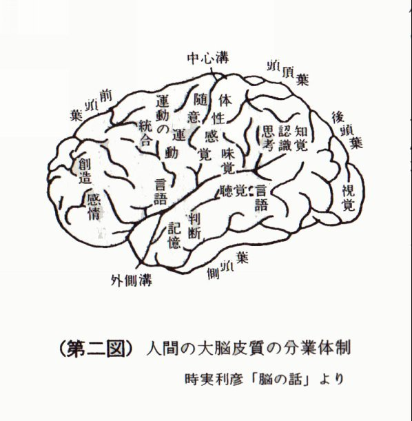
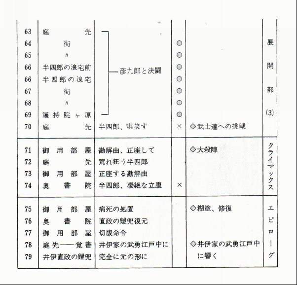

| ドラマとは何か？: ストーリー工学入門 | |
| 川邊 一外 | |
| (2015) | |
いずれにしても、私が言いあらわしたかったのは、
つくると云う、ごく簡単な概念なのであります。
－－－ポール・ヴァレリイ「詩学序説」
河盛好蔵 訳
川邊一外と私が松竹大船撮影所に助監督として入社したのは一九五四年の四月である。
はじめは五人採用ということだったが、戦争中から映画製作を中止していた日活が製作を再開することになり、西河克己、中平康、鈴木清順など六、七名‥の助監督が引き抜かれて移って行った結果、十一人が同期生として出発することになった。
いったん日活の入社試験にも合格していた山田洋次は、西河克己のすすめにしたがって松竹をえらんだという話である。もしこの決断が逆であったら、今ごろ松竹はどうなっていただろうか。人間の運命も会社の運命もいい加減なものである。
しかしこの年入社した十一人の運命はいい加減というよりはむしろ悲惨なものであった。
まずひとりは病いを得て、とうとう一日も出社することなく消えてしまった。その後彼は出身大学へ帰り、現在は早稲田大学教授山本喜久男である。年に一度日本文化デザイン会議で顔を合わせるたびに私は「君は得をしたね」ということにしている。別のひとりは入社して一週間後、ちょうど教育期間なるものが終って撮影所前の食堂でコンパをした夜、列車にはねられて死んでしまった。東京へ帰るはずの彼がなぜ逆方向の大船と藤沢の間の踏切にいたのか、その理由は今もってわからない。そしてもうひとりは撮影所に入って二度目の正月を過ぎて間もなく雪の軽井沢に入って自殺を遂げた。私が助監督としてつかえることの最も多かった大庭秀雄監督は「映画青年なんて文学青年ほどにも高級じゃないよ、その証拠に映画青年で自殺した奴なんて聞かないもの」というのが口ぐせだったが。
私は映画青年ではなく、また文学青年でもなかったが、それでも青年が持つ苦渋は人並みに持ちあわせていた。大学の四年開、私をとらえつづけたコンプレックスは、わたしのまわりにいる友人たちの頭の中にはどんな深遠な思考がつまっているのだろうかということだった。そし私自身の考えていることは、それにくらべればまるでとるにたりない幼稚きわまるものに思えるのだった。しかもその幼稚な問題すら一向に解決がつかず堂々めぐりをくりかえしているのだった。
就職試験を次々に落ら、十二月の末になって友人に誘われたというだけの理由で受けて、偶然にも合格した松竹大船へともかくも行く決心をしたのは、そうしたコンプレックスを与え続ける大学を一刻も早く去りたいからだった。ああこれで大学とはオサラバだと思うとせいせいした。それから三月の卒業まで、私は酒と麻雀と女以外何も考えない日々を過した。そうなると不思議に、友人たちの頭の中にも酒と麻雀と女以外には何もないように思えてくるのだった。
松竹大船撮影所の中庭の満開の桜の下に並ばされて同期生の記念写真を撮った時、私が唯一考えていたことは、こいつらの頭の中のことなんか決して考えてやるもんかということだった。その写真の後列中央に川邊は一人腕組みをして立っている。
他人の頭の中のことは考えないつもりの私だったが、川邊は気になる存在だった。第一に彼は寡黙だった。といって何も言わないのではなく、会合などでは終りごろに必ず一言は意見を述べた。しかしそれは全体の議論の流れと噛み合っているとはいえなかった。彼は全体の流れがどうなろうとそんなことには無関心というふうに見えた。超然としているといってもよかった。しかし暗い印象を与えるということではなく、時として冗談も言ったし、大声をあげて笑うこともあった。でもそれはどことなくギコチない感じだった。
慎重なのか、テレているのか、表現の前の思考の時間が人より長いように思われた。そのことはついつい私に川邊の頭の中について考えさせることになった。
撮影所の人間関係はお互いのサービスで成り立っているところがある。人々は意識的にあるいは無意識的にサービスをする。雪の中で自殺した男などは明らかにサービス過剰でそれに疲れて死んだともいえた。川邊は一切サービスをしなかった。そのことで川邊の不可解さは増した。また今にして思えば川邊が助監督室でたったひとりの一橋大学出身であったことも不可解の原因のひとつだったろう。東大とか早稲田とか日大とか何人もいると、あいつは東大だからとかやっぱり早稲田の奴はとかひとまとめにして理解した気になって安心するし、本人もどうやらそれに迎合して理解されやすいようにふるまうのである。川邊についてはこうした理解の便法もとざされていた。彼はまったくの個として助監督室に屹立していたのである。
私も当時別の理由で孤立していた。だから私は同期生の中では川邊に特別な親近感を抱いていた。入社して一年が終るころの萩原徳三『娘船頭さん』の完成記念写真を見ると川邊と私は並んでいて川邊はシート板（スクリプトをとるための板）を持っている。萩原監督は大庭さんのチーフで私はその下で働いていたから、この組では私のほうが生えぬきのメンバーで私が川邊を招き彼もそれを受けたのだろう。しかも早くシートをとる身分になりたいというのは若い助監督の願望なのに、私は一時的とはいえそれを川邊に託している。
こうした私たちの親近感がそれ以上に進まなかったのは、そのころのロケの宿の一夜私か川邊の寝言を聞いたからではないか。なんとそれは日本語ではないのだった。英語、と私はとっさに思った。しかしそれは英語ではなかった。二言や三言ではなくえんえんと断続的に続くそれを私はなんとか聞き分けようとしたが、遂に何語か判明しなかった。今にいたるまで私はあれが地球上の言語であったかどうか確めえないでいる。
決してこのことが原因ではなく、このころから私は撮影所の中での自分の状況を具体的
に突破するにはシナリオを書く以外にないという考えにとりつかれてそのための仲間ととつきあうことが多くなり、自然に川邊とは遠去かった。私は何度か川邊にシナリオを書くよう慫慂したが、彼はいつも、私か寝言について問いただしだ時とおなじようなよ謎めいた微笑を浮べて、
「俺はいいんだ」
というばかりだった。
その川邊がその後多くのシナリオを書き、松竹シナリオ研究所の専任講師となり、「シナリ才創作の心術」を講じて一冊の著書とするに至る。私は今なお川邊の脳中に何か去来するかつまびらかにしないが、彼がつねに物事を根源にまでさかのぼって考えたあとでないと発言したくない人間であることは、この一冊の書物を通読して、しかとうかがえた。
これからお話するのは、直接には、映画シナリオを書くための基礎となる理論ですが、当然ながらそれは、戯曲やストーリーあるいは小説を創作するための一般原理を含むことになるでしょう。
いったい、人間の創作活動に「基礎理論」などと云うものがあり得るのか？
これは、はなはだ面白い疑問です。
むしろ、そこにこそ、ものを創作すると云うことの特殊な本質が隠されていると云ってよい。
まず、そのことからお話を始めてもよいのではないかと思います。
たしかに、テレビ受像機や自動車や電気洗濯機など近代社会の商品は、ある理論にもとづいて製造されています。
むろん、個々の機器についてそれぞれ独自のノウハウはあろうかと思いますが、根底にあるのは、自然科学の基礎の上に立つ工学理論で、この「基礎理論」に関する限り、誰でも差別なくこれにアプローチすることが出来るし、老若男女、だれがこれを運用してもまったく同一の結果が出て来る極めて「客観的」なものです。
一方、ゴルフや柔道やスキーなどのスポーツ、あるいは、ピアノ、生け花、料理、などのいわゆるお稽古事を考えてみますと、流派のちがいはとにかくとして、これらにもほぼ一定の基礎理論があり、それにもとづく「訓練コース」がきまっています。
それらの世界に入門したいと思う人は、まず基本の手ほどきを受け、その目に見えるコースに従って地道に「練習」を重ねて行けば、かりに才能の差はあるにしても、だれでも或る一定のレベルにまでは達することが出来る。
ここにも一種の「客観性」があります。
しかし、シナリオ、戯曲、ストーリー、あるいは小説の創作と云うことになると、事情はそう単純ではなくなって来ます。
この世界に活躍する作家と呼ばれる人々のすべてが、必ずしも意識した「理論」をもって作品を作り出しているわけではありません。
逆に云えば、それぞれの作家の数だけの「創作の秘密」があって、おのおの一国一城に閉じこもっているように見えます。
伝えないから秘密なのではない、どだい伝わらないから秘密なのだと云うわけです。
この世界の入門書、理論書と称する本は星の数ほどありますが、透徹した理論体系をもつものなどまずは生命の生息する星の数ほどもないと云ってよい。せいぜいがひどく歯切れの悪い「芸談」かエッセイ、あるいは勝手な熱を吹いていると云った類いのものです。
毎日毎週、膨大な数のプログラムを送りだしているテレビや映画の製作会社にしてからが、それぞれ大まかな方針はあるにしても、独自の理論システムやノウハウを保持しているところなど一つもない。統一も脈絡もない恣意やカンや手探りだけで製品をつくり出し、それで経営が成り立っているのはむしろ不思議なくらいです。
近頃では、シナリオの研究所あるいは創作講座と云ったものが各所に設けられるようになって来ました。
しかし、誰にも納得できる基礎理論や客観的な「訓練システム」を持つところは稀で、それぞれ講師の経験や人柄にたより、いわば「恣意」的に運営されているにすぎません。
一時代前のゴリ押しの体験第一主義や、秘すれば花風の不可知論が、ともすれば罷り通っています。
スポーツと同様に、創作においてもまた練習量がものを云うことは間違いありません。
シナリオがうまくなりたかったら、他人よりも沢山書けばよい。
しかし問題はここにあります。
創作の場合、単純に練習量を積み重ねると云うわけには行かない。つまり何をどう書いていいか全然分らない、あるいは焦れば焦る程、まったく何も書けなくなってしまう、と云う事態が起こって来るからです。
同じ芸術のジャンルですが、絵を描く修業の過程の一つとしてデッサンサンと云うのがあります。石膏やモデルを目の前に置いて単色の線描をするあれです。
これは客観的に「目に見える」対象を前にしているのですから、描けるも描けないもない、デッサン量を積み重ねて行くことによって、確実に描写力は向上して行きます。
創作の修業には、このデッサンと云うことすらほとんど成り立ちません。
例えば、「西郷隆盛」をモデルにした創作デッサンを考えてみましょう。
「西郷隆盛」と云う目に見える形はどこにも実在しません。
かりにあったとしても、顔だけ描写してすむと云うものでもない。
各人が「西郷隆盛」に関して持っているイメージは千差万別です。
「西郷隆盛」について万巻の書を読破し、膨大な「客観的」資料を集めてみたところでそれがそのままデッサンになると云うものでもない。
修業者はただ広大な資料の海の中で、アップアップするだけです。「西郷隆盛」の何をどう描いたらいいのか？
彼は誰も「手をとって」教えてくれることのない（絵の場合それがある程度出来るのですが）、あてどもない暗闇の中に立ち迷うばかりです。
その負担は初心者にとって余りにも大きい。そもそもどんな「訓練コース」を辿って「練習量」を増やして行けと云うのでしょうか？
自分の身辺のスケッチから始めたらいいと云う人もいます。
しかし、片々たる私生活雑記と、われわれが最終的に目指す、がっちりとしたストーリー構成を持つエンターテインメントとは、ほとんど本質的に異っています。
いったい、どうしてこんなことになってしまうのか？
一つにはそれは、シナリオや小説の創作が、もっぱら頭脳の中だけの「情報」を素材とし、まったく目に見えない心理的筋肉を働かして行う力仕事であるためと思われます。
たとえば、ゴルフを習う時、大はスタンスの置き方、グリップの方法、肘の張りなど、「手取り足取り」のコーチを受けます。それはゴルフ練習の長い歴史の中に次第に熟成して来た或る「型」で、初めの内はかなりの違和感があります。
しかし、それに自分をはめこむ努力を反復している内に、徐々に最も合理的かつ効果的にクラブフェースで球をとらえる方法が身につくようになります。
初めから自己流の勝手な形で始めたのでは、結局大きな回り道をせざるを得ないことになる。
創作の場合、どうしてこう云う組織的「訓練」が成り立たないのか？
ひとえに、大の頭の中に手をつっこみ、ここに力をいれてこう、ここは力をぬいてこっちを曲げる、などと「実地」の指導が出来ないから－－－少なくとも、出来ないと考えられて来たからでしょう。
しかし、果たしてそれは本当に「出来ない」のでしょうか？
創作「技術指導」の困難のもう一つの理由は、それが否応なく人間の「価値観」の根底にかかわらざるを得ないと云う点でしょう。
その作者が、何を人生最高の価値と考え、何を生きる上での原点としているか？
この社会の中のどの部分を愛し、だれのために働こうとしているか？
早い話、カトリックの人と創価学会の人と、中核派の人と民青の人と、その立場のちがいは天と地とでしょう。
その根本にまで立入ることは、これはほとんど「技術指導」の限界を越えます。
その領域における選択は、これはその各人の、いわば実存的決断にまかせる他はない。
とは云うものの、価値観の種類は作者の数だけある。この領域を「技術」からきれいに切りはなすのは、まずは不可能と云うべきでしょう。
たしかに、創作の「指導」には以上に述べたような大きな困難があります。
しかし、だからと云って、前時代的な根性第一の精神主義や、徒弟制度風の経験至上主義に逆戻りしていいと云うことにはならないでしょう。
たとえ目に見えない手に触れられない心理的な世界の作業であろうと、あえてそこに分け入り、これを「現実的」にとり扱う方法は必ずあるはずです。
近代科学の方法論が、現代社会の一つのコンセンサスを得ているとするならば、このジャンルにも、いわば科学的な「客観的」基礎理論を導入することは可能なはずです。
私はこれから、過去この問題にかかわって来た多くの思想家や芸術家、科学者たちの考え方、さらに近来企業サイドで発展の著しい創造工学の成果を援用しながら、この問題に対する一つの試論を提出してみたいと思います。
それは、シナリオあるいはストーリーの創作に関する一つの心理的な技術－－－心術にかかわることであり、そのいわば工学的「基礎理論」となるはずです。
私はここで、特にアカデミックな追及をする意図はなく、批評家風の日和見論議を並べ立てるつもりもありません。
私たちに必要なのは、今日、すぐに、実際に作品を創り出すのに役に立つ、「創造」の実践理論です。
別に努めずとも傑作が書けて書けて仕方がないと云う天才は知らず、「意識」してものを創り出すと云う苦しい道を、私たちは歩いて行かなければなりません。
私たちに必要なのは、何を書いていいか分らなくなった時、あるいはどうまとめたものか行き暮れた時、確実な方向を指し示してくれる或る方法です。
袋小路に行き詰り、どうにも動きがつかなくなった時、間違いなく脱出口に導いてくれる或る心術です。
それはまた、ドラマの「不純性」をそのままにすくい取りながら、同時に簡潔で力強い美学をもつ、「純粋ドラマ」に至る道でもあります。
かつて「月月大水本金金」の猛訓練で鳴らした日本海軍の精神主義を打ち破ったのは、科学的「理論」に基づく米軍のレーダーでした。
私は別に訓練や経験が無意味だと云っているのではありません。
しかし、理論と云うものは、時に膨大な経験の量を一挙にワープし、人間を新しい地平にのし上げることの出来る不思議なしろものです。
正しい理論の方向づけがあってこそ、訓練や経験ははじめてその真価を発揮します。方向をあやまっていくら一生懸命走ってみても、目的からはますます遠ざかるばかりと云うものでしょう。
私は、時に禅問答めいた、奇妙なお話をしなければならないかもしれません。
それはひとえに、これから私たちが入り込もうとしている、目に見えない、手に触れない世界の操作を、白日の下にとり出し、あえてそれに手を触れようとするためです。
私は、「実感」を原則とし、可能なかぎり「現実的」にお話を進めたいと思います。
ドラマとは一体何なのか？
私たちは何故ドラマを見、そして、書かずにはいられないのか？
その疑問は、私たちが生きてあることの根本的な矛盾と深いところで結び合って、私たちに答えを迫って止みません。
私はまず、その根っ子のところを掘り起こすことから仕事を始めたいと思います。
まず、「基礎の基礎」と云ったところから、お話をはじめようかと思います。
それは、作品の中で私たちはどうして他人になることが出来るのか、と云う問題です。
小説の世界のジャンルの一つに「私小説」と云うのがあります。
作者自身の生活や、身近に起こったことを材料にして書いたもので、日本独自の文学形態と云われていますが、過去に名作と呼ばれる作品も数多くあります。
ところが、演劇や映画・テレビの世界で、この種の「私戯曲」あるいは「私映画」と云ったものは、まったくないとは申しませんが、まずは存在しないと云ってよい。
もともと「商売」として成り立たない。いやしくも、他人からお金を頂くエンターテインメントとしては、ほとんど通用しないと云うことなのです。
現在、世に流通している舞台やスクリーン、ブラウン管の番組を見れば、このことは一目瞭然でしょう。
それらの作者で、自身の「私生活」や「私体験」にこだわっているものは一人もいないと云ってよい。いや、こだわっていてはまるで仕事にならないのです。
たとえ「身近な」ホームドラマを書いたにしても、それは、自分の実際の家庭とは別の場所の、自分とは異なった複数の男女の物語です。
場合によっては、数百年、数千年も前の、あるいは後の、遠く離れた国の、あるいは星の、会ったこともない人々の姿を、まことしやかに描かねばならないことになる。
「事実は小説よりも奇なり」と申しますが、「小説よりも奇なる事実」などと云うものは、私生活の中にそうザラに転がっているものではない。したがって、商業演劇・映画・テレビの世界に身を置くものは、否応なく「他人の生活」の中にウの目夕力の目で「奇なるストーリー」を探し求めて、それをメシの種にすることになる。
この場合、「自分」と云うものは、一体何処に置いたら良いのでしょうか？
一気に押し寄せる膨大な「他人のストーリー」の中で、「自分」を守り続けるにはいったいどうしたらよいのでしょうか？
自分の身辺を「誠実に」描写することから創作をはじめるなどと云う、いわば自然主義的方法がほとんど成り立たないとすれば、遂に他人をダシにして自分を、虚構をカセにして真実を語る方法が、探し求められなければならないでしょう。
他人と自分との距離の測定。自分がどうして他人になることが出来るのか？
逆に、その他人の中に自分を浸透させるには、一体どうしたら良いのか、これは作者を志そうとするものにとって極めて大きな問題と云わなければなりません。
では、「自分」とは一体何でしょうか？
新しくグループや組織に入った時、私たちはよく多勢の前で「自己紹介」をします。
自分の名前、出身、学歴、住所、家族、趣味、性格と云ったところが内容になります。
この「自己」紹介をしながら、心の奥底に、時にフッと或る「むずがゆい」感じが横切るのを意識なさったことはないでしょうか？
自分の喋っている「自分」が、別に嘘を云っているのでもないのに、本物の自分とはどうも一寸違っているような気がする......。
自分は何でこれこれの名前であり、しかじかの場所に住んで、かくかくの家族と生活していなければならないのか......？・
自分は、もっと別の名前を持ち、別の場所に生まれ、別の父母の下に育ってもよかったのではないか......？・
これは、「異邦人」の作家アルベールーカミュによって、不条理(absurde)と呼ばれた感覚で、文字通り、現実の中にある或る「馬鹿馬鹿しい」「おかしい」感じ。普段見慣れた自分が、自分にとつて見知らぬ他国の人に見えて来る、いわば「異邦人感覚」とでも云うべきものです。
これもフランスの作家イオネスコに、「ストーリー・ナンバー」と云う奇妙な絵本のシリーズがあります。
今年三才になる小さな女の子が、父親にお話をせがみます。
ものぐさで眠たがりやの父親は、そのたびに変てこな物語をでっち上げて間をつなぐのですが、例えば或るお話では、そこに登場する人物がすべてジャクリーヌと云う名前なので、これを真に受けた女の子は、買物に出掛けても、周囲の人や物の名前をすべてジャクリーヌと信じこみ、人々をあわてさせます。
あるいは、ドアに「壁」と云う名前をつけ、足に「耳」と云う名前をつけるので、女の子は「壁を開けて耳で歩く」などと云い張って、人々の目を丸くさせます。
このいかにも他愛もない寓話は、しかし、どこか私たちをドキリとさせるものを持っています。
それは私たちが、ふだん何となくぼんやりと気がついていて、どちらかと云えば押しかくそうとしている或る真実を、くっきりとあばき出して見せてくれているからです。
自分と云うものは、何とすぐにバラバラになってしまうものなのでしょうか？
自分というものは、何と自分でないもので出来上っているのでしょうか？
十七世紀の哲学者デカルトは、近代自然科学の方法の基礎を確立した人として知られていますが、彼はその著書「方法序説」において、真理に至るための極めて明快な方法を提出しています。
彼は、少しでも疑いをさしはさみ得るものは、これを虚妄のものとして退けて行き、その最後に残つた、どうしても疑い得ないものの上に、明証の体系を築き上げるべきだと考えたのです。
こうして「われ惟う、故にわれ在り（cogito ergo sum）」と云う有名な言葉が生まれて来ます。
疑って、疑って、疑った果てに、デカルトが「われ惟う（cogito）」と云った時、彼が見たものは一体何だったのでしょうか？
それは理屈ではなく、禅の悟りにも似た一つの実感であったはずで、それこそまぎれもなく、彼が最後に到達した「本当の自分」だったのに違いありません。
シナリオを書こうとする時、あるいは一般にものを創ろうとする時、私たちもまた、この疑い得ない自分、ゆるぎのない自己の上に作品を築き上げて行くべきなのではないでしょうか？
私たちがこれこれの名前であること、それは、必ずしもその名前でなくてもよかったのではないか、と云う意味で何処か「疑わしい」ことです。
とすれば、これは絶対に「虚妄」のものとして一旦退けてみましょう。
同様に、自分がしかしかの場所と時代に生まれたことは、いわば偶然的なことです。
とすれば、これを否定してみることは出来るでしょう。
かくかくの学歴、家族、趣味、その他、いずれも、「そうでなくてもよかった」、あるいは「別のものでもよかった」感じを免れません。
こうして、いままで何となく「絶対」なもののように感じられていた「所与の自分」、あるいは二次的自己」は、実は極めて「相対的」なものに過ぎなかったのだと云うことが見えて来ます。
とすれば、その「相対的な自己」を仮空なものとして、否定し、否定し、否定し去った後には、いったい何か残るのでしょうか？
やはりデカルトのように、その「疑う自分」「否定する自己」だけは疑うことは出来ない、あるいは否定することは出来ない、と云うことになるのではないのでしょうか？
私は今、「理屈」を云っているのではありません。
不条理の実感をテコにして、その「自分の相対化」「自己否定」の作業を、実際にやってみて欲しいと申し上げているのです。
その「作業」の果てに見えて来る「本当の自分」「真の自我」と云うものが一体どんなものか？
その「境域」について語る言葉は、もはや何もありません。
各人が各人の深部で、いわば実存的に「体感」する他はない。
実存主義などと云って、何かひどく難しいものの代表のように云われていますが、すぐれた思想がすべてそうであるように、実は極めて単純なものだ。
本当の根っ子のところに、いったい何を据えるのかと云うことです。
自室で、原稿用紙を前にして、作家がペンをとる時、彼はだれも助けてくれることのない絶対の孤独の中で、目に見えることもない「社会」と相対します。
彼は一体何を信じて事をはじめたらよいと云うのでしょうか？
その境域は、やはり絶対の孤独の中で、独り「神」と対面する宗教者のそれと、そう遠いところにはないはずです。
さて、ここで私たちは、非常に面白いことに気付きます。
もし「所与の自分（一次的自己）」と云うものを、そのように相対的なものだと見ることが出来るなら、その自分をもう一つの別の「望ましい自分」と入れ代えてしまうには、僅かに一歩あれば足りる、ということです。
もし、二十世紀に生まれた某と云う人が、自分を二十世紀の某と云う人間でなくてもよかったのだと実感することができるなら、彼が、紀元前一世紀のローマに生きたシーザーと云う人物であってどうしていけないでしょうか？
クレオパトラであってどうしていけないでしょうか？ロメオとジュリエットであって、一般に任意のＸ氏であってどうしていけないのでしょうか？
そう、まさにここにこそ、「演戯」（あえて演技とは申しません）と云うものの可能性の根底があります。
俳優と、冒険者と、ドン・ファンとは、たった一つの点でよく似ています。
彼等は、自分が只一人の人間でしがないことに、たった一つの環境だけに埋もれることに、わずか一人の女だけに縛られることに、耐えることの出来ない人間たちなのです。
彼等が、次から次へと標的を変えて行くのには、ただ「移り気」と云う以上の深い理由があります。
彼等は、たった一人の「所与の自分」であることに、何時までたっても決して満足することがないのです。
「作家」もまた、このような意味での「演戯者」である必要があります。
彼の本当の仕事は、小さな「一次的自己」にこだわることではなく、それを打ち破り、他人の中に十全に自己を生かして行くことです。
いまここにいる自分を「異邦人」と見切ることが出来るなら、おなじ「異邦人」である「他人」になることなど、それこそ只の一またぎではありませんか。
彼の自我は、こうして、世界全体に拡大することが出来るのです。
不条理な存在である「自己」を相対化し、その奥にある「絶対の自己」「無（ゼロ）の自分」を見付け出すこと。
そしてそれを根底として、absurdeな世界の中に「演戯」を開始すること。
そこに、私の考える、シナリオ作者を含めた「作家」の「基礎の基礎」が存在します。
それではその「作家」は、どのようなメカニズムの中で「自己」を実現してゆくのでしょうか？
それが、次章のお話になります。
前章のお話は、自分と云うものが如何に「自分でないもの」で出来ているか、その自分でないものを否定し否定し否定しつくして、最後にどうしても否定し得ない自分、その「ゼロの自分」をこそ根底にして、「演戯」を開始すべきではないかと云うことでした。
それでは今、その「ゼロの自分＝本当の自己」の実在を実感することが出来たとして、それによって否定された「自分でないもの＝他者」は、実在していないのでしょうか？
それはまるで「本当の自己」の影のようなもので、創作にとってまったく何の意味も持たないのでしょうか？
私は、そうは思いません。
むしろ、事情は全く逆と云ってよい。
その「自分でないもの＝他者」こそ、まさに作家のメシの種なのです。
「有なる他者」をすべて否定し尽した「無なる自己」は、自身の実在を実感すると同時に、また、その自分でない「他者」の実在をも認めなければなりません。
「他者」は「自己」と全く別個にそれ自身の厚みと重さを持ち、それ自身の法則によって動いています。
それは、「自己」の側の勝手な思い込みや期待とは無関係に、「自己」の存在する以前から、あるいは「自己」が存在を止めた後も、厳然と、それ自身によって実在している何かなのです。
「自己」は「他者」に働きかけることによって、このことを実感することが出来ます。
「他者」は決して「自己」の思うままには動かず、その固有の性質をよく知り、その法則にしたがわない限り、絶対に「自己」の云うことをきいてはくれないからです。
少なくともこのことをはっきり認めることなくしては、作家の仕事は始まらないでしょう。
「方法序説」に於いてCogitoを発見したデカルトは、それにつづく「省察録」で、有名な蜜蝋の例を持ち出し、自分の幻想を超えた物質世界の実在を論証しています。
このことによってこそ、彼はまさしく、近代科学の父と呼ばれるのです。
さて、私はいま、「自分」の中の「自分でないもの」を徹底的に懐疑し、退けて得られる「自己」と、その外側に「自己」の思惑とは一切かけはなれて、厳然と実在する「他者」と、二つのの全く相反する要因を設定しました。
この二つは、その性質上、お互いに完全に矛盾しています。疑し、退けて得られる純粋な「自己」と、その外側に「自己」の思惑とは一切かけはなれて、厳然と実在する「他者」との全く相反する要因を設定しました。
この二つは、その性質上、お互いに完全に矛盾しています。
「自己」は、自分の中の「他者」を絶対に否定することによって得られたのですから、「無（無限・絶対）」 「不可視・不可触」で、「純一かつ明晰」を指向するものであり、どちらかといえば「精神」や「夢（理想）」や「情動」や「直感」や「無意識」の側に属します。
一方、「他者」は「自己」の対極として、「有（有限・相対）」 「可視・可触」で「雑
多かつ混沌」に向かうものであり、どちらかと云えば、「物質」や「現実」や「知識」
や「分析」や「意識」の側に属します。（第一図）
私はいま、止むを得ず、非常に抽象的な言葉を使ってお話しています。
しかし、それらの一見むずかしげな符牒で私か指し示そうとしているのは、極めて具体的で単純なことなのです。
シナリオや、小説を書こうとする時、私たちの頭の中には、「こうしたい」「こうあるべきだ（Sollen）」と云う非常に強い力がはたらいています。
それは主として「自己」の側から提出されると云ってよい。
一方、「他者」の側からは、「いや、現実にはこうだ」「実際にはこうある(Sein)」と云う同じように強い反駁が提出されます。
そして私たちの「創作」は、好むと好まざるとにかかわらず、この二つの全く正反対の力の衝突と葛藤の中で進んで行くのです。
逆に云えば、頭の中のこの二つの矛盾要因をしっかりと把握し、それを意識して上手に使いこなして行くことこそ、凡そ創作と云う仕事の実態に他ならないのです。
いわゆる「創造の秘密」は、まさにこの場所にこそかくされています。
さて、この二つの要因は、お互いに対立し矛盾しているとは云っても、丁度一枚の楯の両面のように、決してきれいに切りはなされていると云うものではありません。
この二つの極の間には、くっきりとした境界線はなく、しかも、相互に媒介し、依存し合う相手が存在しなくては、自分自身も存在し得ないと云う関係にあり、容易に相手の立場にすりかわることが出来ます。
「自己」は、「他者」を対立者として否定することによって自身を発見しました。
逆に云えば、「自己」は「他者」がなくては、存立することが出来ないのです。
そもそも「こうしたい」と云う発想は、「こうある」と云う現実を根拠としないで、どこから生まれることが出来るでしょうか？
「自己」が自分自身を実現するのは、まさに「他者」を素材とし、媒介とすることによってではありませんか？
一方、「他者」の立場に立って「自己」を見れば、「自己」こそ「他者」に他ならないのではないでしょうか？
「他者」は「自己」を媒介として、自覚され、認識されたのですから、その存立は「自己」の存在を絶対条件とすると云えます。
「こうある」と云う現実が認識されるのは、まさに「こうありたい」と云う主体のはたらきかけがあってこそなのです。
「自己」を媒介とせずして、「他者」はどうしてそれ自身を自覚することが出来るでしょうか？
ビルや家具や機械や書類や芸術作品などは、明らかに「他者」ですが、その中にはまぎれもない人間の「自己」が実現されているではありませんか？
「自」と「他」－－－この両者は、互いに持ちつ持たれつ、交流し合い、媒介し合い、生き生きとした相互対話の中で運動しています。
正反対ではありながら、切っても切れない関係にあり、そして結局は一つのことの両面に過ぎないのかもしれません。
このありようを、哲学用語で「相互浸透」「絶対矛盾的自己同一」などと呼びますが、何も言葉のいかめしさに惑わされることはない。
大切なことは、「創作」と云う心理的な作業の、云わば目に見えない実相を、しっかりと現実的に、見据えることだ。
その二重構造の動きを、具体的に体感し、把握することです。
人間の精神活動が、大脳と呼ばれる肉体の一器官によって営まれていることは、現代ではもう誰も否定する人はいないでしょう。
シナリオの創作も、その例外ではありません。

大脳は、上から見ると、左右一対の二つの半球に分れ、そのもとのところで、脳幹と呼ばれる棒状の部分につながれて、脊椎に連絡しています。
これを両半球の境目に沿って縦断すると、いくつかの層が見られますが、ごく大ざっぱに云えば、表面とそれに近い「新しい皮質」と、その奥深い内側の「古い皮質」とに分れ、その「古い皮質」が「脳幹部」を押し包む形になっています。
新しい皮質」は、脳の中でも系統発生的に最も新しい部分で、知覚、記憶、言語など人間に特有な高等な精神活動をつかさどり、特に、その前面の「前頭葉」と呼ばれる部分は、計画、推理、想像など、「創造」に関連した高度な知的活動の中枢と云われます。
一方、「古い皮質」は、系統発生的に脳幹部に近付くほどより古い部分で、本能や自律神経系など人間の生物としての基本的な活動をつかさどり、情動や無意識など「より低い」心の座と云われます。
脳の詳細な学問的知識については、例えば時実利彦博士の古典的名著「脳の話」（岩波新書）があり、最近では急速に進歩した大脳生理学の多くの成果が発表されていますので、それらを参照して頂く他はありませんが、ここではごくごく大まかに、人間精神の座である脳の中にも、前頭葉を極点とする「新しい部分」と脳幹部を極点とする「古い部分」との二つの項が、対立的に存在し、働いていると云う事実に注意しておきたいと思います。
アメリカでベストセラーとなり、日本でも翻訳されて評判になった、ブレークスリーの「右脳革命」（大前研一訳）では、大脳の左半球は言語を中心とする論理的、知的な活動をつかさどり、右半球は直接的なイメージを中心とする感覚的、情的な活動をつかさどると云い、創造活動に果たす「右脳」の大きなはたらきを認めています。
ここにも、脳の中に協力してはたらく、二つの対立項の存在が指摘されています。
いずれにもせよ、私かすでにお話した「他者」の認識は、脳の中のこの「新しい部分」あるいは「左脳」に於いて行われ、深い「自己」の根底は、この「古い部分」あるいは「右脳」にあると申し上げても、必ずしも誇大な文学的独断と云うわけではなく、少なくともそう大きな見当外れではないと思われます。
この脳の二つの対極点には、「神と悪魔」「ジキルとハイド」「善と悪」「愛と欲望」「陽と陰」「男性原理と女性原理」「理性で動くものと快感で動くもの」「タテマエとホンネ」「知と痴」「硬直と柔軟」「抑圧と反抗」「顕在意識と潜在意識」など、この他にも無数の絶対矛盾的な対立項が、照応するものと思われます。
第四図は、「自己」と「他者」と云う対立項の「自己」（自分）の側を、さらにパラフレーズしたものです。
「自己」は決して単一体としての存在ではなく、外側に「他者（他人）」（＝世界）と相対するとともに、また内側にも「自己」と「他者」の対立を抱えています。
一方、「他者（他人）＝世界」の側でも、その内部に「自己」と「他者」に照応する対立をはらみっつ、外側と相対しています。
部分は全体の中に含まれると云うのは常識です。しかし、ここでは、「自己」（自分）と
云う部分の中に、さらに「自己」と「他者」と云う対立項の全体が含まれています。
すなわち、部分の中に全体が含まれると云う不思議な関係が成り立っているのです。
これは、私か提出した創作行為の矛盾の構造、二重の仕組みの中でも、それ自体矛盾したさら
に重層的な構造と云うことが出来ます。
まさにこのことが、創作行為そのものに、極めてダイナミックな生き生きとした活動性を与えているのです。
この構造の全体こそ、まさに私たちの生きている「現実＝世界」の実相に他ならず、その重層の構造を見破り、その上に立脚しながら、私たちの生きている現実の姿を原稿用紙の上に再現して行く作業こそ、まさに作家の仕事の実態と云うべきなのです。
ドラマの創作とは、世界をこの二重構造－－－矛盾の相に於いて認識する作業です。
同時に、その作業自体が、鋭い矛盾に働かされたはなはだドラマティックな過程なのです。
創作の仕事は決して一筋縄ではありません。
それは実に、まったく矛盾する二筋の縄を、苦しみ、苦しみながら一筋に綯い上げて行く、きびしく、忍耐の要る作業なのです。
その縄の一筋は、「他者」を知的に分析し、その現実認識に至ろうとする、いわば「高い」部分に関するものです。
別の一筋は、「自己」を情的に直感し、いわば「暗く抑圧された」部分をもあえて動員しようとする、「低い」部分に関するものです。
こうして、この全く相矛盾する二つの動因を、自身の頭脳の中で意識して戦わせつつ、原稿用紙と云う想像的構築世界の中で、所与の「一次的自己」を脱却した「演戯」を展開すること。
まさにそのことによって、神でもあり、同時に悪魔でもある「人間」のあるがままの全貌を彫り上げて行くこと。
すなわち、厳しい現実認識であり、同時に作者の夢の如実な体現でもある「作品」を、たゆみない手仕事によって紡ぎ出して行くこと。
そこにこそ、おおよそ「創作」というものの真の姿があるのではないでしょうか？
創作の仕事とは、人間の置かれた現実、乃至は頭脳の中に実在する全く相矛盾した二つの動因を、主体的に統一しながら、原稿用紙という想像的世界の中に「演戯」を展開すること、と云うのが前章までの私の考案でした。
さまざまにパラフレーズされるその二つの対立項を、私はとりあえず「自己」と「他者」と云う二つの符牒によって総括しましたが、その限り、それは決して一筋縄でとらえられる性質の作業ではなく、あたかも二筋の縄を一筋に綯い上げるが如き、苦渋に満ちた労働であると申し上げたのでした。
では、ここで云う「演戯」とは、一体何でしょうか？
「演戯」とは、文字通り「演じ戯れること」、すなわち、私たちの心の奥深くに、何故かは知らず「溢れ浮かれ出すもの」、何時かは堅いきびしい現実の殻を破って「発出し、溢れ出して止まないもの」とまず申し上げておきましょう。
有名なスペインのアルタミラ洞窟には、人類最古の絵と云われる迫真的な動物壁画があります。
これらは、鑑賞用などと云うものではなく、狩の獲物の豊かさを願う古代人が切実な祈りをこめて描き出した、呪術的な（その意味で極めて実用的な）意味合いの強いものと云われていますが、凡そ芸術と云うものが人間の生活に根ざし始める、その始源の状態を表していると云われます。
現代に於ける私たちが、自分もシナリオやストーリーを書いてみたいと考える時、そこにはやはりこの古代人の壁画と同じ系統発生的動機が、云わば、個体発生的に繰り返されていると云ってよいのではないでしょうか。
現実の日々の生活の中で、私たちは常に色々な夢をもち、ああもしたいこうもしたいと考えています。
しかし多くの場合、「他者」としての社会的環境はそれを許さず、実際にはああある、こうあると云うことで、夢たちは無残にも押し潰され、圧殺されて行きます。
すなわち現実生活の中で、私たちの中には常に何かが「余り」、鬱積して行くのです。
こうして私たちの多くは、劇場やテレビや書物やにその解放を求め、さらに少数は、自分の手で、自分の作品を作り出したいと考えるにいたるのです。
とするならば、いま、自分なりの脚本や物語を創り出そうと考える私たちは、その自分の心の奥深く、理由も知れず「うごめき、溢れ出そう」とするものを、もっと大切にしなければならないでしょう。
少くとも、それを押し潰し、圧殺する側から書こうとしてはならない。
むしろ、はっきりとその「上からの」力に相対し、自らの「夢」や「祈り」をしっかりと押し出して行く立場に立たなければならないでしょう。
頭脳の中のこの二つの対立する動因を、意識して上手に使いこなすこと
それはさらに踏み込んで云えば、「ゼロの自己」を極点とする、自分の中の「より低い、恥ずべき、悪の部分」、私たちがしばしば不当に抑圧しがちな「情動的な、快感原則で動く部分」を意識してもっと活用せよと云うことに他なりません。
作家と云うのは、実は（常識の期待に反して）、自分がいい子になろうとしては、決して成り立たない因果な商売なのです。
人間の中の、「抑圧された、暗い、放恣な部分」を白日の下にひきずり出して来なければ、ほとんど仕事にならない困った稼業なのです。
すぐれた作家はたしかに、高貴な美しい魂を生き生きと形象化して見せてくれます。
しかし、それはその作家が、それに反比例して低俗で醜悪とされる、奈落の世界を彷徨し、そこから血みどろに這い上がって来たことの結果に他ならないのです。
その振幅が大きければ大きいほど、その作品のより深い魅力が私たちを惹きつけます。
「天使」の創造には、「悪魔」の協力が絶対に不可欠なのです。
私たちは、所謂ポルノ作家を必ずしも尊敬しません。
それは「低い材料」を「低い手」で振幅浅く扱っているからです。
同じ「低い材料」でも、それが「高いすぐれた手」で取扱われた時、それは文字どおり「人間性の深淵に迫る」問題作となるでしょう。
私は、「低い」とか「醜悪」とか「恥すべき」とか申しました。
しかし、それはあくまで、現在「他者」として出来上った社会体制の都合の上での、相対的な価値づけに過ぎません。
その枠を離れて考えれば、「脳幹部」を極点とする「古い皮質」の部分が、「前頭葉」を極点とする「新しい皮質」の部分より、低次元であるとする理由は全くありません。
むしろ前頭葉こそ「古い皮質」に対する新参者に過ぎず、その「高い精神活動」なるものも、実は「古い皮質」が自身をより良くコントロールするために、あとから設置した出店のようなものかもしれないのです。
前頭葉（→他者）と脳幹部（→自己）との関係は、例えば自動車のステアリングとモーターとのそれに似ています。
たしかに車が何処へ行くかを決定するのはハンドルですが、だからと云ってハンドルがエンジンよりすぐれていると威張る理由はないでしょう。
エンジンが働かなければ、車は何処へ行くことも出来ないのですから。
いずれにもせよ作品の創造には、私たちは、自分の中の「高い」部分も「低い」部分もすべてひっくるめた、文字通りの「全人格」を投入しなければなりません。
「創作」は、たしかに極めて知的な活動の一つです。
しかしそれは、私たちが「世界に冠たる」日本の教育制度の中で受けてきた知的訓練とは、恐らく全くちがったところにある何かなのです。
このことは充分に銘記しておく必要があります。
日本の教育制度は、歴史的に、富国強兵を目指し、先進西欧文明に一日も早く追いつくことを目的とした、テクノクラート（技術官僚）養成のそれでした。
そこで要求されるのは、すでに出来上がっている知識の出来るだけ多量の記憶と、その忠実な運用でした。
新しい知識や情報の「創造」に関する訓練や教育システムは、とりあえずその余裕がなく、全くと云ってよいほど無視されていたのです。
博覧強記にすぐれたもののみが良い点を与えられ、「一流大学」から「一流企業」「一流官庁」に入ることが出来ます。
一方、その軌道からはみ出して、余計な「情熱」や「人間的欲求」にふける者は、「不良」乃至は「落ちこぼれ」として容赦なく弾圧され、はじき出されます。過去、すぐれた作家や詩入たちの多くは、学校のもてあましものであり、その体制からの脱落者でした。
日本経済社会の高度化とともに、「一流」を目指す受験戦争の統制はますます厳しく、「偏差値」に象徴される非人間的な選別は、家庭内暴力、校内暴力、登校拒否、いじめなどの顕著な歪みを産み出しました。
過去の長い教育過程の申で、出来合いの知識を上手に操作することによって、ほめられ、良い点をもらって来た私たちには、すでにそのような条件反射が出来上っています。
創作と云う「知的操作」に対しても、無意識にその手慣れたやり方を踏襲しようとするのです。
自分の申の「高い」とされる部分だけを使い、すぐに良い子になろうとする。
しかし、実際にはこれではロクな作品が生まれないことは、一寸やってみればすぐに分ることです。
「創作」を志す私たちは、この点、自身の意識に一種のコペルニクス的転回を与える必要があります。
既に申し上げた通り、自分の「低く、醜い」とされる部分をも挙げて作品の中に投入しなければならないのです。
創作の仕事には、自分の中の抑圧された「悪の部分」を解放し、協力させることがどうしても必要です。その意味で、引火性物質を取り扱うにも似た、すこぶる慎重を要する仕事と云うべきです。
一次的な善と悪との彼岸を越えて、より大きい真と善と美を追及する精神の自由さと強靭さとが不可欠です。所謂「良家の子女」のアダやおろそかに手を出すべき仕事ではないのかもしれません。
私の所属するシナリオ研究所では、毎年春・秋に研究生を募集し、創作と論文で選考を行っていますが、その試験の度毎に奇妙な現象が見られます。
応募者は、毎回ほぼ男性３分の２、女性３分のＩと云う比率が通例なのですが、これが合格者になると、男女ほぼ半々と云う割合に変ってしまうのです。
しかも、最上位３人までは、殆ど例外なく毎回女性によって占められています。
もとよりこれは、男性である審査員が女性に甘いと云う次第ではありません。
感性と価値観の異なる複数の審査員が、受験番号だけを頼りに採点を行い、全く機械的に集計された数字で及落を決めるのですから、これはやはり、この仕事に対する女性のすぐれた適性を暗示していると云わなければならないでしょう。
特に顕著なのは、30代の男性と女性の答案の比較で、勿論例外はありますが、前者が概して観念とクテマエだけのギクシャクした作品ばかりなのに反して、後者には、如何にも現実に即した、みずみずしい柔軟な表現が多く見られます。
「女は真理を求めない」と云ったのはニーチェですが、これは無論女性蔑視の言葉ではなく、男性の「真理」幻想とは別に、女性には女性独自のものをとらえて行く方法があると云う洞察です。この立場に立ってニーチェは、実は「男の真似をしている」に過ぎない所謂婦人運動家たちに、痛烈な嘲笑を浴びせています。
某作家の云うように、確かに女性は「子宮で考える」のかもしれません。
そしてそのやり方こそ、人間の心の中で、前頭葉の制御を超えた「最も深い快い部分」を動員しなければならない「創作」という仕事に、甚だよくフィットしていると言えなくもないのです。
少なくとも、硬直した真理ゲバルトや観念ゲームに舞い上りがちな男性創作者たちにとって、この女性特有のしなやかな現実性は、大いに学ぶべき示唆を含むように思います。
いずれにもせよ、私たちは、自身の心の奥深くに混沌として蠢き、沸々として浮かれ立つ、私たちが普段ともすれば抑圧し勝ちな、いわば生命の根源的な部分から仕事を持ち上げなければなりません。そこにこそまさに、私の云う「演戯」の根底があるのです。
人間は、自らが生きて行く利便のために、社会の組織と秩序とを作りました。
しかし、一旦出来上った「社会」は、逆に人間の生き生きとした生命を束縛し、抑圧する「こわばった」構造に転化するのです。
いわゆる「自己疎外」の現象ですが、そのこわばりと死の呪縛を解きほぐし、まさにそのことによって、現代社会の歪みの中で失われつつある、生き生きとした人間への愛を、みずみずしい生命のリズムと息吹きを取り戻すこと。そこにこそ私達の目指す「作家」の機能があり、栄光があるのではないでしょうか。
自己」（→脳幹部、右脳）と「他者」（→前頭葉、左脳）と云う全く矛盾する二筋の縄をあやなしつつ、原稿用紙の上に人間を「演戯」すること。それが、凡そ「創作」と云うものの実態に他ならない、と私は申しました。
では、「人間を演戯する」すなわち「人間を描く」とは、さらに具体的には、どのような心的手続きによって行われるのでしょうか？
私たちの身辺には、よく物真似上手で、人を笑わせることのうまい「ひょうきん族」がいます。タレントや知り合いのほんの一寸した仕種や口癖を極めて巧みに真似、演じて見せるので、しばしば一座が腹を抱えて笑いころげたりします。
そして私たちの多くは、自分にはとてもそんな器用なことは出来ないと何となく思い込んでいます。
「演ずる」と云うのは、ひどく特殊な天与の才のように感じているのです。
しかし、実を云えば、人間を「演ずる」とは、この種の小器用な物真似とは全く違った何かなのです。
「才能」の如何に拘わらず、私たちの誰もが、人間を演戯することは出来ますし、一定の訓練によつて、必ず或るレベルにまで達することが出来ます。
演戯するとは、私たちが原稿用紙と云う「想像的世界」の中で他人になって生きる－－－行動すると言うことに他なりません。
現実生活の中で、私たちは、例外なく「自分」として生き、行動しています。
そして、第一章でお話した通り、その「自分」が実は「自分でないもの」の集合体として出来上がっているとしたら、その自分を、「想像世界」の中でスポンと「他人」と入れ換えてしまうのは、そう難しいことではないのではないでしょうか？
もし今ここにいる自分を「異邦人」として相対化することが出来るなら、同じ異邦人である「他人」になることなど、それこそただの「一跨ぎ」と云うわけなのです。
そこで「他人になる」ためのまず第一着手は、その他人の生きている環境、すなわち社会的な枠組みを作者の頭脳の中に想像的につくり出すことです。
私たちは現実に、国、地方、学校、職場、家庭など、それぞれの自然的・社会的な環境の中に住んでいます。
それはまた、私たちの頭脳の中に蓄えられた環境情報の集積体とも云えます。
この情報の集積体を、カセットのように、そのままポンと「他人」のそれに交換してしまうのです。
その「他人のカセット」は、それが何千年前のものであろうと、後のものであろうと、私たちが緻密に想像力を働かせることによって、現実のものと同じように造り出すことが出来ます。
「他人」の再現のための第二着手は、その他人の生きて来た過去の行動の軌跡、いわば「履歴」
を、これも想像的に造り出すことです。
彼の現在の行動の理由や動機がその中に隠れていることが多いからです。第一着手が空間的環境造りとすれば、これは、いわば時間的環境造りということが出来るでしょう。
さて、以上のお膳立てが出来上ったところで、いよいよ肝腎な第三着手－－－他人になって行動すると云う作業がやって来ます。
ここで最も大切なのは、まず彼の行動の目的をしっかりと理解し把握することです。
一編のドラマの中で、主人公は、様々に複雑な行動をとり、千変万化の運命の流転を経験します。
とは云え、そのドラマの中で彼の追求している目的は只一つです。
いや、只一つの目的に固執するが故に、千変万化の運命の変化を招き寄せるのだと云ってもよいのです。
主人公の行動が、一見無目的に見え、また色々な目標の間を浮動しているように見えることかあります。
しかしそれは、目的を求めて挫折した結果か、次の新しい目的への猶予期間と理解することができるでしょう。人間のあらゆる行動は、「生きる」と云う大目的によって否応なく貫かれていると言えなくもありません。
この一貫した目的のことを、モスクワ芸術座の演出家スタニスラフスキーは「超目標」と呼び、その超目標に貫かれた行動のことを「貫通行動」と呼びました。
すなわち、「人間を描く＝演戯する」とは、その人間になって行動することに他ならず、「その人間になって行動する」とは、彼の時間的空間的環境を想像的に創り出し、その想像的世界の中で、彼と同じ超目標を求めて、現実と同様に行動し、原稿用紙の上に一つの「貫通行動」を構築することに他ならないのです。
創作の世界には沢山のまやかしに満ちた言葉が横行しています。
「心理」「性格」「ストーリー」と云った類いのものがそれで、だれもが平気な顔で符牒のように使っていて、結構それによって作者を酷評したり、責めたりもしている癖に、その本当の意味や、実現の仕方は呆れるくらいだれも知らず、アイマイなのです。
これらはどちらかと云えば、批評家の言葉で、創作者の言葉ではないと云うべきです。
少なくともこれらの言葉を使って創作しようとすると、とんでもない袋小路に迷い込んでしまうのがオチのようです。
例えば、「心理」と云う言葉を採り上げてみましょう。
作者は人物の心理をピンセットで摘み出し、並べて見せるのだと考えるのは、シナリオには「地の文」がないから「心理描写」が出来ないと考えるのと同様、あまりにも人の好い素人考えというものです。
目に見えて摘み出し得る「心理」などというものは、実は何処にもありはしません。
例えば、ある心理に「怒り」とか「喜び」とか云う名前を付けて見た処で、何が分るものでもないでしょう。
大切なのは、或る特定の人物が或る特定のシチュエーション（環境）に遭遇して抱く、或る特定の、唯一的なニュアンスと色合いを待った感情であって、しかもこれが観客に、そのまま生き生きと伝わると云うことなのです。
もし或る俳優が、「怒り」の心理表現をいくつかのパターンに分け、時に応じて適宜に使い分けていたとするなら、それは「抽出し演技」と呼ばれるでしょう。観客は、彼の演技に、何処か硬直した真実でないものを感じ、これを「クサい」と評します。
深海に棲息することによって生命を得ている魚があるものです。
これを海上に引上げた途端、魚は腸を吐き出して死に、たちまち腐臭を発し始めます。
「感情」をとらえようとする行為そのものが、感情を破壊し、生命のない何か別のものに変えてしまうのです。
では、ナマの感情のイキを失わず、生きた心理をそのままに、作者の俎の上にのせ上げるには、一体どうしたら良いのでしょうか？
それには、おそらくたった一つの方法しかないでしょう。
作者が、自身の構築した想像的世界の中で、その人物として現実的に生き、その感情を本当に創り出してみる、と云うことです。
作者の頭脳の中には、描くべき人物の環境情報が、いわば一つの社会的「書き割り」として像的に構築されています。作者はその中で、その人物として、その人物の超目標を完遂すべく実際に「行動」してみるのです。
「目的」をもって行動しようとする限り、「環境」は必ずしも彼の目的達成に好都合に動くとは限りません。どころか、それをさまたげ、押し潰しにかかるでしょう。
「環境」が人物の「目的」に抵抗し、阻止しようとする程度に応じて、さまざまな程度の「怒り」が生まれ、「苛立ち」が生じ、その成功や失敗は、彼にさまざまなレベルの「喜び」や「悲しみ」をもたらします。
これらは、いずれも極めて「現実的」で生き生きした、「唯一的」な感情です。
しかも、すべてが連続して流勤し、そのどこにもこわばったところはありません。
作者がその感情に生々しく燃え、人物の感情を実際に体験している限り、作者の描く行動やセリフは、やはり生き生きとリアルなものにならざるを得ないでしょう。
この時、「演戯」はすでに物真似ではなく、実際にその人物になったと云うレベルに到達します。
所謂ナレーションや回想による心理説明などと云うものが、何と白々しく、浅薄なものに見えて来ることでしょう。
心理学者ウイリアムージェームスの云うように、人は悲しいから泣くのではない、泣くから悲しいのです。
「感情」表現を、初めから的のように狙った場合、実は感情は死んでしまうでしょう。
むしろ、その直接法を捨て、「超目標」を手掛りとする、人物の「行動」の創造に絞れば、生き生きとした本物の感情は、期せずして結果として現れて来るでしょう。
たとえば、人物の「性格」についても、性格、性格と呪文のように唱えていれば、その人物らしい性格描写が出来ると云うものでもないでしょう。
性格とは、ある人物が行動する、その行動傾向の特色に他なりません。
つまり、ある劇的行動の結果につけられた形容詞に過ぎないのです。
性格と云う何か固定した箱のようなものがあって、そこからすべての行動が流れ出すと考えるのは、これも常識の錯覚と云うものでしょう。
「ホトトギスが鳴かない」と云う環境条件に対して、人々のとる対応はさまざまです。
「殺してしまえ」（信長）と云うものから、「鳴かして見しょう」（秀吉）と云う人、「鳴くまで待とう」（家康）と云う人もいます。
これら各人各様の行動の特色に対してつけられた形容詞が、各ヒーローの「性格」と云うものに過ぎないのです。性格があって行動があるのではなく、行動があってその結果として性格がある。とすれば、作者たるものまずその人物独自の「行動」の創出にこそ力を尽すべきで、「性格描写」などという紛らわしいしろものを、初めから追いかけたりすべきではないでしょう。
「ストーリー」も、同様に結果として生まれて来るもので、これも創作者が甘んじて道具とすべき言葉ではありません。
それは、作者が創り出した主人公の貫通行動が、要約した形でまとめられたものに過ぎず、作者の頭の中にまず「ストーリー」があって、それがドラマとして展開されたと考えるのは、玄人でさえふと陥りかねない、常識のワナと云うものでしょう。
一本のドラマは、一人の主人公が「超目標」を追求する「貫通行動」をバックボーンとして構成されます。
世にグランドホテル形式と呼ばれる複数の主人公を扱うものもありますが、これはその舞台（ホテル、空港、等）そのものを一つの行為体－－－主人公と考えて良いでしょう。
従って、ドラマの創作のためには、作者がその主人公になり、主人公の「環境」で、その「超目標」を追求して、実際に連続して行動することが、絶対の基本になるのです。
環境と超目標は、そのドラマの時間的空間的限界を決定します。
「作家の密室」で行われる「環境（社会枠→他者）」と「超目標（貫通行動→自己）」の激突－－－そこにこそ千変万化のドラマを生み、万華鏡のような人間模様を展開する錬金の坩堝があるのです。
すでにお話した通り、シナリオを書く－－－人間を「演戯」するとは、作者の頭脳の中に構築された想像的世界の中で、作者が主人公になって、現実的に行動することです。
人間を描くとは、行動と云う素材を用いて、原稿用紙の上に一人の人物を丸彫りにすることに他なりません。
その仕事の手がかりとして私が提案したのは、主人公の行動をまず「超目標」と云う視点からとらえることでした。
ともあれここで私たちは、人間の「行動」と云うものについて、さらに深く突っ込んで考えてみる必要がありそうです。
やや先走りして云えば、ドラマとは何かと云う問いへの真の答えも、実はこの「行動」のメカニズムの中にこそ隠されているのです。
留意して頂きたいのは、私は何も「行動」についてひどく高踏的な「知識として」の論議を並べ立るつもりはないと云うことです。
シナリオの基本が「演戯」にあり、演戯のカギが「行動」にあるならば、作者はその主人公の行動の中核を、具体的・現実的に体感し、そこに実存する必要があります。
私の使うすべての言葉は、ひとえにその実感を指し示すためのもので、その表現がいかに複雑に見えようと、その指し示す処は極めて直截で言葉を絶する或る「場所」(milieu）なのだと云うことです。
あらゆる創作活動は、作者がそこに実際にいることを原点として発出するのです。
それでは、シナリオ創作の原素材としての「行動」は何によって始まるのでしょうか？
云うまでもなく、主人公＝作者が何らかの目的を立て（明瞭に意識するとしないとにかかわらず）、それを実現しようと意志するところからです。
その目的は、現実にはまだ実現されていないものです。即ち、環境の中の何らかの「欠乏」－－－こうありたいのに実際にはそうないという矛盾が、主人公＝作者に「行動」を迫ってやまないのです。
目的は、環境の側から主人公に提出され、主人公―作者は否応なくこれを選び取らざるを得ない、とも云えます。
ともあれ、「環境（社会枠・他者）」と「主人公（目的・自己）」との間に存在する絶対的な矛盾こそ、主人公の行動を促して止まない根本的な動因であり、その矛盾の意味と本質こそ、まさに「主題（テーマ）」と呼ばれるものに他ならないのです。
このような意味で、主人公の行動を基幹として一本のドラマを発出させようとする時、主人公はとにかく、少なくとも作者である私たちは、その根本的な矛盾がどう云うものであるかを、明瞭に意識し把握していなければならないでしょう。
主題の明晰さとは、この矛盾の認識の明晰さに他ならず、テーマの一貫性とは、主人公の行動の一貫性にひとしいのです。
逆に云えば、あらゆる人間行為が必ずしも「劇的行動」となるわけではありません。
ある行動が「劇的」であるためには、その行動が環境と主人公との間ののっぴきならない矛盾から発し、主人公がその行動を、自身の自由な意志によって選びとることがどうしても必要です。
たとえば、大阪へ行く目的で新幹線の切符を買うと云う行動は、必ずしも「劇的」とは云えません。
それは現在の社会枠の中で慣行として定められた、矛盾のない手続き行為だからです。
何等かの理由（事故、金がない、暴力など）でその切符が買えないと云う事態が発生した時、その人物のとる行動は－－－激怒して放棄する、原因を見極めてそれをとり除こうとする、落ち着いて待つ、など性格に即してさまざまです。
現実の矛盾に対抗し、それを乗り越えるための、自由な意志に発する個性的行為、そこにこそ、「劇的」であるための第一の条件があります。
私はかつて、ある兵士の戦闘体験をドラマにしたいと考え、苦心したことがあります。
しかし、かなり有能であるその兵士の軍隊内での行動は、結構血みどろの戦闘記であるにも拘わらず、どうひねってみてもドラマとして余り面白くなるとは思えないのでした。
むしろ、その兵士を危険な伝令に出そうか出すまいか思い悩む隊長の心理の方が、はるかにドラマティックで、結局伝令に出されたその兵士が相当に凄惨な体験に遭遇しても、それはそれだけのこと、劇的な迫力では遠く前者に及ばないと思われるのでした。
これは一体どう云うことだったのでしょうか？
上官の命令を受けて戦う兵士は、如何に優秀であろうと、いや優秀であればそれだけ、それ自身一つの道具、乃至は機械であって、脹れ上がる矛盾を孕んだ一個の人間ではなかったのです。危機に直面し、自己独自の自由な決断によって、自身のユニークな進路を選択するために苦闘する－－－そのドラマの余地は、彼には極めて小さな範囲にしか残されていなかったのです。
「危機」とそれに対決する「自由な意志」、そしてその矛盾の間からギリギリに絞り出される「唯一的な行動」－－－実にここにこそ「ドラマ」を構成する、必要かつ十分な三つの要件があります。
いま、弁証法論理学の用語を用いて「自由な意志」に「正(Theseテーゼ)」を、「危機」に「反(Antitheseアンチテーゼ）」を、「唯一的な行動」に「合(Syntheseジンテーゼ）」を当てはめて見ますと、第一図のように、「正（主人公）」の行動と「反（環境）」の行動との激突が、そのギリギリの極点で「合（劇的行動）」と云う、前二者のいずれとも異なる全く新しい行動を産み出し、この全体が一つのリズミカルな性格をもった、ドラマと云う構造をつくり出すことが分ります。
さて、ドラマの冒頭で、環境（反）の側から主人公（正）に向って提出された矛盾によって、主人公は、ドラマの全体を貫く「超目標」を自覚し、第一の行動（合）に出ます。
しかし、この第一の「合」によって、主人公の超目標が達せられることは殆どありません。いやむしろ、ここで達成されてしまってはドラマにならないとも云えるでしょう。
第一の「合」の行動（主人公の働きかけ）に対しては、たちまち環境の側から、第二の「反」の行為が提出されます。
第一の「合」はそのまま新しい第二の「正」と考えることが出来、これが第二の「反」と激突すると云ってよいでしょう。
当然のことながら、この第二の「正」（もともと第一の「合」だったわけですが）は、第二の「反」との容赦ないせめぎ合いの中からそれ以前には全く予想も出来なかった第二の「合」を産み出します。
第二の「合」は、即ち第三の「正」（主人公の行動）となり、直ちに対抗して来る第三の「反」との激突の中から、全く新しい、第三の「合」を産み出します。（第二図）
ここで注意して頂きたいのは、各々の「正」と「反」の格闘の中から現出する第二第二、第三、......第Ｎの「合」（主人公の行動）はそれぞれ、前の段階のそれよりは高い緊張度を持ち、それ故に、次の段階により強い緊張と、よりドラステイックな激突をもたらして行くということです。
第二第二、第三、......第Ｎの、それぞれの段階に於いて行われる「激突＝合の創出」を、私たちは、「ヤマ（小クライマックス）」と呼び、時間の軸に従い、第二が第一に、第三が第二、......第Ｎが第（Ｎ－1）に比べ、より「劇しく」レベルアップして行くこの関係のことを、「ドラマの発展」と呼んでいるのです。
こうして、「正・反・合」の三つの要素を一つのユニットとする、第一......第Ｎの「ヤマ」たちは、相互に転入しながらしっかりと組合わさり、第三図のような論理構造を構築し、最後の大ヤマ場－－－「クライマックス」に向かって「盛り上がって」行きます。
そうです、「クライマックス」とは、絶対に矛盾する環境（反）と主人公（正）とが、その総力を挙げて激突し、主人公の「超目標」が実現されるかされないか、その最後の答えの出るギリギリのポイントの謂いに他ならないのです。
ここで私たちはいよいよ、ドラマ作りの上で最も重要な概念の一つ、「構成（コンストラクション）」について、語る段階に達したようです。
すでにお話した通り、一本のドラマは、「超目標」を追求する主人公の「貫通行動」をバックボーンにして構築されます。
この「超目標」は、いくつかのステップを踏んで達成されるため、その数だけの小目標に分割されます。従って、「貫通行動」も単純な一本の線ではなく、複数の単位行動によって組み上げられます。
ここで大切なことは、ドラマの基本素材となるこれらの「単位行動」は、決して直線的・並列的に単純に配列されるものではないと云うことです。
それらは極めて重層的かつ論理的な一つの建築的構造のもとに「構成」されるのです。
すなわち、一つの単位行動（合Ｎ）は、その前の単位行動（合Ｎ－Ｉ）に環境の反行動（反Ｎ）を激突させることによって、いわば必然的論理的に得られ、こうして、それ以前の単位行動よりは、高次の緊張度と劇性を獲得し、それ以後の単位行動に、さらに高い緊張度と劇性を盛り上げて行くのです。
ドラマと云うもののこの特異な構造－－－「構成」は、ドラマの基本素材である「行動」と云うものの本質、即ち、「正」・「反」・「合」の三位一体のメカニズムから、必然に導き出されるものと申せましょうか。
シナリオ創作の上での最も悪い例として、よく「話がダンゴになる」と云うことを云います。（第四図）
たしかに主人公はシナリオの初めから終わりまで一貫して出て来るのだが、話がそれぞれの単位行動の中で完結してしまって、全体として大きく盛り上かってゆかない－－－まるで串刺しのタンゴのような印象になってしまうのです。
これはあきらかに、構成と云うものをあまりに単細胞に考え、その論理的構築に失敗した例‐－－全編をただ一つのクライマックスで統一することを忘れた、悪しき例と云うべきでしょう。
ドラマの基本は、行動にあります。
行動の本質には、正・反・合の痛烈な矛盾のメカニズムが隠されています。
そして、世に云う「構成（コンストラクション）」とは、この秘奥のメカニズムに立脚し、ドラマの本質上決して欠くことの出来ない、基本の論理構造なのです。
次章では、この構造をさらに敷衍してお話して行きたいと思います。
すでにお話した通り、ドラマの基本素材は「行動」にあります。
行動は、主人公の自由な意志である「正」と環境（社会的な枠）の抑圧力である「反」との絶対的矛盾の間から、そのいずれでもない唯一的な「合」として産み出されます。
そして、構成（コンストラクション）とは、この「正・反・合」のユニッ卜が、「合」が次の段階の「正」となると云う形で、複数個（Ｎ個）にわたって、発展的に組合わされた、一つの論理的構築体なのです。
これもドラマの構成単位を表す言葉で、シークエンスと云うのがあります。
これは、主人公がその中で単位行動を完結させる時間的な一区切り－－－長編小説の章のようなものと思えばよいでしょう。
このシークエンスの一つは、ほぼ「正・反・合」のユニットの一つに対応すると考えることが出来ます。
普通、一時間半ものの劇場用映画、或いは二時間もののテレビドラマは、６～８個のシークエンスで成り立っています。
その中の一つはエピローグですから、「正・反・合」のユニットの数について云えば、N＝5～7と考えてよいでしょう。これが、一時間ものになりますと、シークエンスは５～７個、すなわちN＝4～6程度と考えることが出来ます。
この数については別に厳密な規約があるわけではなく、例外も多いのですが、この辺りが、まずは人間の生理的条件に合致するものらしく、一応経験的に納得出来る数と云ってよいでしょう。
いま、最も標準的な形として、Ｎ＝６とし、７つのシークエンスによる構成を考えてみると、次頁の表のようになります。
第１シークエンスを「発端部」、第皿～Ｖシークエンスをそれぞれ「展開部」（１）～（４）、第Ⅵシークエンスを「クライマックス部」、第Ⅶシークエンスを「エピローグ」と呼びます。
第１シークエンス、即ち「発端部」は、主人公が、ドラマの全編を貫く超目標を自覚し、貫通行動をスタートさせる、極めて重要な部分です。
ここで最も大切なのは、ドラマの全編を貫く矛盾－－－即ち主人公がその劇的行動を開始する根本原因を提出すると云うことです。
まず書き出しをどうするかと云うのは、多くのライターが頭を痛める問題です。
魅力的なトップイメージを探り、パンチのあるファーストシーンを考えあぐねて、最初の二十枚を突破するのに、日程の半分以上も消費してしまうことも稀ではありません。
最初の三十枚が面白くなかったら、あとは読む必要はないなどと放言するプロデューサーさえいます。
ここでは少なくとも、全編の強度を支えるに足る強力なダッシュが、どうしても必要なのです。
「発端部」を構成するには、逆説的とも云うべき一つの鉄則があります。
それは、結論を頭に持って来い、と云うことです。
シナリオに於ける結論とは何でしょうか？
云うまでもなく、最後の大ヤマ場、クライマックス、すなわちすでに申し上げた通り、主人公の超目標が達成されるかされないか、その最後の答えの出るギリギリのポイント」の場面です。
クライマックスは、ドラマの中で作者が主題として提出したすべての問題が解決される部分です。
とするならば、クライマックスで解決さるべき問題（主題）のすべては、発端部に於いてすでにして提出されていなければならない、と云うことなのです。
いま、復讐劇を例に取ってみましょう。
多くのドラマは広い意味に於ける復讐劇と見ることが出来ます。
その主人公の超目標は、自分の愛するものを殺した相手を追い詰め、これを殺すことです。相手をとらえ、殺そうとする場面がそのクライマックスとなります。
この場合、発端部は、主人公を復讐に駆り立てる根本の動因、つまり、愛するものが殺され（反）、
その事実が主人公（正）を震撼し、復讐を決意させるに至る（合）、と云う一組のユニットで構成されなければならないことは明白です。
云いかえれば発端部では、主人公が相手に復讐する理由とその意味（相手を殺すことが何故正しいかと云う主張）が提出されなければならず、それに続く展開部に於いて、主人公はその同じ理由と意味（主題）とによって相手を追求し、更にクライマックスでは、同じ主題を背負って復讐行動を果たすのです。
普通、「結論」は一番最後に来ると云うのが常識です。
「発端部」は文字通りの説き起こしで、事件の背景説明や人物の紹介を始めるところ、などと漠然と考えられています。
しかし、ドラマと云う凝縮された世界の中では、そのような散漫な描写のひまはないとも云えます。
発端部ではまず、主人公を超目標に向かって駆り立てる根本原因となる事件を、主人公に向かって「ぶっつけ」、主人公が全編にわたって行動を貫通する、充分な「初速」を獲得することがどうしても必要なのです。
もしそれが出来るなら、背景や人物の「説明」などは、「結果として」否応なく出来てしまうことになるでしょう。
第Ⅱシークエンス、即ち「展開部（1）」は、発端部で確立した主人公の決意（超目標の自覚）が第一着手の行動（合Ｉ＝正Ⅱ）となって展開します。
与えられた劇的環境（社会枠）の中で、主人公は目的を達成するため最短距離と考えられる行動を取るのです。
しかし、主人公をして行動に駆り立てた根本矛盾は、その最初の行動によってやすやすと目的を達成させるほど甘いものではありません。劇的環境からもたらされる反対の行動（反Ⅱ）が、主人公の意図を否応なく否定し、粉砕します。
復讐劇の例で云えば、復讐の相手を追求するが、それがだれであるかまだ確定しない、あるいは、どうしてもその居場所が分らないと云うようなことです。
主人公は、途方に暮れ、あるいは怒り、そのギリギリのどん底からつぎの第二の行動（合Ⅱ＝正Ⅲ）を発起します。
この行動は、当然ながら、第一のそれよりも強い緊張と劇性をはらんでいます。
この「展開部（１）」は、いわば「起承転結」の承のトップに当ります。
かなり尖鋭な対立と強い意志の表明で始まる「発端郤」（起）に比べ、おそらく全編の中で最もゆるやかなテンポで推移し、作者にとっても割合に書きやすい部分です。
大切なことは、環境からの絶対否定に対して、どのような第二の行動を「発展」させるかと云うことなのです。
第Ⅲ、第Ⅳ、第Ｖシークエンス、すなわち「展開部（２）（３）（４）」に於いては、環境の側からの「反」の行為に直面して、主人公が土壇場で次々と「合（＝正）」の行為を繰り出し、そのそれぞれに対して、環境の側からまた次々と「反」行為が繰り出され、かくして「ストーリー」は次第に「発展」して行きます。
主人公の劇的行為は、ますます緊張と劇性を高め、シークエンスも通例次第に短くなって、そのテンポを速めて行きます。
この部分は、クライマックスに向ってドラマを次第に「盛り上げ」て行く、いわば長い坂道に当ります。
作者がしばしば行き詰まりに逢着し、疲れて息を切らす場所でもあります。
この部分の構成に当って大切なことは、何と云っても、環境（反）と主人公（正）との相互対話によるストーリーの発展でしょう。
環境の強い力に追詰められて、主人公はリアクションとしての劇的行為を発展させます。
その主人公の行為に対応して、環境はまた新しい反行為を返します。
両者の間には、極めて密接で具体的な、相互転換の関係があります。
この部分で「ストーリーに詰まった」時、この先どうやって進めたらいいか分らなくなった時、作者はこの関係を思い出す必要があります。
主人公の行動で、もうそれ以上押せなくなった時には、逆に環境の側を動かしてみるのです。その環境の動きに対応して、主人公の新しい発展の動きは「期せずして」生まれて来るでしょう。
「作者は頭脳の中で二筋の縄をなう」と云ったのは、たとえばここのところです。
自分の頭の中の二つの対立する力（環境と主人公・前頭葉と脳幹部）を、交互に、相互対話的に使うのです。
それは丁度、右足と左足、二枚のスキー板を使い、その間に交互に急速に体重を移動しながら、雪山にジグザグのシュプールを描く、クリスチャニアの技術にも似ています。
ライターのベテランは、その交互踏み換えのテクーつクを、殆どそれと意識せず、スムースに使いこなしているのです。
シークエンスⅥ、「クライマックス部」は、俗に云う「玉寄せ」で、主人公の側の準備もすべてととのい、環境の側もがっきとこれを受けて、双方が真っ向から総力をあげて対決し、激突する場面です。
大変なのは、長い坂を登り詰めた峠の頂上－－－主人公が追求の相手を確認し、これに直面して、目的を遂げるためクライマックスに一気に突入する「ジャンピングボード」を作るところまでで、ここまで来ればあとはもう一瀉千里、作者の筆も存分に走る部分と云ってよいでしょう。
時代劇ならば大チャンバラ、アクションドラマならカーチェイスや大撃ち合い、メロドラマなら恋人同士がひしと抱き合うと云うわけで、全編のセーリング・ポイントとなる胸のすくスペクタクルが展開するところ、観客はこの部分によって「溜飲」を下げ、千金を投じても惜しくない気分になると云うわけです。
ことここに至るまで、主人公は只一つの超目標を求めて環境と苦闘し、千変万化の運命の流転を経て来ました。
クライマックスは、そのすべての努力が一点に集中し、矯めに矯めて来た緊張が、一挙に解放される場面と云ってよいでしょう。
逆に云えば、クライマックスこそ、全編に展開する波瀾万丈の出来事を只一点に集約する要なのです。一編のドラマの中の有為転変の人間模様を、作者はまさにクライマックス（超目標）によって統一するのです。
あるエピソードを採るか採らないか、採るとしたら何処に入れるか－－－ドラマを構成する上での作者の取捨選択は、まさにこの視点からの照合によって行われるのです。
映画作家新藤兼人氏は、これを「一つの目によってまとめる」と呼んでいます。
シークエンスⅦ、「エピローグ」は、そう長いものではなく、極度に短く省略されたりもしますが、主題となる矛盾が解決し、大爆発の終ったあとの、ある静謐な均衡状態を示します。ここは一つの結末、そして次の新しいドラマへの出発点でもあります。
希望と再生への暗示が定石と云うものでしょう。
「構成（コンストラクション）」は、製作現場では「コンスト」「クミ（組み立ての略か）」などと呼ばれ、「箱書き」「ハコ」などとも云います。
各シークエンスに配置する話の内容や意味、人物やセリフの断片などを、いくつか箱のように区切った枠の中にメモし、全体の構成を整理したり、打合せをしたりするのに使うからで、これはシナリオの制作工程の中では、かなり重要なプロセスです。
いずれにもせよ、「構成」はドラマの骨組となる基本設計であり、その創作の上で決して欠かすことの出来ない考え方です。
そして、「構成」の鍵は、まさにクライマックス（超目標）の中に隠されていると云っても過言ではないのです。
いまや、私たちは、「ドラマとは何か？」と云う問に対し、一義的に答えることが出来る段階に達したようです。
ドラマとは、主人公の自由な意志（正）が、それを否定し抑圧しようとする、環境＝社会枠（反）
と真っ向から対決し、その間にそのいずれでもない、唯一的な新しい行為（合）を、全く予期せぬ形で発出させることにあります。
ドラマはしばしば、「闘争」「葛藤」「struggle」などの名を以て呼ばれます。
しかし、さらに突っ込んだその実態は、この云わば三位一体のメカニズムと、その生き生きとした躍動の中にこそあるのです。
この場合、云うまでもなく、ドラマの作者は、主人公の自由な意志の立場に立ち、それを「演戯」します。
それは、作者の奥深くにある目に見えない混沌とした力、暗いおどろおどろしい未開の部分－－－「脳幹部、あるいは右脳」の側に基づく働きと云ってよいのかもしれません。
一方、作者は、想像力を動員して、環境＝社会枠を自身の頭脳の中に構築します。
それは、作者の意識の中の、極めて知的で明晰な、しかしどこかこわばった抑圧的な部分－－－「前頭葉、あるいは左脳」の側の作業と云ってよいのかもしれません。
いずれにもせよ、作者は、この相矛盾する二つの力を、頭脳の中で想像的に噛み合せ、そのギリギリのせめぎあいの中から、新しい劇的行動を創作して行く、と云ってよいのではないでしょうか？
ここで、このドラマのメカニズム－－－「正・反・合」の運動の実態について、さらに立ち
入って考えてみることにしましょう。
主人公（正）が環境の力（反）と激突し、或いは自由な意志（正）が社会枠（反）の締めつけに反抗して新しい劇的行動（合）を発起する場合、まず気がつくのは、その「合」の出現は、次の瞬間には何が現れて来るか全く分からないと云うハラハラした雰囲気の中で、極めて予想外で、突然であり、しかも起こってみれば主人公の性格に従って甚だ唯一的で、すこぶる溜飲の下がる痛快な感じに溢れていると云うことです。
１点差を追う９回裏２死満塁、４番バッターがバッターボックススに立ち、ツーストライクスリーボール－－－。
誰もが手に汗握る「劇的」な野球のシーンです。
この場合、相手ピッチャーは、相手チーム（環境）の「反」の力を代表し、バッターを抑え込もうとかかります。
云うまでもなく、四番バッターは主人公「正」の力を代表し、快打一発を狙います。
ピッチャーが最後の一球を投げる－－－次の瞬間何か起きるか、固唾を呑んで見つめる観衆の誰一人として確言出来るものはありません。
ボテボテの内野ゴロであえなくゲームセットか、左中間真っ二つで首尾よくサヨナラゲームか、フォアボールの押出し同点か、はたまた溜息を誘う大ファウルか－－－局面は大きく変るに違いない、しかしいったいどう変るか分からないと云うこの感じが、観客の興奮を止めどもなく誘い、いやが上にも球趣を盛り上げるのです。
次の一瞬、カーンと云う快音とともに糸を引くような白球が外野スタンドに吸い込まれたとすれば－－一塁側フファンの熱狂は、これはもう狂喜乱舞、手の舞い足の踏むところを知らず、一寸常軌を逸したことになるでしょう。ダイヤモンドを一周する四番バッターは、ファンにとって今や彼等の夢を現実のものにしてくれたヒーロー、絶体絶命の土壇場（クライマックス）から、一瞬にして胸のすく大勝利をもたらしてくれた救世主、やっぱり奴でなければと言うわけです。
後に述べる理由によって、スポーツのこの種の「ドラマ」は、必ずしも言葉の正しい意味に於けるドラマとは云い難い面があります。
しかしこの例は、ドラマ（合の創出）の持つ「意外性」「突如性」「個性（唯一性）」そして「カタルシス性（胸のすく痛快さ）」をかなり尖鋭に示しているように思います。
そうです、「意外性＝次がどうなるか全く予測のつかない性質」と「突如性＝変化が突然に現れる性質」は、ドラマの大きな特質と云ってよいものです。
ドラマの時間は、前の時間が後の時間に連続的につながり、ただ量的に伸びて行く、そんな単純な直線的なものではありません。
それはその矛盾のギリギリの極点で、恰も足下が裂け地の底が割れるように、以前からは予想もつかない新しい性質の局面を突如として出現させ、主人公を全く新規の高次の地平に一気に飛躍させるのです。
それは丁度ローマ神話のミネルバ女神が、父神ジュピターの頭から、突然完全軍装のまま跳び出して来たと云うあの不思議な伝説を思い出させます。
水の温度がどんどん下がって行って氷となる時、水はその温度変化の或る極点で、突然一気に硬い氷に変質するのです。
およそ発展とか創造とか云うものは、どうやらそう云ったものらしい。
この新しく生まれた行動は、甚だ唯一的なもので、極めて個性にあふれています。
それは、その主人公でなければ出来なかったと云う強い色彩を帯びていて、逆に、その主人公の「性格」を如実に示すものとも云えます。
さらに云えば、その作者のものの考え方、世界に対する態度を、極めて個性的に指し示しているものとも云えなくもありません。
そう、その行動はその作者でなければ創り出すことができなかったものなのです。
一つのシチュエーションの中で、その作者でなければ出来ない、唯一的な意味を持った行動を創造すること－－－作家の栄光はまさにそこにあるのです。
クライマックスの「溜飲の下がる」痛快味。
これも、ドラマのセーリングポイント（商業価値）として、大変重要なものです。
古代ギリシヤの哲学者アリストテレスは、その「詩学」の中で、ドラマの効用として、「カタルシス」と云う言葉を挙げています。
これは、もともと当時の医学用語で、「瀉血」つまり体内にわだかまる悪い血を排出することを云ったものらしい。アリストテレスはこれを心理的に応用し、人間の心の中に鬱積するもやもや、あくたもくたを一度に吐き出させると云う意味に使ったのでしょう。
現代の私たちも、日常生活の中で、多くの不平不満、大小さまざまのフラストレーションをつのらせています。世の中思ったように行くとは限らない、青春の熱い夢も冷酷な現実に無残にも押し潰されて、と云うわけです。
そこで私たちの多くは、劇場や競技場に行き、積り積った胸のわだかまりの「吐瀉」を求めます。
映画のヒーローが並みいる悪人どもをバ。タバッタとなぎ倒し、人気スラッガーが起死回生の大ホームランをかっ飛ばす時、私たちが送る大喝采は、そこに私たちの隠された夢が、生き生きと実現されてあるからに他なりません。
私たちはスターに熱狂しているのではない、スターに投影された、自分自身の夢に酔っているのです。
自分の胸のつかえを吐き出し、「胸のすく」爽快感を味わうためなら、私たちは、ほとんど千金を投じても惜しいとは思わないのです。
人々のかくされた、挫かれた夢を探りだし、それをビビットに造形し、現実化して見せること
－－－そこに「カタルシス」の祭司としての作家の機能があることは、間違いないようです。
私は、ドラマの特質を強調するため、二死満塁の野球の例をとりました。
しかし、実を云えば、所謂スポーツ紙レベルの「スポーツドラマ」には、言葉の正しい意味に於けるドラマはないとも云えます。
そこには、何よりも「主題（テーマ）」が欠けているからです。
「主題（テーマ）」とは、一口に云えば、環境（反）対主人公（正）の矛盾に発する劇的行為（合）と、それが担っている意味（社会に対する主張）のことです。
ドラマとは、端的に云えば、誰か（ＷＨＯ・主人公）が、何か（ＷＨＡＴ・超目標）をすることです。
それは、何時（ＷＨＥＮ・時代）何処で（ＷＨＥＲＥ・環境）何故（ＷＨＹ・動機）どうなるか、（ＨＯＷ・結末）と云う要素と深く絡み合って、現在私たちが生きている社会に対する、一つの訴え（アピール）の意味を生じます。
その行動とアピールこそ、テーマというものに他ならないのです。
バッターがホームランを打ら、相手ピッチャーを粉砕する時、たしかにそこには意外、突如、痛快、の各要素かあります。しかしそこには、現在の社会や人間の在りかたに対する強いアピールはありません。
もとより、熱狂的ファンが相手チームを悪役視したり、人生論好きがそこに勝負の機微や人生訓を読み取ったりするのは勝手と云うものです。
しかしそこには、共に同じ優勝と云う目標を目指し、一定のルールに従ってしのぎを削るチーム同士の対等の格闘があるだけで、両者の間に価値の落差はありません。
「言葉の正しい意味に於けるドラマ」とは、人間から人間らしさを奪う硬直した環境の抑圧に対し、人間が人間本来の生き生きと柔軟な生命の息吹を回復するため、闘争する主人公の行動を描くもので、その価値回復の落差と社会的意味こそ、「ドラマ」の価値を決定づけるものに他ならないのです。
いまこそ私たちは、ドラマ或いはストーリーの「面白さ」について、核心に触れた議論をすることが出来るのではないでしょうか？
「面白さ」の秘密は、「正・反・合」のドラマのメカニズムに於いて、まさに「合（劇的行為）」の現前するその瞬間にあります。
「反（環境・社会枠）」の抑圧が強ければ強いだけ、「正（主人公）」の反抗はそれだけ強く、その爆発力も強烈となるでしょう。
今までにない新しい行為の発出は、出来るだけ突然で瞬発的であるほど良く、思い切って意表を衝き、大胆に予想を裏切るものほど望ましく、しかも、「溜飲の下がる」痛烈なカタルシスをもつものほど好ましいのです。
俗に「話を面白くするにはカセ（環境の力）を強くしろ」或いは「人物同士に大いにケンカさせろなどと云われるのは、この辺りの機微を云っているのです。
ここで注意すべきことは、ドラマの「面白さ」は、正・反・合、それぞれ別々に切り離した、一つ一つの要素それ自体の中にはないと云うことです。その魅力は、あくまでその三者が一体となってからみ合い、運動するところにあるのです。
初心者の陥り易い誤りの一つは、しばしば素材それ自体の魅力に惚れ込んでしまって、それをドラマの魅力と取りちがえることです。
或るファッション、或る映像、或る体験と云ったものに必要以上に自分だけの思い込みを持ち込んで、それをドラマとして組み上げることを忘れてしまうのです。
たとえば、人間の性交場面は、どんな人間にとってもそれ自体かなりの観物であることはたしかでしょう。と云って、裸の男女が抱き合うだけのシーンを唯々芸もなく羅列した凡百のポルノ映画が、あまり多くの観客を集めていないこともまた事実なのです。
ドラマの「面白さ」は、素材それ自体の面白さではありません。
それは、それらの素材が、矛盾と対立の力動的関係の中に組立てられ、運動し発展する時、生き生きと躍動し、光り輝くのです。
祇園精舎の鐘の音は、鐘それ自体からも、撞木それ自体からも生まれません。
それは、撞木が運動し鐘と激突した時、そのいずれからでもない、諸行無常の妙音となって鳴り響くのです。
ドラマが「面白い」のは、まさに、ドラマの根底にあるこの「正・反・合」のメカニズムが、私たちの行為の－－－私たちの生きてあることの根本のメカニズムと合致し、それを極めて効率よく抉り出しているからに他なりません。
逆に云えば、この三位一体のメカニズムに沿って作品全体の構造を強化し、また簡潔化し、それによって、出来るだけユニークで、直截な訴求力をもった劇的行為を創り出すこと－－-そこにこそ「話をより面白くする」黄金の鍵が隠されているのです。
シナリオを書くと云うことは、或る一人の主人公の「行動」を創造すること－－－作者が、その人物の履歴と環境を想像的に作り出し、その人物になって、実際に行動（演戯）すること、に他なりません。
その主人公の行動を正しく、生き生きと演戯するため、まず大切なのは、その行動の究極の狙い－－-「超目標」をしっかりと把握すると云うことでした。
この「超目標」と云う言葉については、とくに若い人々の間に若干の拒絶反応があるようです。
すべての劇的行動が、「超目標」と云う視点で捉えられなければならないとするなら、所謂「無目的」な行動はどうなるのか？
次から次へと対象を変えて「遊び歩く」人物の姿は描くことは出来ないのか？
とにかく、「目的」と云う言葉には、ひどく父権社会的な、パラノイア（偏執病）風の響きがあるらしい。自分のあらゆる自由な行動を、どうして硬直した一つの目的で、「規制」しなければならないのか、と云うわけです。
この場合、「超目標」の超と云う言葉の意味をよく考えてみる必要がありそうです。
たしかに、一編のドラマの中で、主人公はさまざまの小目標を追い、かずかずの複雑な行動を取ることが出来ます。
その各々はしばしば矛盾し、あるいは何の脈絡もなく、殆どスキゾフレニック（精神分裂病的）にすら見えることもあります。
むしろ、その矛盾や分裂の甚だしい程面白いとさえ云えます。
しかし、そのすべての背後に、そのすべてを秘かに統一する、隠された一つの意図を見破ることは果して出来ないでしょうか？
作者はとにかく、作中の人物は必ずしも自身の究極の意図を意識しているとは限りません。しばしば衝動のままに生き、感情の赴くに任せて動きます。
しかし、そのすべての奥には、あらゆる行動を超えて、一貫した一つの生きる意志のようなものが働いて居るのではないでしょうか？少なくとも作者は、そのことを見通し、意識している必要があります。
ここに水を満たしたビーカーがあります。
いま、その中に一滴のインクを垂らします。
滴下した直後、インクは濃い青い煙のようにもやもやと漂っていますが、時が経つにつれて、次第にその色も薄くなり、水中全体に溶け込んで、水はやがてもとの均一な透明の状態に戻ります。
云うまでもなく、初歩の物理の実験で、「拡散」と呼ばれる現象ですが、この場合インクの分子のエントロピーは大きくなったと云われます。
このトロピーと云うのは、私たち素人には甚だ難解な、物理学或いは統計学上の概念ですが、ここではごく大ざっぱに、物質の無秩序の度合、或いは情報の「デタラメ度」と考えておくことにします。
たとえば、松竹本社の所在をさがし当てるためには、日本国と云う情報だけでは恐らく不充分で、日本・東京となればやや限定されます。中央区築地と加われば、地図でも調べることが出来、さらに丁目と番地が与えられれば、もう迷う人はいなくなるでしょう。
この場合、情報のエントロピーは、順次小さくなって来たわけです。
一般に、物質は放置しておくと、拡散し、平均化しようとする性質を持っています。
すなわち、時間の経過と共に、エントロピーをどこまでも増大させようとする性質をもっているのです。
これに反し、生命体は一般に、物質や情報のエントロピーをどこまでも減少させようとする性質をもっています。
たとえば、植物は葉緑素によって周囲の炭酸ガスと水から、炭水化物を合成します。
動物は、食物を摂取することによって、必要なエネルギーと栄養素を作り出します。
生命体は、自らの生存を維持すると云う目的に合せ、常に物質を秩序立て、エントロピーを小さくする方向にはたらいていると云ってよいでしょう。
たとえば、発明や発見とは、人間が今までになく新しい、低いエントロピーの情報を作り出したと云うことに他なりません。
こんなわけで、生命体は、限りなくエントロピーを増大させ無秩序に向おうとする物質の海の中で、その圧倒的な傾向に反抗し、エントロピーの減少と自己独自の秩序の確立を超目標とし、苦闘している小さな島のような存在、と云えないこともありません。
世界は、物質と生命のこの相矛盾し、相補完する二つの性質によって成り立ち、その葛藤と均衡によって運動していると云うことも出来るのではないでしょうか？
人間の行動を、こうした生命体としての基本的な指向にまで超えて考える時、いったい本当に無目的な行為、無意味な遊びなどと云うものがあり得るのでしょうか？
ベトナム戦当時、無為無目的を標榜したヒッピーたちの流浪も、実は国家目的と云う巨大なパラノイアの意志に抵抗する、若者たちの新しい行動様式だったのではないでしょうか？表面上如何にスキゾフレニックに見えようと、彼等の内面には、彼等自身の秩序を模索する熾烈な闘いがあったのではないでしょうか？
青年期に特有のいくつかの行動不能症候群も、現在の社会が押しつけて来る生活秩序と、彼自身が持ちたいと考える生活秩序との間の食い違いに問題があることは確かでしょう。
最近若い人々が提出して来るシナリオの中に、非常に顕著な特徴を持ついくつかの作品が見られるようになって来ました。
たしかに一貫した主人公はいるのですが、その主人公が徹頭徹尾無目的に遊んでいるのです。
彼はあることをやりたいと考えるのですが、現在ある秩序に逆らってまで、どうしてもやりとげなければならないほどではない。入口の処で止めてもよいし、別のことに移ってもよいのです。恋人がいないわけでもなく、情事もあるのですが、どうしても彼女でなければならないと云うわけでもない。
自動車や音楽や服装などについては、極めて好みがきつく、一流ブランドにも詳しく、結構才走った洒落た会話などもあるのですが、それはそれだけのこと。読み終ったあとの印象はひどく散漫で、必要なパンチやカタルシスにはまったく欠けているのです。
高度に発達した日本の経済社会は、モラトリアム人間と呼ばれる一群の若者たちを生み出しました。豊かな余暇と生活条件を与えられ、しかもその支払いは、当分の間猶予されている青年たちです。
前記のような作品群は、このモラトリアム人間たちの生活意識の反映と考えれば、大変理解し易いのですが、問題はこれが、キャンパス内の実験映画としてならとにかく、一般社会のドラマ作品として通用するかどうかと云うことでしょう。
これらの作品には、歯ごたえのあるヤマがなく、胸のすくカタルシスもありません。
当然です。切実な超目標がなく、強い貫通行動もないのですから。
現在の消費について、取敢えず支払いを求められることのない作者たちは、「どうしても働かなければならない」理由はなく、積極的に行動する必要を認めていないのです。
これに反し、社会の大多数を占める「大人」たちは、恵まれた金利生活者でもないかぎり、毎日あくせくと額に汗して働き、否応もなく生産行動に携わらなければなりません。
云うまでもなく、自らの生活の支払いをし、同時に自分たちが親として支えているモラトリアム人間たちの支払いをするためです。
大人たちの行動は、若者たちにはしばしば「ダサい」「イモつぽい」ものに見えます。
当然です。生活すると云うことは、元来そう「カッコいい」ことではないのですから。
「にもかかわらず」生活しなければならないと云うのが、多くの大人たちが抱えている泣き出したくなるような矛盾なのです。
「行動」は、ある日ある人間が漠然と、何かしようかなと思い立って始めるものではありません。社会と人間の現実の中に潜む矛盾が、或る個人に否応なく「行動」を迫って止まないのです。
その矛盾は、いずれにせよ突破されなければならず、自由な意志によっていくつかの行動を選ばなければならないのです。
それらを統一する最終的な狙いが超目標と云うわけです。
社会の大部分を占めるのが、こうした否応もなく行動せざるを得ない大人たちだとするなら、そしてモラトリアム人間たちも、いずれ否応なくその仲間に入って行かなければならないとするなら、一貫した行動のない、超目標のない、従ってクライマックスのないドラマが、一般社会の共感を得難いのはむしろ当然かもしれません。
ドラマの機能はあくまで、生活の深部に鬱積した得体も知れぬ心のわだかまりを吐瀉すること－－－カタルシス（感動）にあるのですから。
超目標と云うものを、神や国家や家など超絶的な権威から一方的に与えられるものと考えるのは、全くの誤解と云うものです。
「否応もなく」生活し（エントロピーを小さくし）なければならないと云うのが、人間の宿命であるとしても、何を、如何に行うかと云う、自由な意志による選択の余地は、私たちにはまだ充分に残されています。
作者がどんな「超目標」を選択し、その目標に近づくため、主人公がどんな一連の行動をとるか－－－そこにドラマの面白さの秘密が隠されていることは間違いありません。
では、作者が或る超目標を設定する時、その選択の基準は何処にあるのでしょうか？
ある主人公があれこれの行動を選ぶ時、その根本の理由は何でしょうか？
そこには、作者＝主人公の世界に対する考え方－－－価値観が如実に現れざるを得ない筈です。
この問いに答えようとする時、私たちは、実は「超目標」の裏側に隠されている「愛」の問題に思い至らざるを得ません。
つまり、作者はこの世界に於いて、究極、誰を愛しているのか？
主人公は誰のために生き、行動しようとするのか？
オイディプスは、民衆を疫病から救うため、つまり民衆への愛のため、自身のおぞましい出生の秘密に、避けようもなく突っ込んで行きます。
「忠臣蔵」の四十七士は、主君への「義」のために、献身的な復讐行動を果します。
シラノ・ド・ベルジュラックは、その奇嬌な一生を、ロクサーヌへの愛に貫きます。
ドラマに於いて、結局人々の心を打つのは、ひとえに主人公たちが貫いた、愛（情念）の美しさなのかも知れません。
それにしても、「愛」とは一体何でしょうか？
人間が自身以外の他者或いは集団のために生き、そのことによって自分自身の破滅をも厭わないと云う、この奇妙な心理とは？
歴史上この「愛」の原理を最も早く、意識的に説いた人間の一人はキリストでしょう。
有名な「山上の垂訓」には、当時としては恐らく相当に衝撃的であったろうパラドクスが、簡明直截に宣言されています。
「右の頬を打たれたら左の頬をも向けよ」「上着を奪われれば下着をも与えよ」「汝を迫害するもののために祈れ」......。
自分を憎むもののために祈る－－－自分を否定し、殺すかも知れないもののために生きるのですから、これは明らかに自己撞着と云うものです。
しかし、他ならぬこの矛盾の構造こそ、「愛」と云うものをすぐれて「劇的」にしている根本の理由なのかもしれません。
私はキリスト教徒ではなく、ましてやここは「愛」について縷々と語るべき紙面でありませんので、その「素晴らしい本質」についての叙述は、他の多くの論者に譲ることとして、ここではただ単に、「愛」と云う人間特有の心理に内在する、極めて逆説的な、絶対矛盾的な契機を指摘するだけに止めたいと思います。
現実の具体的な超目標の裏側には、実は人間の人間（或いは人間集団）に対する愛がかくれています。
その愛こそ、そのドラマの「劇性」の根幹をなし、価値を決定づけるものと云うべきでしょう。
この世界の中のだれを、いかなる集団を愛するのか？
そのことによって作者＝主人公の「超目標」や「行動」の選択も変り、その意味も変化します。
そこにこそ、そのドラマの「主題（テーマ）」があり、「普遍性」にいたるカギがかくされているのです。
「愛」の一つの特殊な（あるいは普遍的な）形として、「自己愛（ナルチシズム）」がありますが、これについては、特に次章で考えてみたいと思います。
ドラマ作りの第一着手は、まずそのドラマの背骨となる主人公を設定することです。
次に、その人物の環境と履歴を、具体的・想像的に構築することです。
その作業の中で、作者の価値観と主人公の愛の選択をも含めた、「超目標」が形造られます。
さらに、その「超目標」を抱いた主人公を、その想像的な環境の中で自由に動かし、環境との相互対話の中から、「劇的行動」を、「ストーリー」を創り出して行くのです。
主人公の与えられた環境の中で、その「超目標」が達成されるかされないか、その最後の瞬間がクライマックスと云うものです。
「超目標」は、ドラマ作りを統一する上で、一つの要の位置を占めていると云ってよいのです。
「自惚れと瘡っ気は誰にでもある」などと云います。
瘡っ気と云うのは、潜在梅毒のことだそうで、近頃この病気は跡を絶ったと云えるでしょうが、自惚れの方はどうしてなかなか根が深いようです。
ところで、この自惚れと云う奴、少し掘り起こして見ると、私たちが創作を進めて行く上で、かなり重要な示唆を与えてくれそうです。
一寸振り返ってみれば直ぐ分かることですが、私たちの心の中には、常に無条件に己を恃む性質があります。
何時でも何となく、自分だけは正しいと思っている。
自分が自分であると云う理由において正しいと云う無意識の感じ－－－自分がそのままで全能であると云う抜き難い思いがあるのです。
どんなに謙抑と云われる人の中にもある、この自己全能感－－－自己をじっと見つめ陶酔する、自己恋慕的な性質のことを、精神分析学の創始者フロイドはナルチシズム(Narcissism)と呼びました。
ギリシャの羊飼の美少年ナーシサスが水鏡に写る自身の顔に見惚れたまま水仙に変身してしまったという伝説にもとづくものです。
たとえば、自分の作品を如何にもいとおしげに語る作者は、決して少くありません。
たしかに彼は、社会的に高い評価を得ている作品、すでに声価の定まった作者などには一応の尊敬を示し、時にはそれと比べて自作を卑下して見たりもします。
ところがその裏側には、多くの場合、全く傲岸なまでの自信－－と云うよりは、自身の作品への殆ど理由もない「惚れ込み」が、ふてぶてしくトグロを巻いているのです。
他人にはそれほどすぐれているとも思えない自作の細部を、彼はひどく楽しげに得々として語ります。他人にはごく当り前で退屈な制作上の苦労話を、彼はひどく大袈裟な思い入れで何か貴重な教訓ででもあるかのように語って行くのです。
他人が彼の作品に疑問を呈したり、或いは無視したりすることは彼には許しがたい罪悪です。
彼はその他人をしばしば、勉強が足りない、センスがないなどと決めつけたりします。彼の話や態度には、如何にも自己中心の独特のいやみや臭さがあって、それがかなり鈍い人々をも辟易させ、反発させるのですが、臭いもの身知らず、他ならぬ彼自身が全くそれに気付いていないのです。
他人を散々うんざりさせた後、彼はこう云ったりします。
「やあ悪い悪い。一寸自分の話ばかりし過ぎたね。今度は君の話をしよう。君、今度の××テレビの僕のシナリオどう思う？」
いったい、どうしてこう云うことになってしまうのか？
人々のこのようにも根深い自己恋慕的な性質、他人の存在をほとんど認めていないとも見える自己固着は、人々がその母親の胎内にあった時の全能の記憶から来ている、と或る心理学者は云います。
私たち人間は、受胎してからこの世にオギャアと生まれ落ちるまで、母親の子宮の中でおよそ二百八十日を過ごします。
私たちは温かい羊水の中にぬくぬくと包まれ、必要な栄養はすべて母親の臍帯から補給されて、何等心を労したり、あくせく働いたりすることなく、いわば完璧に全能の時間を過ごすのです。
この「全能の時間」は、私たちが生まれ落ちてからもある程度続きます。
大抵の場合は、両親のあたたかい愛情と行き届いた庇護のもとに幼児期をすごし、やがて自己と他人の区別を漸くわきまえはじめる学校時代に入っても、生活上のすべての支払いは両親の労働と配慮にまかせたまま、ほぼ二十年前後の甘い月日をすごすのです。
私達がほぼ共通にすごすこの「至福の時期」は、人間がかつて完璧に幸せで、充足していたあのエデンの園を思い起こさせます。ことによったら、人類に特有の「神」の観念もこの時期の記憶に胚胎しているのかもしれません。
外界の社会の荒い波風が、直接生活の中に入って来るのは、わが国では恐らくまず受験戦争の形で、この間の移行がスムースに行かない時、非行や自殺、学校・家庭内暴力、いじめなど青春期に特有のさまざまな問題が生じて来ます。
いずれにしても私たちは、年を重ねるにつれ、この「エデンの楽園」を追放されざるを得ません。大人になると云うことは、「額に汗して地から食物を得、苦しんで子を生む」と云うことなのです。
私たちが自身を何となく全能と感じているにしても、社会に出た場合、自分を全能と感じている人間が、その人間の数だけいると云うことは、何と云う矛盾でしょうか？
他人の全能を認めることは、既に自分が全能ではないと云うことではありませんか？
私たちは、全能と絶対の夢を抱きながら、現実社会の中では、実は自分が有限の相対的な存在でしがないことを思い知らざるを得ないのです。
自己全能のエデンの楽園を出て、有限と相対の世界の中で働き始めなければならないと云うのがあらゆる人間の宿命だとしても、すべての人間がこの「転身」を円滑になし遂げるわけではありません。
自己恋慕、自己陶酔の核は、私たちの深部に余りにも根強く巣喰っていて、神経症と呼ばれる本当に病的な状態でないまでも、いくつかの顕著な「悪性の症候群」を、私たちにもたらします。
ナルチシズムの「悪」は、その人間が自己凝視に固着する余り、外部世界に対する正しい認識と判断を失うことにあります。
強いナルチシズムに身を任せた人間にとって、唯一の実在は彼の内側に光り輝く美しい自己で、外側の「現実世界」は、ほとんど影のような存在でしかありません。
彼が愛好し賛美するのは、彼の肉体や知力、彼の所有物、彼の家族、彼の属する団体、階級、民族、国家、神などで、それらは、現実的、客観的な価値を持つと云うよりは、他ならぬ彼自身のものであり、彼自身の色に強く染上げられていると云うことによってのみ価値があるのです。それ以外の「他者」は敵対者か或いは存在を許されないものでしかありません。
ナルチシズムの強い傾向の一つは、自身の都合によってつくり出した希望を、しばしば現実そのものと取り違えることです。
この幻想作用は、例えば恋愛などにおいて最もよく現れます。
或る女を愛する男は、必ずしもその女の現実の姿を見ているわけではありません。
彼の中の女の理想像－－－こうあって欲しいと云う希望の姿を女の中に結晶させ、もとはと云えば自分に発する夢を、彼女と云うスクリーンの上に投影するのです。
この結果、多くの恋愛は幻滅の破局に終ります。
彼の愛した女の姿は、元来現実を根拠にしたものではなかったのですから。
この理由によって、現実の結婚はまさに恋愛の墓場となるのです。
スターや有名人を見る時、私たちは決して彼等の実像を見ているのではありません。
私たちは、自身の勝手な思い込みや憧れを彼等に映し出し、それに莫大な金を支払うことも辞さないのです。
現実をありのままに見ようとしない－－－ナルシストのこの性格は、彼をさまざまな齟齬や、挫折や、破滅の淵に曳いて行きます。
無視された現実は、それ自身の秩序と法則によって運動し、ナルシストの甘い夢想に、痛烈なしっぺ返しと復讐を果すからです。
問題は、彼がこの間の事情にまったく気がつかないことです。
彼は彼なりに一生懸命で、主観的には極めて「誠実」なのです。
ムキになればなる程それだけ、彼の行動は、現実にこっぴどく裏切られ、悲劇の裂け目はますます大きくなって行きます。
彼は、西を目指しながら、東に向かって走る走者に似ています。
スピードを上げれば上げる程、彼は目的地から遠ざかり、そればかりか、一層カタストロフに近づいて行くのです。
ナルシストの示す悪性の症候群の一つに、死への愛好（ネクロフィリアnecrophi1ia）があります。死、死体、破壊、殺戮、その他、凡そ死に関連することに異常な嗜好と熱情を示すのです。
元来ナルチシズムの傾向の強い、芸術家や学者たちに、この徴候は、ほぼ日常的に見られます。
ファシストの軍人や独裁政権の指導者が、しばしば死を賛美し、民族の栄光のためには死を辞さない旨の美辞麗句で、若者たちを死に追いやる事実はよく知られています。
主君への忠誠を根幹とする日本武士のナルチシズムは、「武士道とは死ぬことと見つけたり」という「葉隠」の死の倫理を構築し、切腹と云う極度に美化された自殺の様式を生み出しました。
「死して虜囚の辱めを受けず」と云う日本陸軍の古い精神主義は、「玉砕」と云う一見甘美な、しかし実態は極めて悲惨な全滅の形態をつくり出しました。
排泄物や汚物に対する病的な嗜好－いわゆる、「糞便愛好症」（coprophilia）や、支配と被支配の極限の欲望、サディズムやマゾヒズムも、この悪の症候群の一環と考えることが出来るでしょう。
ネクロフィラスな悪性のナルチシズムは、単に個人に止まらず、一つの社会、一つの民族、一つの時代にとりつくことがあります。
極めて近い過去、私たちは、日本の社会全体が、甚だ傲慢な、小児病的なナルチシズ厶に取りつかれ、一途にミリタリズムの死の要請の中に傾斜して行った、不幸な記憶を持っています。
「悠久の大義」と云う美名のもとに、いかに多くの若者たちが、帰路のない死の淵に無為に投ぜられて行ったことでしょう。
「八紘一宇」「鬼畜米英」「死を鴻毛の軽きに置き」「大君の辺にこそ死なめ」当時飛び交った標語のいくつかを思い出してみても、あの不吉なネクロフィリアの匂いを思い起こすのに充分です。
「世界は一家、人類は兄弟」、たとえば、この一見口あたりの良い標語は、私たち日本人の陥りやすい、ある安易な性向を暗示していると云う点て、極めて危険なものです。
全能の自分に回帰しようとする性向－－－ナルチシズムは、それ自体良いことでも悪いことでもありません。
それは、生物体が個体を維持し、発展させる上で不可欠な基本の機能とも云えます。
しかし、それがただ単純に自己に固着する余り、自己の外側に厳然と実在する「他者」としての現実世界を無視し、あるいは否定するに至る時、ついには死と破滅への道に至る他はない悪性の症候群を現出し、私たちの創作と云う仕事にも不思議な影を落すのです。
それは、自己への凝視と恋着である故に、限り無く甘美な陶酔の魅惑に満ちています。
それは自己の内側を見つめる性癖をもっか多くの作者たちを、ローレライの魔女のように誘惑する、極めて危険な落し穴と云ってよいのではないでしょうか？
ナルチシズムは、すこぶる直截で集中的な力である故に、ある一時期には、現実的にも非常に大きな力を発揮することがあります。
ヒットラーの恐るべきナルチシズムは、一時は全欧州を席巻し、ナチズムの第三帝国は世界を支配するかに思えました。
かつて「吹けば飛ぶような天才」と評された三島由紀夫氏の特異なナルチシズムは、作品の数を重ねるにつれて次第に吹いても飛ばなくなり、ついにはノーベル賞俟補に指名されるまでに至りました。
そして、そのいずれもが、極めてドラスティックで破滅的な終局を迎えたことは、すでに周知の通りです。
こうして「悪」とは、あたかも太陽を直接に目視しようとするような危険な心理的性向－－－「自己閉鎖のナルチシズム」にその根を深く下ろしていると云ってよいのではないでしょうか？
ナチスードイツが、六百万にも及ぶ無辜のユダヤ人を、平然として虐殺ずることが出来だのは、もともと彼等がユダヤ大をまったく人間とは考えていなかったからではないでしょうか？
世界に冠たるドイツ民族のみが人間であり、生きるに値すると考えた、彼等の自閉的なナルチシズムが、ユダヤ人もドイツ人も等しく人間であり、同等に生きる権利を持っていると云う現実に、まったく目を塞がせてしまったのです。
宇宙もののアニメーション・テレビ映画では、ヒーローやヒロインたちに対抗する悪の組織の巨魁として、よく「地球征服を企む独裁者」が登場します。
この場合の「悪」とは、地球に住む多くの自由な人間の意志をそ独裁者個人の意志に従わせようとする悪、彼独りの自我で、地球全体を塗り潰そうとする悪、を意味することは明らかです。
そして多くの時代劇や娯楽劇の「悪玉」も、この悪性のナルチシズムのパターンを、あきずに踏襲していることもまた事実なのです。
それでは、私たちが創作と云う作業をする上で、この悪しきナルチシズムの陥穽を避け、ネクロフィリアの呪縛を逃れるためには、どのような道があるのでしょうか？
大切なことは、ともすれば直接に自己凝視に向かおうとする誘惑的な傾向を避け、自分の外に自分とは別の実在として厳然と存在する「他者の世界」をありのままに受容し、これを認識し、これにはたらきかけることでしょう。
この「他者の世界」は、人間個人の主観的な希望や勝手な思い込みとは全く別に、それ自身の重みや厚みを持ち、それ固有の秩序や法則をもっています。
この世界をこちらの意志に従わせるには、こちらの意志をただ一方的に、専制的に押しつけることをやめ、かえって、その世界の姿をありのままに認め、その固有の秩序と法則に、こちらの心を素直に開き、謙虚にその語る処に耳を傾けると云う態度が何より必要でしょう。
そのことによって、世界も向うから心を開き、その秘密を語り始めるでしょう。
その秩序とその法則に従って働きかける限り、世界は私たちの誰に対しても、確実に同じ結果を報いてくれるのです。
近代科学は、少なくとも自然界の一部については、このやり方に成功し、その制御の自由を獲得しました。
さまざまな価値観を持つ、数多くの他人たちが構成する「社会」についての科学は、まだやっとその緒についたばかりと云うべきでしょう。
母胎から生まれた私たちは、結局ナルチシズムのくびきから離れることは出来ないのかもしれません。
しかし、無媒介に自己に固着する幼いナルチシズムを捨て去り、外部世界の秩序と法則とをありのままに認め、その中に積極的に身を投げることによって、却ってより大きな自己実現を図ることが出来る、より大きなスケールのナルチシズムがあり得るのではないでしょうか？
より大きな迂回的なラセンを描きながら、より高い地平に立ち、以前よりもはるかに大きな力と自由を獲得することが出来る、大人のナルチシズムがです。
云って見れば、ナルチシズムには、閉じたナルチシズムと開いたナルチシズムとがあります。
閉じたそれは、はなはだ甘美な蠱惑に満ちてはいますが、あたかもブラックホールのように、限りなく死と破滅の淵に堕ちて行く、極めてネクロフィラスな性向をもつものです。
そして、開いたそれは、一見自己否定的ですが、どこまでも宇宙の無限と永遠に展開し、そして再びハイレベルの自己実現に回帰して来る、すぐれて生愛好（バイオフィリアbiophilia）的な傾向を持つものです。
生きると云うことは、如何なる美名によっても、死に向かうことであってはなりません。
それは、あくまで生命と云うかけがえのない存在の成長と発展に力を貸し、これを助長するものでなければならないでしょう。
玉となって砕けるよりは、瓦となって生きることの方が、遙かに美しく素晴らしい、そのように云い切れるほどに横溢した生命力こそが、開いたバイオフィリアの生き方と云うべきでしょう。
自己愛－－－ナルチシズムの問題の中には、私たちがシナリオを書く上でどうしても立ち向わねばならない「悪」の問題のヒントがかくされています。
そして、そこにはまた、私たちが作家としてともすれば陥り易い、閉じたナルチシズムの危険な陥穽がかくされています。
人間を生きることへの愛に目覚めさせ、入間の生を活性化する、いわばバイオフィラス（生愛好的）なオリエンテーション（方向づけ）こそ、作家の本来の仕事と云うべきでしょう。
開いた大きなスケールのナルチシズムの方法論がどうしても必要なのです。
創作は、云うまでもなく、今までにない新しい情報の組合わせを創り出す－－－創造の作業です。
ところが、創作者必ずしも創造のメカニズムについて、詳しく知っているわけではありません。
天才的な創作者は、しばしば自分でもよく説明の出来ない「カン」や「インスピレーション」につき動かされ、云うところの「創造の魔神」にとり憑かれて働きます。
彼が作品を産み出すのは、彼の心の中に何故かは分らずふつふつと溢れて止まない或る衝動－－－「演戯の精神」のようなものに動かされてであって、彼は只それに捌け口を与えているに過ぎないとも云えます。
自動車の製造者は、自動車の原理とその構造の隅々にわたってよく知っていなければなりません。
しかし創作者は、自身の作品が人々を感動させる原理や構造について、必ずしも充分に意識しているとは限りません。
彼はどちらかと云えば、自動車の利用者に似ています。自動車に乗るためには、何も自動車のメカについて理解している必要はないと云うわけです。
創作者個人のレベル－－－原稿を売り、家計費を稼ぎ出すと云う程度、に止まる限り、それはそれでよいとも云えます。
しかし、ある企業体が新商品を開発し、それによって利潤を挙げようとする場合、この程度ではとても済まないことは明白です。
企業は如何にも不確定な「天才」とやらにすべてを託するわけには行きませんし、何時現れるかも分らない「インスピレーション」を待って、だらだらと資本を投入するわけには行きません。
ある資金と時間とを投入すれば、確実に或る開発（創造）が得られ、投入した資本を充分にペイすることが必要です。
合理的で効率的な開発のために、もともと不合理で非能率な「創造」のメカニズムそのものを考えずにはいられないのです。
現代は脱工業化社会、乃至は情報化社会と呼ばれます。
ものを製造する工業技術そのものについては、もうそれほどに落差がなく、何をどのように作るかと云うノウハウ－－－新情報の創造こそが企業の死命を制するようになって来ました。
きびしい企業競争が、「創造工程」への強い切り込みを要請し、ここに「創造工学」と云うジャンルを生み出しだのはむしろ当然と云うべきでしょう。
新しい作品の剔出に携わる私達「個人営業」の創作者としても、この「創造工学」に学ぶところは多い筈です。
私たちが仮に、溢れるほどの「才能」に恵まれているにしても、創造作業のメカニズムをよく知ることによって、私たちはその「才能」をフルに使い切ることが出来、「インスピレーション」を待つ時間を短縮して、効率よく作品を生産することが出来るでしょう。
ドラマは元来ムダと不純を養分として成長しますが、では簡潔でムダのない、美しく純粋なドラマは、一体どうしたら創り出すことが出来るのでしょうか？
「創造工学」は、それらの問題への、有力な手がかりを与えてくれるのではないでしょうか？
「創造工学」と云っても、現在完成した学問の体系があるわけではありません。
何人かの学者や専門家が、それぞれに個性的な提案を行い、企業の中で実践を重ねて、それ相応の成果を挙げつつあると云う段階のようです。
ここでは、その中から特に、私たちの「創作」と云う仕事に、大きな示唆を与えると思われる二つの方法－－－ブレーンストーミングとＫＪ法について触れてみたいと思います。
ブレーンストーミングは、一九三九年にアメリカのＡ・オズボーンが提唱した、企業内で新しいアイディアを得るための会議の方法で、現在では多くの人々によってその有用性が認められ、創造性開発の代表的技法とまで云われるようになっています。
企業内の会議と云うと、役職内の上下の関係に縛られ、上意下達、下意上達風のやや堅苦しい雰囲気の中で進められるのが普通です。
ところが、このブレーンストーミング会議では、地位の上下の関係を取り払い、参加者全員が平等の立場で、いわば一種の「無礼講」的雰囲気の中で行われることを特色とします。
会議は性急に結論を求めず、参加者は会議の主題について、何でも思い付いたこと、心に浮んだことを自由に発言し、抑制なく提案することを求められます。
この会議には、次のような原則があります。
①発言の内容は質より量、多ければ多いほどよい。
②他人の警言を嘲笑したり、批判したり、議論したりしない。
③発言は無秩序で興味本位、滑稽なもの、面白いものほどよい。
④突飛な連想、飛躍自由。他人の尻馬に乗った発言大いに可。
この技法の狙いは、すでに出来上った硬直した秩序とその抑圧を突き崩し、参加者の下意識にひそんでいる自由な情報を開放し、刺激して、まったく新しい角度のアイディアとインスピレーションを発出させようとするところにあります。
いわば気楽な雑談、放談と云ったところですが、まさにその中から数多くの企画やストーリーのヒントが生まれることは、私たちが日常生活でよく経験することです。
ブレーンストーミングは、集団だけでなく、個人内部でアイディアを求めるのに用いることも出来ます。
この場合主題について、論理的、硬直的、垂直思考的に考え詰めるのを避け、出来るだけ自由に、ルーズに、水平思考的に心を遊ばせることが大切で、浮んで来たアイディアは、性急に価値評価したりせず、細大洩らさず一単位ずつメモしておくのが良いでしょう。
この作業の中で突然、問題全体に対する新しい解決が、思いも寄らなかった切り口で閃いたりするものです。
わが国の文化人類学者川喜田二郎氏が、「発想法」（中公新書）で公開した所謂ＫＪ法は、元来雑多な野外調査の結果を統一し、まとめ上げるための方法でしたが、現在では多くの企業体の中で、新しいアイディアを得るための技法として大いに珍重され、活用されています。
ＫＪ法は、ブレーンストーミングの結果をまとめ上げ、記録に残す方法としても極めて優れています。
ある主題について何かを書こうと考えた場合、私たちは外に「取材」に出掛けます。
私たちが最終的に得ようと考えるのは、一定の秩序のある、情報の統一体ですが、私たちが直面する現実は、秩序もなく脈絡もなく、極めて混沌と錯雑した情報に溢れています。
「取材」の最も面白く、価値のある点は、それが私たちの初めの予想を裏切り、以前には想像することも出来なかった新しい情報をもたらしてくれることにあります。
しかし、それは又「取材」の最も困る点でもあります。
私たちが初め考えていた「構想」はものの見事にぶち壊され、最初の尺度では全く測ることも理解することも出来ない事実群が否応もなく立ち現れて来るのです。
私たちは、現実の情報の海の中に只溺れ、押し流されるだけと云う危険に逢着します。
こんな迷路で、ＫＪ法は実に鮮やかな脱出路を教えてくれます。
ＫＪ法では、取材調査によって得たすべての情報を、それがどんなに小さな無意味なものであれ、一単位ごとに名刺大の小さなカードに書き込んで行きます。
順序や脈絡は気にせず、重複をおそれる必要もありません。
カードがすべて揃ったら、取材に固有の順序を狂わせるため、トランプのように切ります。
こうして、無秩序になった情報カードの束を持って、大きな机の前に座り、一枚ずつ読みはじめます。
読みおわったカードを、机の上の或る場所に置きます。
置く場所は、カードの意味から見て、机の上の「何となくここ」と思われる場所でよく、カードは次々と「それが最もふさわしいと思われる位置」に置かれて行きます。
勿論、まったく同じ場所に置きたくなるカードも生まれて来ます。
この場合、感情的に「何となく同じ場所に置きたくなる」と云うことが重要で、カードの内容が一見まったく別のことであっても一向に構わないのです。
やがて机の上には同類のカードが集り、いくつかの山を築きます。
どの山にも属さず、「離れ猿」のようなカードも生まれますが、それは無理してどこかに入れたりせず、そのままにしておきます。
すべてのカードを読みかえ把時、机の上には、いくつかのカードの山と数枚の独立したカードがあります。カードを山ごとに揃え、それぞれゼムクリップでまとめます。
今度は、ゼムで括った力－ドの束をじっくりと読みます。
その東を読んでいると、次第に、それらの力－ドがなぜ同じ山に集められたのか、その意味がくっきりと見えて来ます。
ここで大切なのは、決してあらかじめ考えていた既成の観念や、分類枠を押し付けてはならないと云うことです。あくまで「カード自身が語る言葉」に謙虚に耳を傾ける態度が重要なのです。
こうして分って来たそのカード束の意味は、いわばその情報群を要約したものです。
その要約した意味を、束の一番上のカードに赤鉛筆で書き込んでおきます。「離れ猿」のカードについても、もう一度その独自な意味を赤鉛筆で書き込んでおきます。
これらを「表札書き」と呼びます。
この表札にしたがい、力－ドの束及び独立カードを、机の上にもう一度並べ直し、配置します。
こうすると、いくつかの観念群が、すこぶるしっくりした論理性を保ちつつ机の上に空間定位されます。
この視覚的に定位され、極めてクリアに構築された情報体を、別の紙の上に書き写したものが、ＫＪ法の作品と呼ばれるものです。
この構築の論理は決して外側から押しつけられたものではなく、「素材自体」の中からごく自然に滲み出して来たもので、しかも、すべてのカードの情報は一つの落ちこぼれもなく完全に掬い取られ、網羅されています。
この作品はカードが同じなら誰がやっても同じと云うわけではなく、それぞれ作者の個性がよく現れる点てまた面白いと云えます。
ＫＪ法の作品の例として、第一部「ドラマとは何か？」の序章から第八章までの内容を簡単にまとめてみました。各観念群を空間的に定位してみると、全体の論理関係が大変頭に入り易いことが分ると思います。
私たちが、シナリオの企画を求め、その細かいストーリー展開を探る時、ブレーンストーミングは極めて有効な方法となります。
ＫＪ法は、その結果をまとめ、整理する上では甚だ有用ですが、それをそのままシナリオ構成に適用できるかどうかは、現在の段階では若干問題かあるようです。
ただ、はっきりと云えることは、ＫＪ法は、ドキュメンタリーやＰＲフィルム、文化映画などを構成する上では、極めて有力で、直接役に立つ武器だと云うことです。
それらをスムースに無駄なく構成する上で、実に合理的で、能率的な方法であることは、保証出来ます。
ブレーンストーミングにしてもＫＪ法にしても、現在ある観念や情報の組合わせを捨て、私たちの記憶の奥底に抑圧され、かくされている情報を引きずり出し、そこに新しい組合わせを発見しようとしていることが特徴です。
今までになかった情報の新しい組合せの発見－－－それこそまさに創造と云うものではないでしょうか？
やはり優れた創造工学者の一人中山正和氏は、人間の記憶の構造を、パブロフの脳の信号系のモデルで説明しています。
私たちの記憶には四つの層があると云います。
①第二信号系の線的記憶－－－これは意志的論理的に記憶した情報で、ＡだからＢ、従ってＣと云う具合に、因果関係の線で連鎖する、例えば、書物の情報、学校で得た知識と云うようなものです。
②第二信号系の点的記憶－－－これは、①の情報が、因果の連鎖を失ってバラバラに分離した単位の記憶です。
③第一信号系の線的記憶－－－これは、感情的、イメージ的記憶で、①の記憶の周辺に偶然的無作意的に結びついた、例えば、本を読んで居る時にネコが歩いた、講義の途中、教授が冗談を云ったと云う類のものです。
④第一信号罘の点的記憶－－－③の体験情報が繋がりを失ってバラバラの単位になったもの。
中山氏によれば、私たちの記憶は、時間の経過と共に順次①から④に移行し、意識の新皮質の側から無意識の旧皮質の側に沈んで行くと云われます。
旧皮質側第一信号系の奥に、何の脈絡もなくひそむ圧倒的に膨大な量の情報を利用し、活用するには、新皮質側第二信号系に何らかの衝撃と操作を加えることが必要だと云うことなのです。
これは、私たちに、ジャズのインプロビゼーション（即興演奏）の方法を思い起こさせます。
天才的なジャズの演奏者は、しばしば単純なモチーフだけを持って舞台に上り、そこで心の赴くままに思いの溢れるままに、ペットやドラムやピアノを操って、名演奏のアルバムを残します。
この方法は、私たち創作者にも大いに有益な示唆を含んでいるのではないでしょうか？
晩年に開花した数学者として有名な岡潔氏も、数学は元来感情的に解くものだと語っています。
私たちは、無責任な思いつきや、リラックスした冗談、ほしいままな連想などを決して馬鹿にしてはいけないのです。
いや、むしろそのことの中にこそ－－－無意識の奥に潜在する厖大な連鎖のない情報群を呼び起こす方法の中にこそ、斬新な閃きを見せる創造のカギが、かくされているのです。
「創造工学」は、少なくとも、そのことに着目することを、私たちに教えてくれます。
前章までで、ドラマを創ることに関する私の中心思想のようなものは、すでにお話したと思います。
この章では、それを別の角度から要約したいと考えます。
私か常に問題にして来だのは、私たちが作者として机の前に坐り、さあドラマを書こうと考えた時、まずどんな作業から始めるのか？と云うことでした。
作品を書くと云うことは、たしかに、筆を執って原稿用紙のマス目を一字一字埋めて行くことです。
しかし、実際に書くと云う作業は、そんな見た目の運動に止まるものでないことは、あまりにも明白です。
何を、どのように書くのか？
そのことこそが、作者の最大の問題のはずで、そして、まさにそのことのために、私たちは頭脳のどの部分を、どのように働かしたらいいのか？
その奇妙な問いに答える方法こそ、私が一貫して追い求めて来たものだったのです。
云うまでもなくこの疑問は、多くの人々の心をとらえるドラマとはどう云うものか？－－－すぐれた作品をつくるにはどうしたらいいのか？と云う問いと、深いところで関わっています。
多くの凡庸な作者たちは、自作を、只自分自身が書いたと云う理由によってのみすぐれていると考え、それが然るべき価格で売れ、一定の人々の目に触れたと云う事実のみで安心立命しています。
しかし、本当に美しいドラマとは一体どう云うものでしょうか？
人々を真実に、心の底から揺り動かす作品とは？
そして、それを創り出すためには、どのような意識的方法があるのでしょうか？
それは所詮、商品＝消耗品としての宿命を避けることが出来ないドラマ作品と云うものの生産にとって、すこぶる重要な、根底的な問題と云わなければなりません。
さて、いま私たちは、何らかのドラマを書くために、自分の部屋の机の前に坐っている－－－としましょう。
私たちは、別に注文を受けているわけではなく、緊急に書かなければならない材料かあるわけでもありません。
いま、私たちにあるのは、純粋に作品を作り出したいと云う意志だけで、何を書くのかはまだ決まっていません。
私たちの前には、キチンと原稿用紙がととのい、筆記具もそろっています。時間も充分にあり、邪魔するものは何もありません。
さあ、私たちは何からはじめたらいいのでしょうか？
何を、どのように書くのか？－－－この創作作業の原点にあって、私たちの最初になすべき仕事は、まず肩の力を抜く－－－リラックスすると云うことです。
どうしても何かを書かなければならないと云う状況にあって、何も書くものが決っていない場合、私たちは得てして強い緊張と焦燥に陥りがちです。
書きたいと云う強い意志だけがあり、しかし何を書いていいか分らない－－－そんな葛藤の中で私たちの頭脳は、あれこれの材料の間を目まぐるしく飛び回り、しかじかのヒントを忙しくいじくり回しますが、どうしても「これなら書き出せる」と云う感じを掴むことが出来ません。
私たちはムキになり、熱くなって頑張り、ついに、考えようと云う意志だけはあるが現実には何も考えていない眩暈の状態－－いわゆる「耳から血の出るような」行詰り状況に逢着します。
この状態では、もう「頑張る」という努力は意味をなしません。
いや、そもそも「頑張り」過ぎだからこそそうした袋小路に追い込まれてしまったので、むしろ頑張れば頑張るほど、状況はますます強い自縄自縛の方向に悪化して行くのです。
創作に苦しんだ者だけが知っている、こうした「書けない」泥沼から脱出するため、私たちがまずなすべきことは、意識してその緊張状態をほぐすこと－－リラックスすること。
一途に頑張ったりしないよう「頑張る」ことです。
私たちは、机の前に硬直し肩をいがらせていることを止め、アームチェアにゆったりと身体をのばしたり、好きな音楽で張りつめた神経を和らげたり、場合によっては散歩に出たりして、心理的・肉体的筋肉の緊張を充分に解きほぐすべきです。
こうして自分の心をのんびりと「遊ばせて」みるのです。
いわゆる「頭で考える」努力－－－前頭葉による論理的垂直的な思考を止め、意識の主点を脳幹部の方向に移行させて、いわば感情的水平的に思考の流れるままに頭脳の働きを解き放ってみるのです。
これは、第一部第三章「演戯の根底」で述べた「意識のコペルニクス的転回」に相当します。
こうして心をゆったりとくつろがせ、自分の意識の流れを外側からつくづくと眺めるような気分に切換えた場合、私たちは自分の心の中に随分と色々なものが、自動的に浮き沈みし、自発的に出没していることに驚くと思います。
こうした自律的に運動する情報群、無秩序に隠顕する観念群こそ、まさに私たちの発想の源流、企画の原点に他ならないのです。
この情報群、観念群の流動は、出来るだけ活発で多種多様、しかも多量であることが有利です。
その運動を刺激するため、私たちは、浮んでくる事柄を無制限に書き出したり、友人たちと無責任に雑談したり、街へ散歩に出て、ふと目に触れたことなどから、つぎつぎと連想の翼をひろげたりしてみるのもいいと思います。
こうして、秩序もなく脈絡もなく、ほしいままに運動する雑多な情報群と、心を開いてつきあっていると、突然私たちの心の中に何かがピカリと閃くことがあります。
それは全く感情的な「あれっ......！」と云う感覚、「これなら何となくいけるかな？」「これなら一寸書いてみてもいいかな」－－－そんな感じの小さなショックで、何かのイメージであることもあり、行動であることもあり、シチュエーションである場合もあります。
いずれにせよ、そこには何か「ときめく」ような感じがあり、いままでバラバラだった情報が急速にその周辺に集まり、何かがおぼろげに形をなして来るのです。
一体これは何でしょうか？
私たちは、ここで決して慌ててはいけません。
逆に落着いて、キラリと光ったその「核」を泳がせ、それが自身の力で動き、ふくれ上るのをじっくりと見守って見るのです。
たしかに「それ」は、それ自身の結晶作用のようなものを持っていて、ほとんど私たちの力を加える必要もなく、自律的に発展し、大きくなって行きます。
それは、基本的には何かをしたいと云う或る欲望の運動であり、次第に或る人物とその行動の形に結晶して行きます－－－。
すでにお分りのように、この「閃き」は、よくインスピレーション（霊感）と呼ばれているものです。
インスピレーションは、意識して呼び起こそうと思って呼び起こせるものではありません。
しかしそれは、特に神秘的な神仙の贈物ではなく、私たちが意識して或る条件を整えてやると、意外に高い頻度で「向こうからやって来てくれる」ものなのです。
その条件と云うのは、まず「リラックス」して、私たちの意識の奥の扉をひろく開放すること。
そして次に、出来るだけ多種多量の情報を、生き生きとした活性状態で、無秩序無際限に運動させることなのです。
古くから中国で詩想を得るに最も良い場所として、「馬上、枕上、厠上」などと云います。
馬上とは乗物のこと、現代ではさしずめ車の中や、電車で吊革に掴っている時などに相当するでしょうか。
枕上は、寝床の中にいる時、厠上はトイレにいる時ですが、いずれも私たちが生活の中でふとリラックスし、心をゆるめる時であるのは、甚だ興味あることです。
私たちが夜見る夢は、睡眠中意識の監視がゆるみ、抑圧された欲望が自己運動をはじめたものと云われています。
私たちの創作活動も、この夢の生成と原理は同じことです。
いみじくも、撮影所は夢の工場などと呼ばれているではありませんか？
創作の初心者のよくやるやり方は、自分の直接の生活体験や、身辺の出来事などを、そのまま作品にしようとすることです。
ところがやってみればすぐ分かることですが、これらは本人がどれ程面白い経験だと思っているにせよ、余り面白い作品にはならないのです。
面白がってムキになっているのは本人だけで、客観的には独りよがりの身辺雑記を一歩も出ないと云うことになり勝ちです。
材料が余りに未消化でナマ－－－現実に縛られていすぎるのです。
創造工学者の中山正和氏の言葉を借りれば、これは「第二信号系の線的情報」（新皮質側の論理的情報）をそのままに流用しようとするところに問題かあるようです。
第一部第一章「不条理と演戯」でお話した通り、創作にあたって私たちは、まず一次的に存在する「所与の自分」をばらばらに分解し相対化してしまう必要があります。
こうして膨大な量の「第一信号系の点的情報」（旧皮質側の情動的情報）を含め、点的情報の不条理の集合体となった自分の中から、演戯によって新しい主人公を生かし、創造して行くことが正しいのです。
いずれにせよ、私たちの心の奥の無秩序と混沌の闇の中にまず光が閃き、次第に一人の人物と行動が凝縮して来るこの過程は、「こおろこおろ」として「形なく虚しい」未分化の状態の中から、天と地とが次第に分離して姿を現す、記紀や旧訳聖書の天地創造の物語を思い起こさせます。
このおぼろげに立ち現れて来た「人物」とその「行動」に、出来るだけゆっくりと慌てずに「知的操作」を加え、次第にこれをはっきりとした輪郭を持つ作品世界にまとめ上げて行くのが、私たちの次の仕事になります。
この段階での私たちの作業は、まず想像によって彼のための天地－－－彼の社会的、自然的、歴史的「環境」を作ってやることです。
さらに現在に至るまでの彼の過去の行動－－－主人公の「履歴」をも想像によって作り出しておくことが必要です。
この「想像的環境と履歴作り」の作業は、私たちが保有するあらゆる情報を動員して行われます。
私たちの過去の体験や教養のすべてが挙げて投入されます。
この作業は私たちの「内部検索」或いは「内部探検」と呼ぶことが出来るでしょう。
無論私たちは、内部に対してだけでなく、外部に向っても「取材」し或いは「調査」し、新しい情報を仰ぐ必要があります。そこには私たちの想像を超えた、リアルな未聞の知識があるからです。
これを「外部検索」或いは「外部探検」と云います。
こうして、内・外すべての可能な情報が稼働され、「想像的環境と履歴」が形を整えて来ると共に、主人公の超目標（貫通行動）が次第に明らかになって来ます。
ここに登場して来た主人公は、まぎれもなく私たち自身の心の奥底から生まれて来たものです。
彼は私たち自身とは違いますが、しかし私たち自身に何となくぴったりした感じがあり、放って置いても彼自身の足で歩いて行く力を持っています。
この主人公を、この想像的環境と履歴の「書き割り」の中で、その「超目標」に従って演戯させ、現実と同様に一貫して行動させることが、「ストーリー作り」の実態に他ならないことは、すでにお話した通りです。
ストーリー作りの「発端郤」では、「環境」と「主人公」との最初の激突が行われます。
この激突を根本原因として、主人公は超目標を抱き、貫通行動を発起します。
ストーリーの「展開部」は、普通３乃至５の複数になり、環境と主人公との間に、次第にテンポを速めた激突と相互交渉が行われる部分です。
主人公は超目標を達成するため、いくつかの自由意志による行動を発出させ、その度毎に環境の反撃を受けて挫折します。
挫折の都度その挫折そのものを動因として、彼は新しい行動を起こすのです。
「クライマックス部」は、主人公の超目標が達成されるかされないか、その最終の答えが明らかになるところです。
環境と主人公とは、ここに総力を挙げて激突し、良かれ悪しかれ主題の解決が生まれます。
主題となっていた矛盾が決着した後、新しい均衡の状態――「エピローグ（終局）部」がこれを締め括ります。
この一連の経緯が、ドラマの「構成（コンストラクション）」と呼ばれるもので、それは、主人公の超目標（貫通行動）から、いわば必然的に導き出される、論理的構築体なのです。
以上のような手順が納得出来るなら、私たちは、机の前に坐っていざ書き始めようと云う時、頭の中に何も出来上がったストーリーがなくても、少しも心配する必要はない筈です。
何故なら、それはこれから創って行くものだからです。
ものを書くと云う仕事を、すでに頭の中に出来上ったものがあって、それを紙の上に移して行くことだと考えるなら、それは余りにも単純な素人考え、常識の錯覚と云うものでしょう。
作品と云うものは、その創作のぎりぎりの毎瞬間ごとに、文字を書くと云う行為そのものによって手探りでたぐり出し、一寸先は闇のその闇の中から、一歩一歩造形して行くものなのです。
シナリオライターの柳井隆雄さんは、すぐれた構成力で知られる私たちの大先輩ですが、御自身の執筆された作品を、どうも自分が書いたような気がしない、とよく云って居られました。
どんなストーリーにしていいか、全く見当のつかないことがよくある。しかし机の前に座ると、自然に筆が動いて、書かせてくれるのだと......。
私の親友である推理作家の小林久三氏は、多作家として有名ですが、やはり注文を受けて、全く何の考えもなく机の前に坐ることがよくあると述懐しています。
そんな時は何はともあれ、まず最初に頭に浮かんで来た一行を書き出してしまうのだそうです。
そうすると初めに書いた一行が次の一行を生み、その一行がさらに次の一行を呼んで、いつの間にか一本の作品が出来上って了っている......。
締切に次ぐ締切に追われていた故向田邦子さんも、何処かでこれに似た体験を語って居られました。
作品は、「書く」と云う行為そのものの中から、ぎりぎりに生まれて来るものであることは、どうやら間違いないもののようです。
創作の仕事に於いて「頑張る」とは、必ずしも単細胞的に「頑張る」ことを意味しません。
それは、大いにリラックスして心を開き、単に前頭葉部分に止まらず、脳髄の奥深くかくれた旧皮質の側をも動員することを含む、極めて懐の深い作業なのです。
こうして、広大な情報の海に充分に「網を広げ」、そしてその網を慎重な知的操作によって一本の作品に「引き絞る」－－－。
ここにも、私の云う「二筋の縄を一本に綯い上げる」矛盾統一の動作があり、ピチピチと跳ねる情報の魚を、その生き生きとした鮮度のままに引き揚げる、名人漁師にも似た、微妙な「呼吸」が存在するのです。
映画ドラマとテレビドラマとは、どうちがうのか？
この両者の違いは、根本的にはメディア（伝達媒体）のちがいであり、ハードドウェアそのものの固有の性質が、ソフトウェアの特色をかたち造っているものと申せましょう。
いずれの領域においても、ドラマを創ろうとするかぎり、すでにお話して来た、矛盾の論理を基礎とする構成の原理は、根本的には変るものとは思えません。
伝達媒体それ自体の固有の性質をよく知って、それを充分に使いこなし、活用すること－－－グラウンド・ルールに対する柔軟な適応と云ったものが必要のようです。
【映画】
動くフィルムを媒体とする「映画」の数々の特色は、まずメディアとしての、次の三つの特質から生まれて来るように思います。
（１）大きな画面とすぐれた解像力－－－これによって運動を極めて大規模かつ迫真的に捉えることが出来る。
（２）フィルムのモンタージュ（編集）－－－これによって、自然の時間を人工的に截断・再構成し、日常性のレベルを超えた強い作家の情念を表現することが出来る。
（３）鑑賞が、劇場で行われる－－－これによって演劇と同様の、或いはそれ以上のドラマ性が要求される。
（１）について云えば、カラー技術、シネマスコープ、ビスタビジョンなどの開発によって、（70ミリや立体映画は云わずとも）映画フィルムはほぼその発達の極限にまで達したと云ってよいのではないでしょうか。映画は現在のところ、あらゆる映像芸術の中で、随一と云って良い迫真性－－－リアリティティを誇っています。
このことによって生まれる特色は、聴覚に対する視覚の優位－－－映像の伝える情報量の方が、音の伝える情報量よりも圧倒的に多いと云うことです。
発達史的に見ても、映画はまず動く映像に始まり、それからトーキーの形で録音技術が追随しています。
映画のセールスポイントは、出来るだけ大きな、激しい運動を、その大画面の中に生き生きと活写し、躍動させることにあります。
「ベン・ハー」「十戒」「クレオパトラ」などを頂点とする、大群衆シーン、大戦闘場面、天変地異などの大スペクタクルほど映画の魅力を如実に示すものはありません。
「スターウォーズ」や「日本沈没」などＳＦ大特撮もの、「キングコング」「ゴジラ」など人気怪獣ものもこの系列に入り、通常では目にすることの出来ない大掛りな見せ場で、多数の観客を集めました。
自動車や飛行機の追いかけや衝突だけが売りものの映画もありますし、大ポルノシーンが目玉の大作もあります。
一般の娯楽アクションも、派手な格闘やピストルの撃ち合い、大チャンバラなどを、飽きもせずクライマックスに採り上げています。
そんな大仕掛けを狙わずとも、映画脚本は常に画面の動きを考慮に入れて書く必要があります。
映画では、画面が変化していると云うだけで何となく時間が「もって」しまうものです。
逆に、余り動きのないシーンが続く場合には、その背景や人物自身を動かすことを考える必要があります。
美しい絵葉書のような情景カットもいいのですが、車や列車や人間や、或いはカメラ自体が動いた方が、画面に力が加わります。
その発祥から見ても、映画の原点は常に動く「見世物」にあるのかもしれません。
「視覚の優位」と云うこの特色は、逆に、言葉の説明にはひどく弱い、と云う映画のもう一つの特徴を作り出します。
映画では、状況や思想についての縷々とした細かい説明は、難しい－－－と云うよりは、殆ど観客の印象に残らないのです。どのように魅力的な言葉や言い回しを使おうと、ある程度以上の長セリフは観客を全く退屈させ、白けさせてしまいます。
映画に於ける言葉（セリフ）は、或る人物が或る人物を自分の思った方向に動かそうとする働き掛けの手段としてか、或いは、その行動に唐突さを感じさせないための簡明な説明であればよく、いずれの場合も、ズバリと端的に要点を衝く、必要最小限のものであることが肝要です。
新人のシナリオに多いのは、表現に自信がないための蛇足的な敷衍や、同じ意味の云い換えで、これらは思い切ってギリギリまで切りつめ、簡潔化する必要があります。
映画は饒舌には適しません。俳句のように短く刈り込まれ、磨き抜かれた言葉を、リズミカルに的確に配置しなければならないのです。
従って、どちらかと云えば知的な犯人追及が主眼となる、推理劇も、映画には余り向いていません。
確かに、推理小説の映画化で成功した作品は少なくおりません。
が、その成功の要因は、純粋に知的ゲームとしての面白さにはなくて、実は、はなはだ「情的」なスリラー劇、或いは動機の点をさらに突っ込んだ恋愛劇乃至は人情劇と云うところにあるようです。
同じ理由で、ナレーションや独白は、映画のリアリティからは浮き上がることが多く、初めから一つのスタイルとして構成するのならとにかく、安易に採り入れるのは、あまり望ましくありません。
随分以前のことですが、ある新人監督が、短編の浪花節映画を撮ったことがあります。島のアンコの悲恋物語で、泣き濡れるヒロインや島の情景に浪曲の名調子が一くさりかぶさる中に、「赤い椿がポトリと落ちて......」と云う一節があるのですが、極めて律儀で真っ正直なこの新人、その部分に文字通り、赤い椿がポトリと落ちるカットを入れたものです。
何と最初の試写では、満場大爆笑－－－。
余りに符節が合い過ぎて、どうにも間が抜けて見えたのです。
以後暫くの間、撮影所では、野暮天と馬鹿正直の代名詞として「赤い椿」と云う言葉が流行しました。
（２）について、自然の時間をフィルムの形で自由に裁断し、その断片を自分の思うがままに編集し、再構成することの出来る機能は、これこそ映画独自のものと云って良いほどです。
大スターや名優がカメラの前でどのような好演技、名演技を展開しようと、それは現像されて編集室に来て見れば、掌の上にも乗る一巻のフィルムに刻まれた影絵に過ぎません。
それをどのように切り刻み、如何ように一本の作品の中に組み上げるかは、専ら演出者の胸三寸に任されています。
云って見れば監督は、俳優たちの生殺与奪の権を握る全能者なのです。
文学者が、言葉と云う素材を使用し、その意味と響きとを巧みに綾なしながら、独特の文体をもった一編の作品を織り出すように、映画監督もまた、フィルムと云う媒体を使用し、そこに刻まれた意味と美的価値とをダイナミックに組合わせ、独自の緊張体系を持った一本の映画を作り上げます
云って見れば、一本の映画は、フィルムを使った監督の「演戯」なのです。
この理由によって、映画の中心人物は何と云っても監督です。
どのような大スターも、名シナリオライターも、結局は監督の補佐者であり、そのタクトのままに動く一素材です。
その主な根拠は、フィルムと云うこの切取られた「時間の断片」を自在に組み合わせ、独自の世界を再構成することが出来る映画独特の技法－－－モンタージュにあります。
それほど派手なスペクタクルもなく、刺激的な見せ場もない小津安二郎作品や山田洋次作品が、人々の心を捉えるのは、実は全編を統一する監督の文体、そこに実現された監督の深い情念－－－人間の人間に対する深い愛情のようなものが、知らず知らず人々の心に滲み込んで行くからなのではないでしょうか？
（３）の「劇場」と云うフィールドも、映画ドラマの特色を形成するのに大きな関わりがあります。
云うまでもなく、一定の料金を支払わなければ入場できないと云うのがテレビとの大きな違いで、芸術的な価値もさることながら、映画の成績は、興業収入と製作に投入した資金の差、つまり、それが挙げた利潤によって判断されます。
こうしたシステムの中で、映画は最も短くて一時間、大作もので三時間程度の展開の中で、観客に充分に完結した満足を与えなければならない宿命を負っています。
開巻の劈頭に貫通行動が提示され、終局に近くクライマックスによってその決着がついて、観客は胸のつかえを下ろして帰ると云う、ドラマの形式を守ることがどうしても必要なのです。
映画にシリーズものはありますが、決して連続ものではなく、いずれも一話完結の読切りに近いものです。
劇場は教会に似ていると云う人がいます。
人々はそこで、日常生活の中でつもりつもった挫折感、不満、悔悟などなど心の奥底のあくたもくたを吐き出し、ふたたび洗い浄められた心で生活の中にもどって行きます。
祭壇の前で独り神にすがる信者のように、私たちは劇場の暗い観客席の一つに身を固定し、スクリーンの上に展開するこの世ならぬ世界の中に没入します。
そこに躍動しているのは、実生活ではついに日の目を見なかった私たちの圧殺された夢、現実には到底受け止め得ない狂おしいばかりの祈念なのです。
映画の劇場は、甚だ反日常的で過激な、押し隠された情念のさらけ出される場とも云えるのです。
【テレビ】
以上の３つの点について、テレビと映画を比較してみましょう。
（１）の点では、テレビのブラウン管は最も大きいものでもせいぜい60インチ程度、525本の走査線による解像力は、フィルム粒子のそれには到底及びません。走査線を1125本とする所謂高品位テレビでも、この点に根本的な改革が生まれるとは思えません。
このことからもたらされる当然の結果は、視覚と聴覚の同位、あるいは、若干は聴覚の優位と云うことでしょう。
発達史的に見ても、映画とは全く逆に、放送はまず聴覚（ラジオ）が先にあり、それから映像が追随しています。
テレビでは、運動する映像それ自体は必ずしも売りものになりません。
劇場で胸躍らせて見た映画の壮大なロングショットや大スペクタクルシーンが、テレビに放映されて見ると、ひどくちらちらと軽い感じのものになってしまうことは、よく経験することです。
映画ではあんなにも魅惑的だった憧れの大スターのちょっとした仕種、眼技と云ったものはテレビでは全く吹飛んでしまいます。
ここでは、映像の細部は見えず、大きなはげしい動きも、かえって目まぐるしく、少々わずらわしい感じのものなのです。
こうしてテレビでは、ナレーションや独白がかなり有効です。
映像の力の相対的に弱い部分を補い、あるいはそれを敷衍するため、画面外からの解説が、割合とうまく乗るのです。
「赤い椿」はテレビではそれほど滑稽ではないのです。
この意味でテレビは、映画よりも遙かに演劇、乃至は文学に近い側にあります。
「テレビ小説」はあっても、「映画小説」は存在しません。
所謂文芸ものは、映画よりテレビの方が原作の味わいを良く伝えるのかもしれません。
知的な追及が売りものの推理ドラマも、テレビの方がより向いていると云えるでしょう。
くたびれたレインコートとうちのカミさんが口癖の刑事コロンボの快刀乱麻の名推理も、映画
の大画面ではそれはどの精彩を発揮しないのではないでしょうか？
（２）のモンタージュ表現は、テレビでは全くないとは云えないにしても、実際問題としてほとんど成立しません。
映画の編集機は、誰でも扱える手動のシンクロナイザーやスプライサー、せいぜいがムビオラ程度であるのに反して、ビデオの編集は、特別のオペレーターが操作する高価な電子機構を必要とします。
一旦切ってつないだものに、細かい手直しや試行錯誤を加えることは、時間や手間を食いノイズも出易く、実際上殆ど不可能です。ビデオの編集は、要するに意味と順序に従って「つなぐ」と云うだけのことで、二コマ三コマの微妙なリズムを計りながら、作家独自の美しい文体を実現して行く、映画編集の名人芸などはほとんど望むべくもないのです。
しかも、映画作品の長さが、規定の時間に前後して或る程度の誤差が許されるに反して、ビデオでは、コマーシャルその他を含めて極めて正確に計算されている時間枠に対して、只一秒の狂いも許されません。
ここでは、ソフトな芸術的な動機よりも、ハードな機構上の原理が優先されるのです。
この結果、テレビに於ける演出者の権能は、映画におけるほど大きなものではありません。
彼の仕事は、脚本にしたがって、俳優の演技とスタッフの作業を円滑に配置し、これを映像にまとめ上げて行く、どちらかと云えば交通整理的なもので、芸術的な主導権は、むしろ脚本作者の方に移っていると云えるでしょう。
数年前、「太閤記」のネネ役の女優さんが、秀吉の方はどんどん白髪になり年をとって行くのに、いつまでも若々しく年をとらないので話題になったことがあります。
勿論テレビに映画流のリアリズムは不要なのですが、監督の権能から考えて、こんなことは、映画では決して起こり得ないことだと思ったものでした。
（３）について云えば、テレビが鑑賞されるのは、暗い劇場の中ではなく明るいお茶の間です。
その周辺では、人々の日常生活が、一定の秩序で淀みもなく流れています。人々は食事や手仕事をしたり、電話や玄関のベルに立ったり、時には台所で耳だけ傾けたりしながら、テレビとつきあっています。
こうした環境の中で、日常生活の枠を超えた、あまりに強烈な情念や、過度に残酷なあるいは淫らなシーンが提出されることは、人々を当惑させます。
人々は日常生活の枠を超えた或るロマンを欲しながら、しかもそれは或る一定の振幅以上のものではなく、現実の生活を根本から震撼するものであっては困るのです。
すでにお話したように、映画ドラマは、クライマックスから逆算してトップシーンを決め、細かい計算の下に説明や伏線を配置し、いくつかのヤマを発展的に結びつけながら、最後の大ヤマ場に向かって「盛り上げ」て行きます。
無駄な繰り返しや、「遊び」は、劇場の椅子に坐ってスクリーンに目を据えている観客にとっては、甚だみっともない、不快なことに感じられます。
しかしテレビドラマでは、このような構成の緻密性は必ずしも不要です。
生活しながらテレビを見ている視聴者は、伏線を見落とすこともあり、説明を聞き落とすこともあります。ある程度の繰り返しや念押しは、むしろ必要と云ってもよいのです。
本筋から離れた遊びや、解説もむしろ喜こぼれます。
長年映画の製作に携わり、テレビドラマに転じた或るプロデューサーは、テレビドラマは「流れ」だと云っています。
映画ドラマがすべてを細かい計算の下にギリギリと構築して行く作業であるのに比べて、テレビは、頭からゆったりといくつかの話を流して、ヤマ場に集めて行くのだと云うのです。
云ってみれば、ブラウン管の中のドラマは、現実の生活と平行して流れている、もう一つの生活なのです。
主人公の超目標は、現実生活の私たちの超目標と出来るだけ近く、むしろ重なるものであることが望ましいのです。
放送本来の機能が、その発祥の当初から、同時的臨場的な報道にあることは考えてみる必要があります。
もとより、テレビと云う媒体を使って、どのような実験の試みも可能ですが、生活のリズムとほぼ同じリズムで流れる「おとなりの生活」こそ、本来のテレビドラマなのかもしれません。
テレビドラマの成績は、視聴率と云う極めてドライな数字で、大変迅速に表示されます。
映画の場合、製作の主宰者は、興業師と云う一種の専門家であるのに反し、テレビの場合、スポンサーと云う一種の素人であることも、ドラマ内容の決定に大きな影を落としているようです。
映画ドラマとテレビドラマの違いは、そのメディアの特質の違いに根拠を置いています。
日常生活を超えた視覚と、時間処理能力を持ち、この世ならぬ強烈な情動を解放する力を持った、劇場用映画－－－。
そして、日常生活の一部として、それと平行する人間生活に向って開かれた、覗き窓としてのブラウン管－－－。
私たちは、この両者の違いをよく知り、それぞれの特色を鋭敏な感覚で生かしながら、充分に使いこなすことが必要なようです。
ドラマ表現の根幹となるのは、台詞です。
卜書はこれに付随するものと云えるでしょう。
では、台詞とは一体何でしょうか？
台詞はどのような心の技術で書くべきなのでしょうか？
ドラマを書くとは、自ら構築した想像世界の中で、作者が主人公になり、現実と同じように行動すること、と云うのが、すでに細かくお話して来た私の劇作法の核心でした。
台詞は、この行動の極めて重要な手段です。
人間は台詞（言葉）を使って他の人間に働きかけ、それによって環境（世界）を自分の希望に合致するように作り変えようとします。即ち、台詞によって行動するのです。
もとより人間の行動は、台詞によるものばかりではなく、肉体的・物理的な行動（暴力、セックス、スポーツ、筋肉労働など）も大変重要で、これらが映像作品製作の上で、かなり大きな比重を占めていることも事実です。
しかし、人間の環境は、単なる物理的世界である以上に、厖大な量の情報・観念群の組み合わせによって出来上がっています。
この世界を変えると云うことは、すでに出来上がっている情報の組み合わせを破壊し、再構成することに他なりません。
そこに物理的肉体的な力が必要であるとしても、それらはすべてソフトな情報によって裏打ちされ、リードされていると云わざるを得ないのです。
たとえば、主人公（作者）がピストルを撃つ場合、重要なのは撃つと云う物理的動作それ自体ではなく、何のために、誰に向って撃つかと云うことなのです。
人間は、相手が自分を殺すかもしれないと云う幻想によって、逆に相手を殺したりしかねない動物です。
台詞は、相手が持っている認識や行動の様式を変革し、新しい認識や行動の方法を与えることが出来ます。
人間の行動の中で、台詞による働きかけは、極めて重要なものと云うことが出来るでしょう。
今、私たちは、机の前に坐ってシナリオを書いています。
私たちの頭の中には（主として前頭葉の働きによって）、私たちの日常生活とは別の想像的世界が出来ています。
私たちは、まず主人公としてその世界の中で生きようとします。
すなわち、主人公の超目標を自分のものとし、その目標を達するために行動し始めるのです。
主人公の行動は恐らく、まず相手役（環境の力を代表する人物）に対する台詞の形で現れます。
主人公は、台詞によって相手に働きかけ、環境を自分の超目標に沿う方向に変えようとします。
当然ながら相手役は、現在の秩序を守るためそれに抵抗し、主人公にリアクションの台詞を返します。
そのリアクションは主人公に突き刺さり、打撃を与えます。
しかし主人公は、さらに新しいアクションの台詞を返し、相手を自分の思う方向に誘導しようとします。
それに対して、さらに新しいリアクションの台詞が返り、再び、主人公の新しいアクションの台詞が生まれます......。
こうして、アクションとリアクションの台詞は、お互いに強く打ち消し合いながら、ピストンのような往復運動を繰り返します。
いや、単純なピストン運動と違うところは、お互いが相手の影響によって、予想を超えてどんどんと変わって行くことで、アクションによってリアクションが生まれれば、そのリアクションそのものによって次のアクションが生まれ－－－このことによってドラマの局面は前へ前へと「発展」して行くのです。
このアクションとリアクションの交代、しかも、それぞれが他ならぬ相手によって創られて行くというこの緊張した関係こそ、凡そ「劇的対話」と云うものの実態に他ならないのです。
一つの例をあげてみましょう。
娘 ......母さんは、あの人、嫌いなんでしょう。
母 母さんはどうだっていいじゃないか。お前さえよければ。どんな人だってかまわないよ。行く気があるんなら、行けばいいじゃないか。
娘 （あっけにとられて）母さん。
（間）
母 （気を鎮めようと努めているらしい。大きな溜息）
娘 あたしはどうだっていいのよ。
母 じゃ、断るよ、いいかい、後でかれこれ云うまいね。
娘 （黙ってうつむく）
母 それとも、何か、母さんの納得するような－－－つまり、お前がこの人ならと思うような、そう云うところが、あの人のどこかにあるなら言って御覧。（間）じゃ、あの人のどう云うところがお前の気に入ったのか、それを言って御覧。お前に対する素振りやなにかを考えて見てだよ......。
娘 何処って、......別に......。
母 じゃ、ただ、あの人が好きか嫌いか、どっちなの。
娘 （低く）嫌いじゃないわ。
（長い沈黙）
母 （娘をみつめながら）そうか、そんなら好きなんじゃないか。
娘 （雑誌で顔を隠すように）好きって云うんでもないけど......。
母 まあ、好きなんだろう。（畳についた物差しがぐいとしなう）
娘 はっきり云えないわ、そんなこと......。
母 それがはっきり云えなけりや、しかたがない。断るんだね。
娘 ・・・・・。
これは岸田国士氏の一幕の戯曲「葉桜」の中途の一節です。
「母」は「娘」をある青年と見合いさせ、その返事を求めているのですが、母との生活をより愛している娘は、一向に煮え切らず、はかばかしく答えません。
しかし、何とか幸せな結婚をさせたいと願う母は、懸命に娘の心に入りこもうと努め、結局は娘が青年を好いていることを探り出してしまうのですが、娘の反応を見ながら次々と手を変え品を変え、おどしたりすかしたりしながら娘自身にもよく分らない心の襞に分け入って行く母親の追求の「行動」は、殆ど息詰まるばかりです。
岸田氏の「劇作派」の戯曲は、多く日常の世界を扱い、「劇的」なものからはほど遠いとされていますが、実を云えば、或る人物が或る人物に働きかける関係は、甚だ単純かつ明快で、その明瞭な対立関係、行動関係の中から、個々の人物の微妙な魂のほのめきが、美しい韻律で凛々と響き出して来るのです。
台詞は、作者のおしゃべりでもなく、観客に対する状況説明でもなく、いわんや理屈のプロパガンダでもありません。
それはまさしく、作品の中の主人公が、自らの超目標を抱いて、自身の道を切り開こうとする行動そのものであり、それに敵対する環境の人物たちが、主人公の行動を阻止しようとしてギリギリに発する反行動の矢玉なのです。
主人公のアクションである台詞は、出来るだけ簡潔かつ効果的に敵の肺腑を衝くものがよく、それに対するリアクションも、また的確かつ端的に主人公を打ちのめすものがよいのです。
こうした双方向性によって出来上がった対話は、殆どドキドキするような発展性を持ち、独特のリズミカルな韻律をもっています。
初心者のシナリオではよく、主要人物周辺のＡ、Ｂ、Ｃ、Ｄ......と云った端役に噂話をさせて、主要人物の性格やシチュエーションを説明するというケースが見られますが、これは説明や紹介の方法としては甚だ稚拙なもので、俗に「聞いたか坊主」の手法などと呼ばれています。
舞台を御覧になった方はすぐにお分りと思いますが、歌舞伎の舞踊劇「京鹿子娘道成寺」の冒頭には、十数人の所化坊主がズラリと並び、「聞いたか聞いたか」「聞いたぞ聞いたぞ」で始る台詞のやりとりがあっで、彼等同士のいろいろな噂話を並べたて、劇全体の狂言回しをする仕組みになっていますが、この方法は、様式美の歌舞伎劇の世界でならとにかく、映画やテレビのリアリズムには、余り妥当なものとは思われません。
その理由の最大のものは、その端役グループの噂話が直接に主人公の行動（ドラマ）にからむものではなく、要するに観客に対する説明のための説明を一歩も出ないと云う点でしょう。
台詞は、あくまで、主人公の行動、及びその相手役の反行動の線にしっかりと裏打ちされていなければならないのです。
私たちは、単に現実の会話に似せた喋り言葉で書くと云うようなことではなく、それ自体が劇的行動である台詞を打ち出しつつ、どのように平坦に見えるシチュエーションの中でも、相互に激しく噛み合い、発展して行く「劇的対話」を構成したいものです。
卜書の書き方が分らないと云う初心者の質問をよく受けます。
実を云うと、現場のシナリオ書きに慣れた私たちの方では、初心者がどうして分らないのか、そのことの方がよく分らなくて、すでに出来上がったシナリオを何本か読みさえすれば、卜書の書き方くらいすぐ分るのにと思ったりするのですが、それがどうもそう云うことではないらしい。
シーン名を書くのを飛ばして、いきなり情景から書き始めたり、気がついて見ると、何時の間にか屋内から屋外のシーンになっていたり、只飛行機が着陸するだけのことに「文学的」描写がえんえんと続いたり、車や音楽のウンチクを野放図に強要して来たりと云った若い人たちの作品を数多く読まされてみると、そこにはどうやら根本的な勘違いがあるらしいと思えて来ます。
シナリオは確かに、芸術作品と云えるものです。
しかし、それはまたこれから作り出す映像作品の設計図として、演出者や俳優、スタッフに対する注文書、乃至は命令書と云う側面をももっています。
少くとも撮影所にあっては、シナリオは、俳優を含めた全製作スタッフに対し、仕事の内容を明示する事務文書なのです。
従って、卜書にとって必要なことは、製作スタッフに対して、一体カメラを何処に持って行けばよいのか？（屋内か屋外か、屋外だとすれば、どんな土地のどんな場所か、屋内だとすれば、どんな建物のどの場所か）、そしてそこで誰が何をするのか？（人物名とその行動）などを必要最小限に、錯誤の余地なく提示することなのです。
この場合、情景や人物の表情など映像的な点について、文学的な描写に凝ったり、細かい指定をしたりするのは不要、と云うよりは全く無意味です。
何故ならそれは、そこにカメラが据えられさえすれば、現に目の前に見える形で写し出されて了うものですし、それはライターの指定通りには決してならない－－－いや、その貧弱なイメージを遙かに超えた生き生きと具体的な映像として立ち現れて来るからです。
同じ意味で、車や衣装・小道具や音楽などに、劇の上で必要のない個人的な趣味や好みを指定することも全く無駄なことです。
それらが注文通り調達出来るかどうかは別としても、それらは元来、映像作品全体のバランスを睨んで選択されるべきものであり、映像の芸術的統一者である演出者に任されるべきものでしょう。
同様に、卜書でカメラやズームの動きを細かく指定したりする初心者がいますが、これらは仮に自分で演出したとしても、現場では決してその通りにはなりませんし、むしろ演出者に対する越権行為と云うべきでしょう。
ライターにとって必要なのは、劇的行動とそのシチュエーションを過不足なく設定し、豊かな演出イメージをかきたてるドラマを作り出すことであり、個人趣味の演出上の指示は不要なのです。
シーンナンバーの次に、シーン名を書く。
人物と状況を示す卜書があって、一連の台詞が続く。
この単位のシーンを次々と重ねて、シナリオを構成する......。
実を云えば、現在一般に行われているこのシナリオの形式は、専ら、映像の製作現場の必要によって決定されているのです。それも我が国独自の製作条件にしたがうもので、その形式が必ずしもそのまま、海外諸国で通用するものでもありません。
シーンを分ける基準として大切なのは、屋内か屋外かと云うことです。
屋内だからセットになり、屋外だからロケになるとは必ずしもきまっていませんが、そうなる場合が大変多く、この両者では、撮影の時間も場所もまったく別になるからです。
云うまでもなく撮影は、決してシナリオの順序通りに行われるものではありません。
ロケはロケ、セットはセットと仕分けされ、さらにその中でも、同じ場所のシーンは、同じ場所でまとめて撮影されます。
一口にロケと云っても非常に広い場所にわたり、セッ卜と云っても、沢山の部屋がある場合もあります。
この場合、シーンを分ける基準は、「カメラを移動するのに、それほどの労力と時間を食わない範囲」と云うのが一応の基準になるでしょう。
例えば、駅前広場でワンシーンだけの芝居なら、シーン名には只駅前広場と書くだけで、具体的な場所の選定は演出者に任せればよいでしょう。
同じ駅前広場でも、芝居が多く、例えばタクシー乗場、交番前、銅像前など場所が分れるのならば、それらをそれぞれ一単位のシーンとして書かなければならないでしょう。
例えば、大きな家のセットで、玄関、客間、居間、廊下、台所、階段など沢山の部分がある場合、人物が只その中を歩き抜けると云うだけのシーンだったとしても、それは、それぞれ玄関、客間、居間、廊下、台所のシーンとして設定されなければなりません。
何故なら、只歩き抜けるシーンを撮るだけでも、そこにはいちいちカメラを据え、そのためのライティング（照明）やセッティングをしなければならないからです。
逆に、小さな一間のアパートで、カメラの配置変えも比較的簡単な場合には、細かく玄関や台所やを分けて指定するのは、却ってわずらわしく面倒だとも云えるでしょう。
シナリオでシーンナンバーを打ち、シーン名をつけるのは、ひとえに、同じ場所で撮れるシーンは、その内容がどれほど掛け離れていようと、同じ場所でまとめて撮ろうとする、製作上の都合によるものです。
その意味で、例えば、同じ台所を、気分次第でキッチンと書いたり、お勝手と書いたりしているシナリオは、スタッフにとっては甚だまぎらわしく迷惑なものです。
シナリオライターがどのように熱い心で書いたシナリオも、一旦撮影現場に手渡されれば、協業による分業組織の冷たい手で、シーンを単位にバラバラに解体され、最小限の時間と予算で効率的に撮影できるよう、事務的に分類・整理されます。
この場合、シーン名は出来るだけ短く明瞭に撮影場所を指示し、間違いの余地のないことが必要なのです。
卜書とシーン名は、製作スタッフに、何処で何をやるのかを端的に指示する、どちらかと云えば事務的な側面の強いものです。
それは、出来るだけ短い名詞と動詞と、そして最小限の形容詞で簡潔に、実際的に記されていることが望ましいのです。
すでにお話した私の理論は、もとより純粋に私の独創と云ったものではなく、その大部分を、数え切れないほど多くのすぐれた思想家、作家、学者たちの教えに負っています。
この章では、その形成の土台となっているいくつかの書物をご紹介したいと思います。
勿論、創作に関連して紹介すべき名著はこれに尽きるわけもありませんが、あくまでシナリオの技術論に限り、私の方法の中に含まれるいくつかのポイントについて、さらに深く追求し、または実際に自分の足で歩いてみたいとお考えになる方々には、あるいはご参考になるのではないかと思います。
① 田辺元「哲学入門」（筑摩書房）
これは、戦前京都大学哲学科の教授であった著者が、戦後退官して軽井沢に隠棲中、地元教員の哲学会のために講演した内容を四巻にまとめたもので、1950年代、哲学書には珍しい20万部のベストセラーとなっています。
およそドラマについて考えようとする場合、「弁証法」の論理を無視することは絶対に出来ないでしょう。近代の弁証法は、云うまでもなくドイツ観念論の頂点であるヘーゲルの哲学に発するもので、マルクス、エンゲルスがこれを転倒させて、弁証法的唯物論を創始したことはよく知られています。この論理を勉強するには、当然この唯物論の側から入ることも出来るわけですが、多くは科学、政治論に終始し、人間存在の深部に迫るにはいささか食い足りない面があります。
西田哲学の流れを汲み、フッサールやハイデガーとも親交のあった著者は、日本の戦争への傾斜を阻止できなかった痛恨と、戦後滔々たる流れとなったマルキシズムへの危機感から、ここでは、著者独自の「絶対弁証法」を駆使し、科学、歴史、宗教の三つの面から縦横の哲学を展開しています。世界と人間に即した生きた弁証法を学ぶには、好個の教科書と思われます。
② スタニスラフスキー「俳優修業」（未来社）
私は「超目標」「貫通行動」などスタニスラフスキーの用語をしばしば使いました。
スタニスラフスキーは、チェホフと同時代のモスクワ芸術座の演出家・俳優で、従来過大な神秘主義や、経験主義の幕の中に覆いかくされがちだった演技術を初めて白日の下に引き出し、ここに誰でも容易に近づくことの出来る、科学的客観的な理論と方法を確立した人として有名です。
もとより脚本家の方法は、俳優の方法と同一ではありません。
しかし、その根底に、俳優の方法と共通する部分が多いこともまた事実なのです。
製作者、脚本家、俳優、演出者......。近代の分業による協業のシステムは、演劇の世界にも数々
の職種を生み出しました。
しかし、それらは皆、一つの「演戯」を支えると云う意味では同じ根底の上に立つもので、演劇史の初期においてはもとより、現代においても、これらのいくつか或いはすべてを一人の人物が兼ねると云う例は決して少くありません。
脚本を書くとは、原稿用紙の上で演戯することと云うのが、私の基本的な考案でした。
ストーリーの展開とは実は、作者が演ずる主人公の「行動」の発展に他なりません。
この脚本家の「演戯」のために、「超目標」「貫通行動」「環境」「履歴」などの確立は、極めて有力な武器となるのです。
このような意味で、スタニスラフスキー・システムについては、なまじの解説書などによらず、直接この原典に当って学ばれることをお薦めします。
③ Ｊ・Ｈ・ロースン「劇作とシナリオ創作」（岩波書店）
世に劇作術と銘打った出版物は多く、シナリオの書き方、ドラマの作り方と称する本は数限りもなくあります。
然し、かつて私自身が血眼になってその中を彷徨した経験から云えば、そのほとんどは、自己恋慕臭紛々の場当たり的芸談であったり、ドラマや構成について何一つ云い切れない及び腰のエッセイであったり－－－毒にも薬にもならないロクでもない代物ばかりです。
アメリカの劇作家・シナリオライター・評論家であるロースンのこの著書は、その中でも数少ない、ロクなものの一つです。
この本の中で、ロースンは、ギリシャから現代に至る演劇思想の歴史を概観した後、ドラマの本質とその骨組みに関し、卓越した洞察を示しています。
ロースンの提出した「社会的な枠組」「クライマックス」などの考え方は、すこぶるインパクトに富むもので、就中「クライマックスによる統一」を基本とする構成術は、本書中の白眉とも思われる提案です。
ハリウッドでの経験も豊かな彼は、映画固有の機能にも深い理解を示し、沢山の実例を引用しながら、極めて説得力に富むシナリオ論を展開しています。
充分に時間を費やして読むに足る劇作術の教本として、是非お薦めしたい一冊ですが、どうしたことか現在絶版で、古本屋か図書館でしか見ることの出来ないのは残念です。
④ Ｇ・フライターク「劇作法」（改造社）
フライタークは十九世紀ドイツの劇作家・評論家で、作劇術を初めて意識化、理論化した大として知られています。
この本は、戦前の改造社版で、稀覯本に属しますが、劇作術の古典的教本の一つと云ってよいでしょう。
クライマックスを終局近くに見るロースンとは対照的に、フライタークは、全編の山場はほぼ中間にあり、四幕構成の舞台劇で云えば、二幕目の終に来ると云う考えを採り、俗に五分四点法と呼ばれるシンメトリックな山型の構成法を提唱しています。
フライタークの考え方は、全体にドイツ観念論の色彩の強いもので、余り実際的とは云えない面が強いのですが、劇の組み立てを意識して考えると云う点て、いくつかの示唆を含んでいます。
劇作術について、さらに深く考えてみようとする人のためには、いろいろな手掛りを提供する著作と云えるでしょう。
⑤ 野田高梧「シナリオ構造論」（宝文館）
この本は、作家の創造の秘跡に迫り、人間の根底から説き起こしてシナリオの構成に至る、と云った大上段の内容ではなく、現在映画シナリオの世界に通用している様々な常識、しきたりや手順、慣用語などを、手際よく平明に整理、解説したものです。
そして、まさにそのことによって、この本は、私たちの大先輩が私たちに遺してくれた大変貴重な労作となっているのです。
この本は云わば、シナリオ世界の地図です。
これによって、私たちは、この世界に通用する基本の問題点や情報を知り、通覧することが出来ます。
その手駒を、どう運用しどう活用して、自己独自の世界を築き上げるかは、それぞれの作者自身に任されているとも云えます。
同じような意味で、最近出版された舟橋和郎さんの「シナリオ作法四十八章」（映人社）も、シナリオ入門者にとって、親切で手落ちのない新しい手引書です。
いずれも、シナリオを志すものが、手元に備えておいてよい一冊でしょう。
⑥ 世阿彌「風姿花伝」（岩波文庫）
所謂「花伝書」で、十五世紀の初頭に成立した、世界でも最も古い演劇論の一つです。
世阿彌は、室町時代、足利政権の下に生きた能作者、能役者で、これは父観阿彌の口伝を次代に伝えるためにまとめたものと云われていますが、当時の能楽師の芸術観や修業の生態などがなまなましい息吹とともに伝わって来る、すぐれた芸談とも云えます。
一頃流行した「花」と云う言葉も、この書を原典としています。
現代の私たちにとっても、極めて刺激的で、示唆するところの大きい、すがすがしい芸術論です。
さらに同じ作者の「花鏡」「却来花」などを読み進められるのもよいと思います。
⑦ エイゼンシュタイン「映画論」（三笠文庫）
映画に携わって、エイゼンシュタインのモンタージュ理論を知らない人はいないでしょう。
エイゼンシュタインは「戦艦ポチョムキン」「イワン雷帝」などで知られるソ連の映画監督で、映画に初めてモンタージュと云う考え方を導入し、これを活用した作品を作りました。
モンタージュとは、全く違った意味（価値）を持つＡ、Ｂ二つのカットをつなぎ合わせた場合、そこにＡ、Ｂのいずれでもない全く新しい意味（価値）Ｃを生じる、と云うもので、エイゼンシュタインはこれを、日本の歌舞伎や俳句、漢字などの例を挙げながら説明しています。
その所論は、本当にダイナミックな運動の弁証法にまで到達していない憾みはありますが、いずれにせよ、時間と空間を自由に裁断して再構成することが出来る映画独自の特徴に、初めて着目していると云う点、一度は真面目に取り組んでおくべき理論です。
標記の版本は、若干古いものですので、これにこだわらず、エイゼンシュタインの著作に触れられるとよいと思います。
⑧ Ｅ・フロム「悪について」（紀伊国訛書店）
社会派のフロイディアンとして知られるフロムは、人間と社会への深い洞察に裏打ちされた数々の論文で、私たちの時代に大きな影響を与えています。
ここでは特にシナリオ創作に関連あるものとして、標記の著書を挙げてみました。
論旨の大要は、すでに本書の第二部第二章「ナルチシズ－－悪について」に、一部私の考えを加えながら紹介してありますが、フロムは結局「悪」の根源を、「人間の閉じた悪性のナルチシズム」に見る立場を取り、開いたバイオフイラス（生愛好的）な生き方を提唱しています。
この考え方は、シナリオの所謂「悪玉」の設定に大きな暗示を与えるもので、創作上私たちがややもすれば陥り勝ちな、自己固着の落し穴を回避するためにも、大いに有効と云えるでしょう。
社会全体が取り憑かれる悪性のナルチシズム－－－ナチズムナやファッシズムの病理学についても、有力な示唆を得ることが出来ます。
ドラマの創作では、自己愛及び他者愛－－－ヒューマニズムの問題を避けて通ることは出来ません。
多くの貴重な鍵を含む本と云えましょう。
⑨ Ｐ・ヴァレリー「詩学序説」（筑摩書房）
今世紀前半、ヨーロｯパ最高の知性の一人と謳われたヴァレリーは、完璧な意識の下に詩作の方法を追求したフランスの詩人・思想家です。
青年時代、マラルメの象徴詩に心酔した彼は、その創造の秘密を解き明すため二十数年にわたる沈黙を続け、高等数学をも含むあらゆる解析に没頭したと云われています。
その小説「テスト氏との一夜」（小林秀雄訳）は、人間の意識の極限状態を一人の人物に形象化し、極めて難解ですが、実にユニークな傑作です。
ものを創るとは一体どう云うことなのか？
論文「詩学序説」を一貫して貫くのはこの主題で、ヴァレリーの凄まじいばかりの探求の意志が、簡潔で美しい行文の中に、炎を土げているとも見えます。
創造の意識術の大先達として、ヴァレリーは決して避けて通ることの出来ない人です。
⑩ Ｖ・ファンジエ「創造性の開発」（岩波書店）
これは、元来、アメリカのゼネラルエレクトリック社の社内教育用に編纂された「創造工学」の教科書です。
近来企業サイドで脚光を浴びている創造工学については、本書第二部第二章「創造工学から－－－ブレーンストーミングとＫＪ法」で、簡単に紹介してみました。
この本には、企業の創造開発を促進するため必要とされる手段方法、コースが網羅され、一つのプログラムとしてまとめめ上げられていて、我が国の創造工学にも大きな指針を提供しました。
個人の創作も、企業の情報開発も、創造と云う点では全く同じメカニズムを持っています。
私たちの仕事を進める上で、創造工学から得るものは決して少なくない筈です。
創造工学の最も古典的な教本として、一覧の価値があります。
⑩ 川喜田二郎「発想法」（中公新書）
川喜田二郎氏のＫＪ法については、すでに第二部第二章で、やや詳しく説明しました。
このＫＪ法について更に深く知り、活用に習熟したい方は、直接この原典につき、学ばれることをお薦めします。
ＫＪ法は、混沌とした現実から、順序もなく脈絡もなく収集された雑多な情報を素材とし、その情報を只の一つも洩れ落すことなくごく自然な論理体系にまとめ上げることが出来ます。
そしてまさにそのことによって、私たちの取材整理の段階でも、有力な武器となり得るのです。
ＫＪ法は、西洋と東洋の接点である日本で初めて生まれた、世界にも誇るに足る方法であり、これからの創造工学の要の位置を占めるとも云われます。
大いに検討に値する一書と云えましょう。
⑫ 時実利彦「脳の話」（岩波新書）
人間の高等な精神活動が大脳に於いて営まれていることは、今や常識と云って良いでしょう。
これは、大脳生理学の啓蒙書として、現代の基礎知識を網羅し、すでに古典的名著と呼ばれているものです。
脳については、最近急速に研究が進み、最新の成果を伝える出版も多く行われていますが、それらに深く分け入るについても、まずこの本に整理された情報が、基本となると思われます。
先ごろ亡くなられた、私たちの研究所の顧問、藤原審爾先生は、「人間について」と云う特別講義の中で、大脳生理学についての実に深い造詣をお示しになり、私たちを驚かせました。
作家である先生は、人間の精神の根源である脳について、極めて科学的、現実的な考えをお持ちになり、その知識を、実際に御自分の仕事の上でも充分に生かして居られたのです。
コンピューターの開発が、脳の知識に基礎を置いていることはよく知られています。
精神作業のより効率的な運用と制御のために、大脳生理学の基礎知識は不可欠とも云えるのではないでしょうか。
その関係で、もう一冊、興味ある本として、Ｔ・Ｒブレークスリー「右脳革命」（大前研二訳、プレジデント社刊）を挙げておきたいと思います。
頭脳の中の対立因子とその働かせ方について、実に有効な示唆をもたらしてくれます。
中国の宋代の古書「玉海」に、文章に上達する三つの秘訣－－－「三多」が挙げられています。
看多，做多、商量多、です。
看多は、出来るだけ多く読むこと。
直接にはすぐれた作品に出来るだけ沢山触れると云うことですが、更に広い意味では、出来るだけ見聞を広め情報量を増やすこと。
創造工学風に云えば、「第一・第二信号系」の記憶の絶対量を増やすと云うことになりましょうか。
做多とは、出来るだけ多く作ること。
つまり実作の練習量を増やせと云うこと。
商量多とは、出来るだけ多く考え、工夫せよと云うことで、推敲を含めた論理的思考のすすめと云うところでしょう。
この中、倣多、商量多は、文章を書く上ではむしろ当然と云う気がしますが、これらと三位一体的な関係を持つものとして看多を第一に置いているのは、大変面白いことです。
もともと私たちが、文章を書こう－－－自分も作品を作りたいと考えるのは、先人たちのすぐれた作品に触れ、感動したことが大きな動機になっています。
そして、私たちが自作のレベルを上げ、よりすぐれた作品を生み出そうと考える時、これら先人の卓越した労作に学び、これから何かを盗み出して来ることはどうしても必要なことなのです。
他人の作品に触れるには、何も原則はありません。
私たちは、広告や評判に頼り、或いはたまたま目に触れ、通りかかったと云うだけの理由によって、多くの作品といわば偶然の機縁を結び、これを鑑賞します。
そして、このほしいままな消費の中に、突然に、ガンと「正面からお面を一本とられた」ような感じの作品に出会い、実に魂を震撼されるような体験を味わうのです。
私たちが本当に何かを学び、貴重なものを貰って来ることが出来るのは、まさにこうした作品からです。
私たちは、その作品ばかりか、作者にまで惚れ込み、彼の作った、或いはこれから作る作品にぐんぐんとのめり込み、彼のことについてはどんなことでも知りたくなります。
私たちは徹底的に彼を真似、その模倣が自然に私たち自身の作品の制作に発展して行きます。
まさしく「学ぶとは、真似ぶこと」なのです。
こんなわけで、シナリオ術の上達にとって何よりも大切なことは、よく書き、よく考えることであるのはもちろんですが、さらに映画・テレビ・出版などなど、他の人たちの作品を出来るだけ多く知り、かつ味わうことでしょう。
とは云え、氾濫するマスコミプログラムの中で、純粋に魂を震撼されるような仕事に出会うことは、甚だ困難です。
極度にまで発達した現代の商業主義やスター主義は、作品の構成そのものを歪め、すこぶる低次元の発想や、粗製乱造の作品が罷り通っています。
売らんかなの夾雑物や添加物は余りにも多く、本当に「真似ぶ」に足るすぐれた作品に出会うことは、やはり希有なことと云わざるを得ません。
そこで、私かおすすめしたいのは、長い時の錬磨をへて古典とも云える声価を確立した、傑作戯曲の勉強です。
戯曲とシナリオとでは、もとより、舞台と映像と云うメディアの違いは歴然としています。
しかし、ドラマの構成と云う点では、原理は全く共通していて、会話の精密さはもとより、人間を描き出す純粋性と云う点からも、戯曲から学ぶものは極めて多いのです。
私は以下に、十本の戯曲を選んでみました。
もとより、古今の傑作とされる戯曲はこれに尽きるわけではなく、他にも読むべき作品は多いでしょう。
しかし、ここではごく狭い私の体験範囲の中から、私が「一本取られた」と感じたものに限り、特にシナリオの構成について、多くのものを学んだと考えるものに絞ることにしました。
この選択は、推薦と云うよりはあくまで参考であり、文字通り私の独断と偏見によるものであることはお断りしておきます。
①「エディプス王」（ソフォクレス）
もし「純粋ドラマ」と云うものが成り立つとしたら、これはそれに近いものです。
民衆の疫病を救うため、自身のおぞましい出生の秘密に直情に突っ込んで行き、すさまじい破滅に逢着する主人公の姿は、現代の私たちにもドラマの原点と云うものを如実に見せてくれます。
典型的とも云うべき強烈なクライマックスの「盛り上げ」と、それに至る論理的構築のパワフルな精妙さは、殆どこれが二千四百年以前もの作品であることを信じさせません。
全体は見事な七つのシークエンスに分割出来、現代のシナリオ構成術の教科書として、そのまま流用することが出来ます。
この作品については、本書でも分析を行っています。
② 「ロメオとジュリエット」（シェイクスピア）
「千人の心を持つ天才」シェイクスピアの数ある作品の中からあえてこの作品を選ぶのは、これが愛の成就をテーマとする、所謂メロドラマの原型であると考えるからです。
あらゆるドラマは、犯人追求を主眼とする男性原理の復讐譚か、又は、愛の成就を主題とする女性原理のメロドラマに帰納出来るのではないかと云うのが私のドグマですが、前者の代表が「エディプス王」であるとすれば、後者の女性原理によるドラマ構成の教科書が「ロメオとジュリエッ卜」と考えてよいでしょう。
この作品については、前章に御紹介したフライタークやローソンを始め多くの論者が分析を行っていて、その比較もなかなか面白い。
③「海へゆく騎手」（シング）
シングは二十世紀初めに夭折したアイルランドの劇作家です。
痛烈な風刺劇の作者としても知られていますが、この作品は、上俗臭の強いアイルランドの孤島を舞台に、緊密、完璧な構成で纏め上げられた、いぶし銀のような美しさを持つ一幕悲劇です。
わが国では、真船豊氏がこの作品に触発され、「鉈」を始めとする数々の傑作一幕劇をものされたことは知られています。
ドラマの原点を端的に指し示す作品の一つでしょう。
④ 「ヘッダーカプラー」（イプセン）
「性格描写」と云うものの迫力を、これ以上に感じさせてくれる作品も少いかも知れません。
近代的自我に目覚めた女性ヘッダが、他ならぬ自身の行動によって着実に破滅に向かって追い込まれて行く、その展開が、実に密度の高い抑制の利いた筆致で、端麗に描きだされています。
「人形の家」のような絶叫臭もなく、イプセン晩年の円熟した劇作術を学び取るのに、絶好の作と云うべきでしょう。
⑤「桜の園」（アントン・チェホフ）
二十世紀初頭、モスクワ芸術座によって偉大な成功を収めたこの戯曲は、同じ作者の「かもめ」
「伯父ワーニャ」「三人姉妹」と共に、時に「静劇」とすら呼ばれ、従来のドラマの約束を全く無視したドラマらしくないドラマとして知られています。
しかし、チェホフのこの一連の作品が、現代でも強い魅力を失わないのは、作者が人間を見る目の確かさ－－－暗い世紀末の現実に打ちひしがれながらも、進歩と変革への希望を失わずに生きる人間の姿を、哀惜をこめて描き出そうとする、この作者の真摯な態度でしょう。
身近な、何処にでもいる人間をじっくりと見極めることで、チェホフはやはり、時代のドラマの根っこをしっかりと捉えたのです。
ドラマとは結局人間への愛情告白なのかも知れないと云う言葉を、この作品ほど思い起こさせるものはありません。
私たちは何故ドラマを書くのか？―－根本から問いかけて来る作品だと云えなくもありません。
⑥ 「マリウス」（マルセル・パニョール）
一九二九年パリで初演されて大当りをとった傑作戯曲で、港町マルセーユを舞台とし、かっての大船調下町喜劇にも一脈通じるところのある、庶民派ドラマの典型として挙げてみました。
「寅さん」の成功を見るまでもなく、この種のホームドラマ乃至、人情ものは、娯楽劇の一ジャンルとして、極めて根強い人気と需要を持ち、好みの如何に関わらず、大いに研究の要があります。
この作品は更に「ファニー」「セザール」と連作され、特に「セザール」は映画シナリオの形で発表されていますので、その点でも興味深いと云えます。
⑦ 「愛と死との戯れ」（ロマン・ローラン）
これはフランス革命に素材を取り、一種の社会的極限状況の中に人間の愛と死との凄まじい葛藤を描いた歴史劇で、世界をより深い大きな意志の闘いと見るロマン・ローランらしい力強さと、高い格調に溢れた秀作です。
現代では、愛と理想のために直情に行動する古典劇のヒーローは跡を絶ったとも云えます。
にも関わらず、ここに形象化された悲劇は、極めて純度の高いアピールやカタルシスとなって、私たちに迫ります。ドラマの本質と構造を探る、絶好の手掛りとなる作品です。
⑧「セールスマンの死」（アーサー・ミラー）
これは、舞台機構の中に映画の回想手法を積極的に導入し、アメリカ的人物の一代表であるセールスマンの人間像を丸彫りにしようとした戦後の名作です。
ドラマの創作にあっては、人間を描くことがまず基本であり、舞台・映画・ＴＶなど媒体の違いによる手法の差は相対的なものに過ぎないこと。逆に云えば、人間を描くために、それらの媒体の特質を柔軟に、積極的に利用し切ることが大切なのでしょう。
そんなことを考えさせる作品です。
⑨「紙風船」（岸田国士）
所謂「劇作派」の一幕ものの代表作と云えるものです。
日本の演劇史の中で、劇作派の大きな功績の一つは、何と云っても日本語による会話の術を、繊細な心理や微妙な心の襞を充分に伝えるに足りる芸術の域にまで高めたことでしょう。
この作品は、日曜日に退屈している若い夫婦の一見とりとめもない会話ですが、人間の心の響きへのしたたかな洞察と、磨き抜かれた話し言葉への配慮が、完結した美しい小宇宙をつくり出しています。
すぐれた戯曲の会話に比べると、映画やＴＶ作品の会話は、名作と呼ばれるものですら、しばしば随分と粗雑なものです。
会話術の勉強のためには、劇作派の諸作品は非常に良い手引になると思われます。
⑩「仇討」（橋本忍）
これは、戯曲ではなくシナリオ（昭和39年東映作品）です。
しかし、映画の中に、いまだかつてない高純度のドラマを実現したものとして、どうしても挙げないわけには行きません。
作者はローマのコロシアムを見学した時、この作品のクライマックスのインスピレーションを得たと云います。
回想手法を駆使しつつ、その強烈なクライマックスに向かって盛り上げて行く作者のドラマ構築力は絶妙と云う他はなぐ、その秘密を盗んで来ないテはないと思わせます。
本書では、同じ作者の「切腹」（昭和37年松竹作品）の分析を行っています。
ドラマの構成のフィーリングを養うために、もう一つおすすめしたいのは、長編の推理小説を読むことです。
本格派の推理小説は、まず冒頭に事件が提出され、探偵役がその謎を追って推理と探索を開始し、真犯人との虚々実々の知恵比べの末、ついにこれを突き止めると云う、一定のパターンを持っています。
このパターンは、超目標を抱いた主人公が環境の抵抗に試行錯誤を重ねながら、遂にクライマックスに到達すると云うドラマの基本形式とよく似ている－－－と云うより、全く同じ原理の上に立つものです。
ドラマは本質的に長編なのだと云えるでしょう。
推理小説がそのままドラマの原作になることもありますが、それを別としても、推理小説のプロット展開が、ドラマのストーリー作りに示唆するところは大きいのです。
この場合、推理小説の構成について、必ずしも鹿爪らしく「研究」する必要はないでしょう。
単純に楽しんで読み飛ばすだけで良いのです。
出来るだけ多く、その数を重ねることによって、長編としてのドラマ構成のフィーリング－－－シーンや見せ場の配置やバランスなどが感覚として掴めるようになるものです。
さて、乱読・多読するにしても、やはり近頃多い粗製乱造製品は避け、出来るだけすぐれたものを選ぶ方がより効率的でしょう。
次に、御参考までに、江戸川乱歩氏が「幻影城」で選んだ戦前の推理小説ベストテンを掲げてみましょう。
黄金時代ベストテン （冒頭数字は順位）
1 赤毛のレドメインー家 フィルポッツ 1922
2 黄色い部屋の謎 ルルー 1907
3 僧正殺人事件 ヴァン・ダイ 1929
4 Ｙの悲劇 クイーン 1933
5 トレント最後の事件 ベントリー 1913
6 アクロイド殺し クリスティ 1926
7 帽子蒐集狂事件 カー 1933
8 赤い家の秘密 ミルン 1922
9 樽 クロフツ 1920
10 ナイン・テイラーズ セイヤーズ 1934
別格 男の首 シムノン 1931
８１３ ルブラン 1910
◇1931年以降ベストテン （年次順）
殺意 アイルズ 1931
クロイドン発12時35分 クロフツ 1934
伯母殺し ハル 1935
判事への花束 アリンガム 1936
ラメント・フォア・ア・メーカー イネス 1938
野獣死すべし ブレイク 1938
大いなる眠り チャンドラー 1939
十二人の審判 ポストゲート 1940
検屍裁判 ワイルド 1940
幻の女 アイリッシュ 1942
戦後のベストテンとなると、これを選ぶのは至難のわざですが、あくまで御参考までに、渡辺剣次氏の「ミステリイーカクテル」より、1945年以降のベスト20を挙げてみましょう。
ワイルダー一家の失踪 ブリーン 1948
二月三十一日 シモンズ 1950
細い線 アタイア 1951
時の娘 ティ 1952
ビッグ・ピート マッギバーン 1952
失踪当時の服装は ウオー 1952
死の接吻 レヴィン 1953
長いお別れ チャンドラー 1953
はなれわざ ブランド 1955
わらの女 アルレー 1956
メグストン計画 ガーブ 1956
第八の地獄 エリン 1958
呪い ボワロ・ナルスジャック1961
ウイチャリー家の女 マクドナルド 1961
寒い国から帰って来たスパイ ル・カレ 1963
ドーバー２ ポーター 1965
興奮 フランシシス 1965
笑う警官 シューヴァル・ヴァールー 1968
死の贈物 モイーズ 1970
ジャッカルの日 フォーサイス 1971
楽しみながら読んでいると、推理小説の百冊くらいはすぐに読んでしまうものです。
そして、目ぼしい推理小説の百冊も読まずに、シナリオのストーリーを語るながれと云いたいと思います。
－－－「看多、做多、商量多」は、今風の言葉では、「ＰＬＡＮ（計画）、ＤＯ（実行）、ＣＨＥＣＫ（評価）」と云い換えることが出来るかも知れません。
出来るだけワイドに情報の網を広げ、これを出来るだけ簡潔で、無駄のない制作に凝縮する－－－ここにも一つの実践の弁証法があるのです。
シナリオを書くと云う仕事の最も困った点の一つは、それが趣味としてはほとんど通用せず、どうしてもプロにならなければならないと云うことかもしれません。
世の中には多くの趣味や芸事があります。
料理、生花、俳句、踊、テニス、水泳、ゴルフ......といつたもので、時には小説を書くことさえこの中に含まれます。
これらについては、別に誰もがプロにならなければならないと云うものではなく、アマチュアとして適度に「嗜んで」いるだけでも、結構生活を豊かにし、楽しくしてくれます。
しかしシナリオは、これを「趣味」としてやって行くには少々具合の悪いところがある。
シナリオは読物ではなく、あくまで映像の設計図なので、これを人々に楽しんで貰うためには、映像化しなければ意味がない。
映像化するためには、個人のレベルを超えた厖大な資本と多くの技術者と、そしてマスメディアの協力が必要です。
シナリオを書く人は、否応なしに巨大な現代資本とその回収システムの中に入って行かざるを得ない。
すなわち、習作はとにかく、趣味のシナリオと云うのは殆ど成立せず、シナリオ作家はすべからくプロを目指し、またプロでなければならないのです。
では、シナリオを志す「アマチュア」が「プロフエッショナル」として「離陸」するためには、どのような道があるのでしょうか？
まず認識しなければならないのは、シナリオ作りの作業は、全体としての映像作品作りの中で、分業による協業の組織の一つの要素であり、より大きな集団作業の一環であると云うことです。
例えば小説家の仕事には、編集者や出版資本や印刷技術などのバックアップが必要です。とは云え、彼の仕事は芸術家としては一人で独立しています。
しかし、映像作品では、シナリオ作家の仕事が大切な基本とは云え、その他にもプロデューサー、俳優、演出、美術、音楽、撮影、録音など多くのクリエイターの協力が必要で、彼の作品は又彼等の作品でもあります。
シナリオ作家が小説家のように独立し、彼自身の書きたい作品だけを書いて生きて行くと云うのは、一部の例外は別として、抽象論でしかありません。
シナリオ作家は集団に所属し集団の意志と一致して働く時、最も充実した仕事が出来るのです。
この意味で、シナリオ作家は本質的に「座付作者」であり、自分に最も適合した「座」についた時、彼個人の才能も充分に花開かせることが出来ると云うべきでしょう。
現代に於ける「座」とは、映画会社、テレビ会社、劇団、プロダクション、などであり、有力タレントや有力プロデューサー、有力監督などもこれに含まれるかもしれません。
とにかく、シナリオライターがプロとして生きて行くためには、こうしたコンスタントに仕事のある「座」に所属し、あるいは親密な関係を持つことがどうしても必要なのです。
では、次の問題は、このような「座」にどのようにして所属し、親密な関係を持つか、と云うことになります。
まず第一に考えられるのは、現在コンスタントに仕事をしている実力のあるライターや監督に「弟子入り」し、その下働きや助手をつとめながら、次第にその仕事や人間関係を分けてもらい、独立して行くと云う－－－云わば昔ながらの徒弟制度的方法です。
どんな高邁な理論があろうと、シナリオはあくまで実践が勝負です。現場の乱戦状態の中でこつこつと職人的手仕事を累積して行く他はない。その意味で、現実の仕事を媒介とする一対一の師弟関係の中から、云うに云われぬ創作のコツを体得して行くのがシナリオ修業の本流なのかもしれません。
いずれにもせよ、こうした実戦の積み重ねの中から、プロデューサーや演出家などと親密になり、次第に自分に適した現代の「座」に喰い入って行くことが出来るでしょう。
それにしても、そのような監督やライターには、どのようにして「弟子入り」したものでしょうか？
作品によって尊敬している相手に直接－－－と云う方法は勿論ありますが、紹介もなしではいささか乱暴と云うものです。
こうした時都合が良いのは、近頃方々で開かれるようになったシナリオ学校でしょう。
この種の学校は、個人・会社など主宰者がまちまちで、名称もいろいろですが、多くの場合、現在現役で活躍中のライターや監督を講師に招き、講義や指導を行う方法をとっています。
学校と云う環境の中で、こうした各様な個性を持った講師たちと接触し、作品の批評などを受ける中、相性の良い相手に次第に「師事」する形となり、その助手をつとめるようになると云うのが、最も自然で望ましい行き方なのかもしれません。
学校が映画会社に直属している場合、製作現場に直結する道もまた開かれているわけです。
第二に考えられるのは、コンクールです。
新人シナリオライターの登龍門と云われる城戸賞をはじめ、近頃では、映画・テレビ会社・プロダクションなどの主催するシナリオコンクールは十指に余ります。
それぞれのコンクールにはそれぞれの性格があり、応募者は自分に最も適したターゲットに狙いを絞ることが出来るわけですが、いずれにしても、そのどれかに入賞しタイトルを取ることは、プロのライターとしてのパスポートとなることは間違いありません。
シナリオのコンクールは、入賞したからと云って、明日からすぐ注文殺到と云うわけのものでもなく、個人差も多いのですが、少なくともこれをキッカケにして、私の云う現代の「座」につく道は確実に開けると云えるでしょう。
どのコンクールでも、応募作の数は数百編に及びます。
その中で、たった一つ、あるいは数個の金的を射止めるのは、何か気の遠くなるようなことに思えるかもしれません。
しかし、下読みの審査に数多く携わった私の経験から云うと、何百編の応募があろうと、作品として読むに耐えるシナリオはせいぜい全体の一割程度に過ぎず、本当にツバ競り合いの競争になるのは、最後の十本程度に絞られてしまうものです。
そして、誰でも正しい基本を踏み、一定の訓練を積んで書くならば、この最後の十本に入るのは、そう難しいことではないのです。
シナリオ学校の利用は、ここでも、やはり大いに効果があるのかもしれません。
コンクールの場合、当選作にでもなればとにかく、作品について講評を受けることはほとんどありません。
落選すればそのまま梨のツブテ、落ちた基準も理由も全く闇の中です。落ちたと云う事実によって傷つく以外、どんな進歩の方法もないのです。
この点シナリオ学校では、まず自分の作品を、ベテランの講師や大勢の仲間たちの前にさらけ出し、細部にわたって歯にキヌ着せぬ批評を受けることが出来ます。
これによって、自作の欠陥や不備を客観的に知ることが出来、全体との比較の中で、自作がどの程度のレベルにあるかを知ることが出来るでしょう。
場合によって、コンクールの審査経過を、業界内部の情報として知ることさえ出来ます。
一匹狼として独り営々と孤剣を磨き、ある日突然彗星のように登場して天下の大賞をさらうなどと云うのは、自惚れ屋の夢想としては成立しても、実際にはまずあり得ることではありません。
現実には、自分と同じ野心を持つ多くの仲間たちの間で揉まれ叩かれ、ギリギリのところでレベルアップすることによって、初めてコンクール当確の実力を獲得することが出来るのです。
第三に考えられるのは、グループ活動による売り込みです。
新人が自分の書いた作品を、個人的に映画会社やテレビ会社に持ち込んでも、ほとんど相手にしてもらえないのが実情です。
企業内の企画の決定は、集団による選択とコンセンサスによって行われます。
そのラインに乗らない限り、個人プレーはまず不可能なのです。
そこで、これらの「座」に企画や脚本を売り込むに当って、こちらも集団として対応する方法が考えられます。
シナリオ学校その他の、同じ志を持つ何人かの仲間でグループを作り、ターゲッ卜を絞ってアタックするのです。
グループの名前を立てることによって、こちらの交渉圧力も高まり、相手の対応の仕方も違って来ます。
自分たちの作品を同人誌にまとめるのも良い方法でしょう。
この同人誌は、同人が相互に批評し合うためのものであることは勿論ですが、これを積極的にグループのＰＲに利用するのです。
つまり、テレビ・映画会社・プロダクションなどの首脳部や製作担当者、有力タレント、プロデューサー、ライター、監督など、これと思う相手を選んで出来るだけ多く送りつけるのです。
これは、掲載作品の売り込みのためもありますが、むしろグループの名前を印象づけることの方が大きな狙いです。
グループの動きが、業界の一角で小さな話題にでもなればしめたものでしょう。
シナリオ学校で面識のあるライターや演出家には、積極的に批評や感想を求めるべきです。
これも「企画の誕生」にあるような、「企画書」を書く仕事からスタートするのも良いと思います。
製作会社は、企画の決定とシナリオの発注に先立ち、社内の検討と合意を求めるため、「企画書」を印刷・配布します。
「企画意図」「人物紹介」「ストーリー」などから成る、ペラで40～50枚程度のものですが、これから製作すべき映像作品のセーリング・ポイントや具体的内容などを明確に打ち出す、極めて大切な書類です。
この企画書を書く当面の責任者はプロデューサーですが、慢性的に多忙な彼等は、これを助監督やライターの卵などに依頼している場合も多いようです。
ライターの卵がこの企画書の執筆を引受けた場合、大きなメリットが二つあります。
一つは、ストーリーを書くことによって、プロッ卜の組み立て、ドラマの構成に苦しみ、大いにその勉強になること。
もう一つは、首尾よく企画書が通った場合、シナリオを書かせて貰うチャンスが生まれることです。特にストーリーの構成がよく出来ている場合、その可能性は強いと云えます。
企画書作りの仕事の中で、プロデューサーとの交流を深め、その信頼を得て行くのも、大切な過程と云えるでしょう。
以上に述べた三つの方法は、それぞれ単独に限るわけではなく、これを複合して運用するのが、最も有効かもしれません。
それにしても、私たちは何故作家になりたがるのでしょうか？
お金が欲しいから－－－。
みんなにチヤホヤされたいから－－－。
もしそうだとしたら、手っ取り早くお金になり、確実にチヤホヤされる方法はまだ他にも沢山あり、作家になると云うのは、その中でも最も不確実で、効率の悪いやり方ではないでしょうか？
たしかに若くして脚光を浴び、華々しく時代の寵児となる幸運児もあります。
が、それはほんの一握り。多くは長い不遇な修業時代に耐え、しかもその不遇に耐えたからと云って、何時花の咲く保証があるわけではありません。
結局はブラインド（花の咲かない枝）として、陋巷に窮死する類も少くないのです。
人の才能が華麗に花開くのは、その自己実現の作品が、時代の自己実現とたまたまぴったりと一致した場合。
絢爛と世にときめく才能と「陋巷に窮死する」才能との間には、見た目ほどの落差はなく、後者はたまたま世に迎えられず、運命の女神にほほ笑まれなかったと云うだけのことも多いのです。
いずれにせよ、作家を志した時から、私たちは極めて気紛れな運命の不条理に耐え、末は烏の野垂れ死にとすら覚悟しなければならないのです。
にも拘わらず、私たちはどうして作家になりたいのでしょうか？
私たちをつき動かしているのは、私たちの心の深い奥底からの強い自己実現の欲求であることは聞違いありません。
経済価値の実現だけを至上とする一般社会の硬い仕組みの中で、私たちは毎日の生業の仕事に「自己」の充実を見いだすことが出来ず、深い欲求不満に悩んでいます。それが、造型や演戯への燃えるような要求となって噴き出すのです。
しかし、作家であることは、無定量、無定限の好奇心と、長い長い専門的な訓練と、そしてそれらの努力がすべて実を結ばずに終ってもよいと云う思い切った肚のくくり方を必要とします。
詩をつくるより田をつくれ－－－明日すぐ報われることを期待したら、作家などはとてもやって行ける商売ではないのです。
一体生きているとは何なのか？自分とは何なのか？
作家とは、人間にかけられたこの奇妙な謎を、一生かかって解いて行こうとする人種かもしれません。
得体の知れない自己の宿命の追求。その他に何をやりたいとも思わない、どんな野心も生甲斐も持てない－－－そんな人間だけが作家になるべきなのかもしれません。
かけられた謎が深ければ深いだけ、それを解き明かす作品には長い時間がかかるでしょう。
十年で解ける人心いるかもしれない。二十年かかる人もいるかもしれない。
そして、百年かかる重い謎をかけられて、ついに解き得ずに生を終える人もあるかもしれない。
しかし、それはそれで良いのではないでしょうか？
例え自分の一生がブラインドであってもよい、自分にはこの道だけしかない。
シジフォスの神話のように、不毛の行為の繰り返しの中に、自身の生き甲斐を見出して行く。
そんな覚悟を固めたものだけが、作家になるべきなのでしょう。
この文章の初めに、私はシナリオを学ぶものはプロになる以外はないと申しました。
しかし、ひるがえって考えると、必ずしもそうではないかもしれません。たとえば、茶道が人の立居振舞を美しくし、スポーツが人の筋肉を鍛えるように、シナリオを書く修錬は人の頭脳を柔軟に、人間らしく働かせるのに役立つかもしれないのです。
シナリオの仕事は、人間を描くこと－－－他者を演ずること、他人になることです。
そして他人になると云うことは、他人を内側から理解すると云うこと。
これは近頃流行の「やさしさ」とか「思いやり」とかの如何にも偽善的なレベルを超えて、人間を本当に「愛する」と云う道に通ずるのではないでしょうか？
たとえば、シナリオを書くことを勉強した主婦がいて、プロにはならず主婦専業で生活していたとします。
彼女が夫や子供に対する理解は、人間について何も考えたことのない、他の一般の主婦とは明瞭に違うのではないでしょうか？
浮気や家庭内暴力や、その他様々な問題に直面した時に、彼女の対応は、少なくともおろおろと慌てふためいたり、泣き叫んだりすることではなく、何故そうなるのか？どうしたら改善出来るのか？と云う問いであり、人間内部にあるその理由を探って、それを取除こうとすることなのではないでしょうか？
その態度によって彼女は、主婦として、人間として、さらに成長して行くことが出来るのではないでしょうか？
このことは、シナリオを学ぶ、どのような境遇の、どのような職業の人々にも当てはまると思います。
もし彼がバーテンであれば、彼のジョークはより深く人々を楽しませるでしょう。
もし彼がセールスマンであれば、彼の人間学の応用は、彼により多くの売上げをもたらすでしょう。
生きることについて考え、人間について深い理解を持つ訓練は、私たちが生きて行く上で実際に役に立つのです。
人間は、自分たちの便利のために社会を作りました。
しかし、その社会は、日に日に硬直化して生命を失い、却って人間をはじき出す方向にスライドして行きます。
この傾向に歯止めをかけ、みずみずしい生命感を取戻し、柔らかい生き生きとした心を人間のために回復しようとするのが、作家の仕事であると云えなくもありません。
人間の生は一つのトライです。
白紙のような人生の上に、私たちはどのような線でも引くことが出来ます。
そして、作家であることは、私たちが一生をかけて引くに値するヒューマンな誇りと栄光の線なのかもしれません。
ギリシャ悲劇の、と云うより世界演劇史の上での最高傑作の一つと云われるソポクレス作「オイディプス王」については、いまさら何を喋々するより、まず読んで（観て）下さいと申しあげる他はありません。
強い自由な意志をもった主人公が、民衆の疫病を救うと云う超目標のため、自己のおぞましい秘密に真っ向から突っ込んで行き、ついにすさまじい破局に逢着するにいたるその物語が、一分の隙もない構成と盛り上げの中に展開され、凡そドラマのクライマックスとカタルシスを体感するのに、これ以上はない作品となっています。
この迫力と構成の緊密度を盗んで来ないテはない。
このドラマの盛り上げとすさまじい深奥の力の解放の技術を、どうしても自分のものとしたい。
それには、どうしたらいいのでしょうか？
有名なベンジャミンーフランクリンの「自伝」の中に、フランクリンの文章上達法とでも云うべき一項があります。
若い頃、自分の文章や論旨の進め方について不満を抱いていた彼は、当時名文の典型とされていたスペクテーター誌の中からいくつかの文章を選び、簡単な覚書を作りました。暫くしてから、その覚書だけをたよりに、もとの文章を復元してみたのです。
このことによって彼は、自分がいかに言葉を知らないか、知っていてもその使い方がいかに不適切であるかを自覚し、思想の整理やまとめの方法を体得することが出来るようになったと云います。
いま、私たちもこのひそみにならってみましょう。
ソポクレスの「オイディプス王」をいくつかの部分に分割し、その各部の展開と意味についてメモを作ってみるのです。
これによって私たちは、作者が何故そのようなシチュエーションを作ったのか、何故そのようなストーリー展開をとったのか、何故そのような台詞を喋らせたのか－－－いわば、その作品の「縫目」をある程度垣間見ることが出来ます。
云ってみれば、私たちは、今から約二千四百年もの昔、ソポクレスと云う一人の作家の中に起こったことを、自分の中に「再現」してみるのです。それは一人の人間の仕事を、意識して「模倣」し－－「真似び」によって「学ぶ」こととも云えます。
私はここで特にアカデミックな「分析」や、知識としての「解説」を行うつもりはありません。
ギリシヤ悲劇の戯曲史上の位置、ソポクレスの生涯や作品歴と云ったものについては、他に多くのすぐれた解明や研究資料かおり、それらを参照して頂きたいと思います。
私の最大の関心事は、あくまで、自分がソポクレスと云う一人の人間になって﹅﹅﹅みて、彼が筆を進める根っこの動因を内側から体感してみたい、そのことによって、彼の深奥の「創造の秘密」に少しでも斬り込んでみたいと云うことなのです。
その唯一の手掛りは、作品以外にはありません。
「分析」は分析自体が目標なのではなく、あくまでその作品をより深く、より実感的に読み込むための手づるなのです。
もとよりこの「分析」は、私か私自身の必要に従い、私自身の納得を得るためのもので、これが唯一絶対のものと主張する意志はありません。
どこまでも、一人の人間が一人の作者の秘密をこのように盗もうとしたと云う一つの実例として、読者が読者自身の足で「オイディプス王」を探求する、その参考にして頂ければと思います。
尚、底本とすべき訳書は、わが国でも数種類のものが出ていますが、現在誰でも比較的手に入り易いものとして、藤沢令夫訳の岩波文庫版「オイディプス王」を用いることにしました。
文中頁数、行数、訳語などはすべてこれに従っていますので、読者は出来れば、この版本を御参照頂きたいと思います。
テバイの国に疫病が蔓延する。
その王オイディプスが神託を求めると、前王ライオスを殺害した下手人が国内に潜伏しているためと云う。
ただちに、下手人の探索と処断を宣言するオイディプス。
オイディプスは、盲目の予言者テイレシアスを呼んで、助言を乞う。
しかしテイレシアスは、王の質問に、はかばかしく答えようとしない。
苛立ったオイディプスは、テイレシアスを反逆者と呼んで罵る。
テイレシアスも激昂し、オイディプス自身こそその下手人と云い放って去る。
激怒したオイディプスは、すべては義弟のクレオンの差し金と考え、これを追放処分にする。
王妃イオカステが、オイディプスをなだめる。
予言者の云うことなどアテにはならない。
現に、彼女の前夫ライオスも、その子によって殺されると予言されていたが、実際には盗賊によって殺されたではないか。
ライオスが殺された時の状況をイオカステから聞くに及んで、オイディプスの胸にはドス黒い不安が渦巻く。
この国の王となる前、オイディプスは街道で怒りにまかせて老人を殺した。
状況はその時と酷似している。
隣国コリントスからの使者が、父王ポリュポスの死を告げ、その王位を継承して欲しいと云う国民の願いを伝える。
オイディプスは迷う。
オイディプスは父を殺し、母を犯すと云う予言を受けていたのだ。
父は病死したが、まだ母は健在ではないか。
コリントスの使者は、破顔一笑する。
そのことなら心配無用、オイディプスはポリュポスの実子ではないのだから。
オイディプスは、使者自身がかつて山中で羊飼から貰い受けた捨て子だったのだ。
その証拠は、オイディプスの足にいまも残る傷痕だ。
この時、イオカステは何故か異様に取り乱し、城内に走り込む。
ライオス殺害を目撃した生き証人の従者が、呼ばれてやって来る。
彼は、赤児のオイディプスを使者に渡した羊飼と同一人物だった。
答えを渋る羊飼に、オイディプスは激しく迫る。
ついに、すべては明らかになった。
オイディプスが殺しだのは、やはりライオスだった。
しかもライオスはオイディプスの実父、現在の妃イオカステは、実の母だった。
イオカステは、自ら縊れて死んだ。
苦悶の叫びと共に自らの両眼を刺し貫くオイディプス－－－。
まず、全体を次の七つのシークエンスに分割します。
出来れば、お手もとのテキストに線を入れてみて下さい。
〔一］発端部 17頁１行目～33頁５行目
〔二〕展開部（１） 33頁６行目～58頁12行目
〔三〕展開部（２） 58頁13行目～69頁一杯
〔四〕展開部（３） 70頁１行目～83頁８行目
〔五〕展開部（４） 83頁９行目～91頁一杯
［六］クライマックス部 92頁１行目～98頁５行目
〔七〕エピローグ 98頁６行目～１１２頁一杯
この区分は、岩波版に見られるギリシャ劇の区分「プロロゴス」「パロドス」「エペソディオン」「スタシモン」「エクソドス」などには、必ずしも従っていません。
また「発端部」「展開部」「クライマックス部」「エピローグ」などの意味については、本書第一部第六章「構成の真実－－－クライマックスによる統一」を参照して下さい。
すでに第一部第六章でも述べた通り、「第１シークエンス＝発端部」では、劇全体の主題である根本矛盾が提出され、その激突の中から、全編を貫く主人公の貫通行動が、然るべき「初速」を以て発出することが必要です。
「オイディプス王」では、この発端部はどのように構成されているでしょうか？
このシークエンスを更に次の３つのセクションに分けて見ます。
（１） 7頁１行目～21頁16行目（プロロゴス前半）
（２） 21頁17行目～25頁15行目（プロロゴス後半）
（３） 25頁16行目～33頁5行目（パロドス、及び第一エペソディオン頭初）
「発端部の発端部」とても云うべきセクション（１）は、まず本編の主人公であるオイディプス王の登場で始まります。
舞台は王宮前の広場、オイディプスは彼の支配するテバイの市民たちの嘆願に応ずるために現れたのです。
老いた神官が代表となってオイディプスに嘆願します。
疫病が流行し、国中に嘆きと悲しみが満ちていること。
かつてスフィンクスの謎を解いて、国の災いを除いてくれた偉大な王オイディプスに、今度も救って欲しいこと。
嘆願に答えて、オイディプスが云います。
お前たちの苦しみはすでに分っていた。
そのための手はすでに打ってある。
妃の弟クレオンを、アポロンの神託をうかがいに派遣したのだ。
神官が、そのクレオンの帰着を告げます－－。
このセクションで最も注意すべき点は、全編の根本の動因となる二つの対立因子﹅﹅が、ごく端的に提出されていることです。
一つは、嘆願と云う形で現れている民衆の疫病で、もう一つは、強い人間らしい意志を持ったオイディプス王と云う主人公です。
オイディプスは、王としてどうしても疫病をそのままにしておくことは出来ず、これは大きな矛盾の提示と云ってよいでしょう。
その矛盾を解決する方法として、オイディプスはアポロンの神託を求めました。これは、当時の為政者として取り得る最もスジの通った対策だったでしょう。
神官の嘆願の中で、オイディプスの過去の経歴がさりげなく語られている点も、注意しておくべきでしょう。
シナリオの頭では、主要人物の履歴や現在の地位の説明がどうしても必要になります。
この場合、説明のための説明、たとえば「聞いたか坊主の手法」（第二部第五章「台詞と卜書」参照）などは下の下と云うべきで、「説明」はやはり、登場人物の行動の中から必然的に生まれて来る﹅﹅ものでなければならないでしょう。
この点、オイディプスの過去の説明が、嘆願の理由の一部として無理なくはめ込まれているのは、やはり巧妙と云うべきです。
考えて見れば、このドラマの全体が、オイディプスの恐るべき過去の秘密の「説き明かし」で成り立っているわけで、ソポクレスはそれを、具体的な人間行動の組み合わせによって、極めて絶妙に成しとげたのだと云えなくもありません。
さて、セクション（２）では、このドラマの中での重要な人物の一人クレオンが登場し、前王ライオスを殺した下手人がこの地にかくれているのが疫病の原因であると云うアポロンの神託を伝えます。
ライオスの死をよく知らなかったオイディプスが、その間の事情を訊きただし、ここでも巧妙な「説明」が行われます。
オイディプスは、神託に従い、ライオス殺害の下手人を挙げることが第一の方針であることを確認し、一同退場します。
セクション（１）が「発端部の発端部」なら、セクショ（２）は「発端部の展開部」と云ってよいでしよう。
セクション（１）で提出された矛盾は、必然的に「疫病を救う→ライオス王殺害犯人の追求」と云う行動となって「展開」したのです。
この部分の流れには、ごくスムースで直線的な印象があります。
こうして、「発端部のクライマックス」とでも云うべき部分が、セクション（３）です。
テバイの民衆を代表する十五人のコロスが入場し、神々に病魔退散を祈願する歌を歌います。
そこヘオイディプスが登場、ライオス王殺害の下手人をあくまで追求し、処断することを重々しく宣言します。
誰でもあれ、犯人を知るものは必ず名乗り出なければならない。
犯人が自首するならば、これは国外追放で許そう。
しかし、かばい立て、かくれおわそうとするならば、そのものたちには、徹底的な呪いと報復が加えられるであろう－－－。
このセクションの最も重要なポイントは、全編を貫く超目標﹅﹅﹅＝貫通行動﹅﹅－－－ライオス王殺害犯人の探索とその処断が、初めてドラマの中に確立された﹅﹅﹅と云うことです。
しかもそれは、オイディプスの力強い布告と云う形で、全編を支えるに足る充分な強度﹅﹅と「初速」を備えています。
オイディプスがここで激しく犯人を呪い、処罰の決意を強く誓えば誓うほど、それが最後の悲劇をより強力で凄惨なものにする効果を生むのは、実に皮肉なことです。
コロスの集団が、オイディプスの統治する民衆の象徴﹅﹅であることにも、注意の必要があります。
いわばコロスは、オイディプスの所属している「社会の枠」をあらわしています。
コロスは一見オイディプスの味方のように見えます。
しかし実を云えばそれは、オイディプスに、疫病からの救済－－－従って、殺害犯人の追求と処分を求めて止まず、最終的にはオイディプスを悲劇に追い込むアンチテーゼ﹅﹅﹅﹅﹅﹅の枠組に他ならないのです。
以上の三つのセクションを総括して見る時、私たちはこの「第１シークエンス＝発端部」が、極めて論理的な経過をたどって、がっちりと構成されているのに気がつきます。
すなわち、（１）では、根本的な一組の矛盾（正・反）－－－疫病とオイディプスが提出﹅﹅されます。
その対立は（２）で、アポロンの神託－－－疫病の原因はライオス王殺害の下手人が国内にいること、となって展開﹅﹅します。
さらに、（３）では、犯人の徹底的な追求と処断と云う強い宣言－－－「合」の行為となって結実﹅﹅したのです。
この論理過程を正確に踏むことによって、主人公の貫通行動は、はじめてしっかりと定立され、ドラマの背骨となり主題となる強い力を獲得したのです。
繰り返しますが、「発端部」の最大の課題は、全編の主題となる根本矛盾（正・反）の提出であり、更に全編を貫く貫通行動（合）の必要強度を備えた確立です。
このことが「説明」ではなく、人間の行動﹅﹅を土台にして行われなければならないのです。
「オイディプス王」の分析は、この基本のセオリーを私たちに教えてくれます。
「発端部」で強い力で発出した主人公の決意（貫通行動の自覚）は、「展開部（１）」では、その超目標を達成する第一着手の行動﹅﹅となって展開します。
この第一着手の行動が、それを締めつける環境（社会枠）の力と激突し、その混沌の中から意外な第二の劇的行動﹅﹅を発出させる－－－その経過が、「展開部（１）」の内容と云ってよいでしょう。
「オイディプス王」のこの部分も、便宜上、次の５つのセクションに分割し、順序に考えてみることにしましょう。
（１） 33頁６行目～34頁16行目（第一エペイソディオン）
（２） 34頁17行目～45頁７行目（第一エペイソディオン）
（３） 45頁８行目～49頁５行目（第一スタシモン及び第二エペイソディオン頭初）
（４） 49頁６行目～55頁14行目（第二エペイソディオン）
（５） 55頁15行目～58頁12行目（第二エペイソディオン及びコンモス）
セクション（１）は、オイディプスとコロスの長との会話で成立っている、「展開部（１）の発端部」です。
先王ライオス殺害の下手人を求めるオイディプスに対し、コロスの長は予言者テイレシアスこそその真相を知るものであろうと進言、オイディプスもすでに彼を呼びにやっていると答えます。
すなわち、予言者テイレシアスに下手人の名を訊きただすと云うのが、オイディプスの行動の「第一着手」で、このセクションは、そのテイレシアスの紹介部分と云って良いでしょう。
セクション（２）は、テイレシアスが登場する「展開部（１）の展開部」です。
性急に犯人の名を求めるオイディプスに対し、真実を知るテイレシアスははかばかしく答えず、二人の間には、岩波版で10頁以上にわたる、息詰まるようなやりとりが展開します。
このセクションは、特に、二人の間の「劇的対話」の構成と云う点でも、かなり示唆に富んでいると思いますので、さらに４つほどのブロックに分けて分析してみましょう。
（ⅰ）34頁17行目～37頁12行目
登場したテイレシアスに対し、オイディプスは、国の差し迫った災厄を救うため犯人の名前を教えてくれと切り出します。
テイレシアスはズバリその名がオイディプスであることを知っています。しかし、秘密を自分一人の胸の中におさめておこうと考えるテイレシアスは、言を左右にしてオイディプスの問に答えようとはしません。
民衆への愛に溢れ、直情径行のオイディプスは激怒し、鋭く答えを迫りますが、テイレシアスは頑として口をつぐみます－－－。
このブロックはつまりセクション（２）の発端部で、起承転結の「起」に当たると云って良いでしょう。
秘密を求めるオイディプスと秘密を押し隠そうとするテイレシアスと、矛盾する両者の意志が真っ向から激突し、火花を散らします。
（ⅱ） 37頁13行目～40頁3行目
前段の激突は、ここでは新しい展開（承）となって発展します。
即ち、答えぬテイレシアスに業を煮やしたオイディプスは、あろうことかその下手人はテイレシアス自身であろうと云い放ちます。
この非難は、当然ながらテイレシアスを激昂させます。
今度はテイレシアスが、先王の殺害者はオイディプス自身であると云い放ち、オイディプスの更におぞましい秘密まで仄めかして、オイディプスを激昂させます。
こうして二人の葛藤はますますエスカレートし、更に新しい発展を生み出します。
（ⅲ）40頁４行目～41頁10行目
更に新しい発展（転）と云うのは他でもありません。
テイレシアスのいわれもない非難は、王権をゆるがし、王位を奪おうとする陰謀ではないか－－－そんな恐ろしい疑いが、オイディプスの心の中にむらむらと湧き起こったのです。
その主謀者は、テイレシアスを推薦した義弟クレオンか？
オイディプスは目もくらむばかりの怒りに捉えられます。
（ⅳ）41頁打一行目～45頁７行目
その疑いは、テイレシアスにしてみれば、全く痛くもない腹をさぐられると云うものです。
ここに至ってついに、テイレシアスはすべての真相をぶちまけざるを得なくなります。
オイディプスこそ、その父を殺し、母を妻とした呪わるべき運命の人物であると告げて去って行きます。
このブロック（ⅳ）はセクション（２）のクライマックス部（結）と云ってよいでしょう。
オイディプスは、最初の目的であるすべての真実を告げ知らされたことになります。しかし、この段階では彼はその意味を本当に理解することが出来ません。
彼は凄まじい怒りに身を灼きながら、王宮に退きます－－－。
さて、このセクション（２）は、すでに述べた通り、ライオス王殺害者の捜査を決意したオイディプスの第一着手の行動と云う意味を持っていますが、また同時に、劇的な「会話」の構成法について、多くの学ぶべき点を持っています。
「会話」を書くに当って最も大切なことは、それが或る人物の或る人物に対するはたらきかけ﹅﹅﹅﹅﹅﹅－－－相手を自分の思った形に誘導しようとする「行動」であると云うことで、それは「物語」の内容を上手に会話の形の中にはめこむことなどではなく、いわんや観客に対する「説明」などでは全くないのです。
ここでオイディプスの言葉はすべて、テイレシアスにライオス王殺害の下手人を喋らせようと云う意志に貫かれています。
一方、テイレシアスの意志は、真相を知っていても喋るまいと云うことで、この二つの全く相反する行動の意志が真っ向から激突した時、あの息詰まるような「会話」が成立したのです。
すなわち、オイディプスの追求の意志（正）は、テイレシアスの拒否の意志（反）に会い、「実はお前が犯人なのだろう」という攻撃（合）を生みました。
その言葉（新しい正）が、テイレシアスにつきささり「そうではない、お前こそが犯人なのだ」と云うリアクション（新しい反）を生み出しました。その非難は、更にオイディプスにつきささって、「クレオンと一緒に反乱を企てている」と云う新しい攻撃（新しい合）に発展﹅﹅して行くのです。
こうしてテイレシアスは最後には、最初には思っても見なかった真相を全部ぶちまけると云う行動（クライマックスの合）に出ることになったのです。
このように、凡そ会話と云うものは、相互に異なったベクトルを持つ二つの意志が、相互に影響を与えながら、丁度ピストン運動のように正反の交渉を繰り返すところに成立します。
その一往復のたびごとにドラマは前進し、次第にテンポを速めつつ、今まで予想もしなかった新しい局面を切り拓いて行くのです。
ドラマにあっては、会話それ自体がドラマティックな構造を持っている、と云うことが出来るでしょう。
セクション（２）にやや多くスペースを割きましたが、続いてセクション（３）に移ります。
オイディプス王にかけられたおぞましい疑いについて、コロスが不安な歌を歌う中に、クレオンが登場します。
彼は、オイディプスから反逆者の疑いをかけられたことを知り、たまりかねてやって来たのです。
このセクションは、次のセクションのための序章です。
セクション（４）では、再び登場したオイディプスが、クレオンに猛然と喰ってかかります。
オイディプスは、クレオンがテイレシアスと共謀して王位を狙っていると云う、恐ろしい疑惑にとりつかれているのです。
これに対するクレオンの反論は、極めて理路整然として説得性に富んでいます。
コロスもまた懸命に王をなだめますが、激しい怒りに我を忘れているオイディプスは全く耳を貸そうとしません。
とうとうクレオンを死罪にするとまで云いつのります。
この部分、容易なことでは決して自分の意志を曲げない、直情な悲劇のヒーローとしてのオイディプスの性格が如実にあらわれているとも云えるでしょう。
このセクションのオイディプスとクレオンの対話は、セクション（２）と同様すこぶる迫力に溢れています。無論いくつかのブロックに分けて更に詳しく分析し、学ぶことも出来るわけです。
こうしてセクション（５）では、オイディプスに次ぐ重要人物、王妃イオカステが登場します。
イオカステは、激怒するオイディプスを懸命になだめ、コロスも言葉を尽してオイディプスの怒りを解こうとします。
オイディプスもようやく折れ、クレオンを追放処分に止めます。
－－－以上、「オイディプス王」の「展開部（１）」を５つのセクションに分けて考えてみましたが、この部分は全体として見ると、後段に比べ、比較的なだらかな長い坂道のような印象で、緊張が次第に高まっていることが分ります。
「発端部」がうまく突破出来た場合、「展開部（１）」は作者にとって割合に書きやすい部分なのかもしれません。
主人公の「第一着手の行動」は、余り迷うことなく決定することが出来ますし、「発端部」の激突に比べれば、比較的落ち着いた形で筆を進めることが出来るからです。
しかし、この場合でも大切なのは、明確に主人公とは相反するベクトルを持った副人物たちを主人公にぶっつけ（それは全体として「環境」からの締めつけの力と考えることも出来ます）、それによって主人公の行動を確実に「発展」させて行くと云うことです。
読者はすでに、テイレシアスにより、クレオンにより、イオカステにより、そしてコロスにより、オイディプスが自身の行動の軌道修正を余儀なくされ、一段一段と劇的緊張を高めて行く過程を御覧になったと思います。
この辺りの「発展」のテクニックを、どうか自分のものにして頂きたいと思います。
劇的緊張の上昇は、作者がいたずらに肩に力を入れることで作り出されるのではありません。
それは主人公と環境の力の激しい対話の中から、必然的に、段階的に、計算可能的に生み出されて来るものなのです。
尚、比較的冒頭に近いこの段階で、全編の主題であるオイディプスの秘密－－－父を殺し、母を妻としている－－がすでにして提示されていると云う事実は、注目に値するかもしれません。
まず結論（クライマックス）を頭に持って来る、と云うのがドラマ構成の鉄則であり（第一部第六章（「構成の真実－－－クライマックスによる統一」参照）、ドラマの過程とは、冒頭に提出されたその結論の「解題」の経過に他ならないからです。
「オイディプス王」は、この点でも、極めて純粋な、学ぶべきドラマツルギーの上に成り立っていると云えるでしょう。
ところで、読者は今までの話の中で、奇妙な事実にお気付きにならなかったでしょうか？
一本のドラマは、全体として「発端部・展開部（複数）・クライマックス・エピローグ」と云う構成を持っています。
しかし、その一部分である「発端部」「展開部」「クライマックス」「エピローグ」のそれぞれも、詳細に見て行くと、それ自身の中に「発端部・展開部（複数）・クライマックス・エピローグ」の構成を持っているのです。
例えば、「展開部（１）の発端部」「展開部（１）の展開部」などと云う表現を、読者は御覧になった筈ですし、更にその一部であるセクションについても、同じような分析が成り立つことを見て来られたと思います。
部分は全体の中に含まれると云うのは常識です。
しかしここでは、部分の中に全体が含まれている﹅﹅のです。
ドラマは、そのどの一部分をとっても﹅﹅﹅﹅、ドラマの全体によって滲透されていなければならない﹅﹅﹅﹅のです。
ドラマとはまさに、部分の中に全体が含まれる体系である、と云うことが出来るでしょう。
「発端部」「展開部（１）」に続く三つ目のシークエンスである「展開部（２）」では、前二者よりも高い緊張度でドラマが進行します。
「発端部」で発出した主人公の行動の「第一着手」は、「展開部（１）」で一応の完結を示していますから、この「展開部（２）」では、逆に環境の側から﹅﹅主人公に対する働きかけが行われ、主人公はそれによってさらに高い緊張度を持った行動を発出させるのです。
「オイディプス王」のこの部分も、次の５つのセクションに分割して考えてみます。
（１）58頁13行目～60頁11行目（第二エペイソディオン）
（２）60頁12行目～63頁15行目（第二エペイソディオン）
（３）63頁16行目～64頁13行目（第二エペイソディオン）
（４）64頁14行目～67頁16行目（第二エペイソディオン）
（５）67頁17行目～69頁一杯 （第二エペイソディオン）
セクション（１）では、王妃イオカステが、オイディプスが何故そんなに激昂しているのか分らず、その理由をコロスに訊ねますが、コロスは王の怒りを恐れてはかばかしく答えません。
イオカステが直接に訊ねると、オイディプスは、クレオンがテイレシアスと共謀して、ライオスの殺害者はオイディプスだと云い立てたからだと云います。
さて、これによってセクション（２）では、イオカステが懸命にオイディプスをなだめにかかります。
予言者の云うことなど全くあてになるものではなく、それについて私にはこんな経験があると云うわけです。
イオカステが例にとったのは、かつて彼女とライオスの間に子供が生まれた時、アポロンによって下された神託でした。ライオスはその子の手にかかって殺されるだろうと云うのです。
しかしその予言は実現されず、ライオスは三筋の道の合わさるところで盗賊どもによって殺された、とイオカステは語ります。
「三筋の道」と云う言葉が、オイディプスの心にグサリと突き刺さり、彼は異様な不安に駆られます。
彼は、ライオスの人相や殺された時の様子などを熱心にイオカステに訊きただし始めます。
セクション（３）では、ライオス王が殺されるのを目撃した供の一人が逃げ帰り、羊飼いをしていると云う事実が明らかになります。
オイディプスはすぐにその男を呼ぶように命じます。
セクション（４）に入ると、オイディプスは自身の不安の原因を語り始めます。
コリントスの王ポリュポスを父として育ちながら、父を殺し母を犯すだろうと云う不吉な予言を恐れ、放浪の旅に出たこと。
その旅の途中、「三筋の道」のところで、供をつれた年輩の男と出会い、些細な行き違いからこれを打ち殺してしまったこと。
その男の姿形やすべての状況は、余りにもイオカステの話と符号しています。
オイディプスはライオスを殺しだのは自分かも知れないと云う恐ろしい疑惑に苛まれます。
セクション（５）は、このシークエンスの一応の結論の部分です。
イオカステやコロスになだめられ、オイディプスは生き証人の羊飼いの現れるのを待つことにします。
オイディプスの唯一の望みは、羊飼いがかつてライオスを襲ったのは複数の盗賊であったと証言したことです。
もしそれが本当は一人の旅人だったとしたら、疑いもなくライオスの殺害者はオイディプス自身と云うことになります。
－－－この「展開部（２）」の特徴は、「展開部（１）」の結果として激昂するオイディプスに対し、環境の側から﹅﹅働きかけが行われると云う点です。イオカステの懸命になだめると云う行動がそれです。
さらにドラマの迫力を高めるのは、イオカステのその善意の行動が、彼女の意図とは全くうらはらに、オイディプスをますます窮地に追い込んで行くと云う事実です。
すなわち、予言などあてにならないと云う例として彼女の挙げたライオスの死の事情が、却ってオイディプスの心を深く掻き乱し、過去への不安をつのらせるのです。
イオカステがオイディプスをなだめようと懸命になればなるほどそれだけオイディプスの疑惑と苦悩は増大する。
この極めて皮肉な逆説的構造こそ、ドラマをますますエスカレートさせ、その緊張度を強化する効果を生み出しているのです。
展開部（３）では、展開部（２）よりももうワンステップ上った緊張度のドラマが展開しなければなりません。
そのカギとなるのは、再び環境の側からの主人公に対する働きかけ－－－すなわち「他国からの使者が新しい知らせをもたらす」と云うことです。
ここでもその経過を、次の５つのセクションに分けて考えてみることにしましょう。
（１）70頁１行目～73頁２行目（第ニスタシモン、及び第三エペイソディオン頭初）
（２）73頁３行目～74頁14行目（第三エペイソディオン）
（３）74頁15行目～78頁９行目（第三エペイソディオン）
（４）78頁10行目～80頁13行目（第三エペイソディオン）
（５）80頁14行目～83頁８行目（第三エペイソディオン）
発端のセクション（１）では、コロスが不安な歌を歌っています。
前段で、イオカステが予言をないがしろにするような言葉を吐いたため、神の怒りと罰を恐れる内容になっています。
そこにイオカステが登場。
オイディプスの不安を見て、彼女の心も乱れています。
アポロンの祭壇にひざまずき、この穢れを清め給えと祈ります。
この部分、新しい劇的発展がもたらされる前の環境の状況を表わしています。
第三シークエンスから第四シークエンスに移る一つの「間」－－－構成全体のリズムを整えるシーンとも云えます。
セクション（２）では、コリントスからの使者が登場します。
使者がもたらしたのは、オイディプスの父であるコリントスの王ポリュポスが死んだこと、そしてコリントスの人々がオイディプスに王になって欲しいと望んでいると云う知らせでした。
この部分、新しい展開の発出点と云ってよいでしょう。
セクション（３）では、オイディプスが登場、使者の伝える情報が、オイディプスの行動に新しい発展をもたらします。
父王ポリュポスが病死したと云う知らせは、悲報ではありますがオイディプスに或る安堵を与えます。父を手にかけて殺すと云う予言は果たされなかったからです。
コリントスの人々の期待に答えて帰国したいのは山々ですが、オイディプスにはまだ大きな恐怖が残っています。
それは母なる王妃メロペと交わるであろうと云う予言です。
使者の問いに答えて、オイディプスはその恐れを口にします。
使者の反応は意外なものでした。
そう云うことでしたら、その恐れは簡単に晴らしてさし上げられますと云うのです。
使者は、オイディプスをコリントスに連れ帰り恩賞にあずかりたいなどと考えています。
この部分、使者の要請（反）に対するオイディプスの躊躇（正）、そして、それが使者の新しい説得行動（合）を生むにいたる経過をよく示しています。
さて、セクション（４）に入ると、使者はオイディプスの懸念を晴らすため、オイディプスの思いもよらなかった情報を伝えます。
ポリュポスもメロペもオイディプスとは何の血のつながりもないと云うのです。
何故なら、オイディプスこそ、その昔この使者が、キタイロンの山奥で拾って、ポリュポスに捧げた赤児に他ならなかったからです。
その時赤児の両足が留め金で貫かれていて、それがオイディプス（腫れた足）と云う名前のいわれになっていると云う事実も、使者は知っています。
この部分、如何にも人のよい世話好きの老人と見える使者が、オイディプスのためによがれと願いながら、却ってこれを苦境に追い込んで行くその経過が鮮やかに描き出されています。
人間の善意が、善意であればあるだけ、逆に悲劇を助長して行く－－－何と云う痛烈なドラマの皮肉でしょうか。
セクション（５）では、オイディプスは使者を積極的に追求し、自己の出生の秘密に鋭く迫って行きます。
使者は、赤児のオイディプスをライオス王に仕える羊飼いから受け取ったのです。その羊飼いこそ、オイディプスが呼ぶことを命じたあの生き証人と同一人物でした。
この頃、イオカステは異様な惑乱を示し始めます。
羊飼いが赤児を使者に渡したと聞いた時点で、彼女はオイディプスが自身の息子であることをはっきりと悟ったのです。
赤児の両足を貫き、羊飼いに捨てるように依頼したのは彼女だったからです。
彼女はオイディプスに追求を止めるように懇願しますが、もとよりオイディプスが思い止まるわけもありません。
イオカステは絶叫とともに宮殿の中に走り入ります。
イオカステの惑乱は、展開部（３）全体のクライマックスと云ってよいでしょう。
さて、この展開部（３）の特徴は、「他国からの使者」のもたらした知らせ、そしてその働きかけによって、新しい展開が生まれる点にあります。
しかもその働きかけがあくまで主人公に対する善意から行われ、善意であればあるだけ主人公を窮地に追い込んで行くと云う点で、展開部（２）と軌を一にしています。
展開部（１）の展開は主人公の第一着手の行動によって行われ、必ずしも成功はしませんが、そこで一応の完結を示すと云ってよいでしょう。
これに反し展開部（２）及び展開部（３）では、逆に主人公に対し環境の側からの働きかけが行われ、これが展開のイニシアティブを取ると云うことが出来ます。
一般にシナリオを書く時、私たちは発端部、特にファーストシーンに苦心します。
しかし、この部分がうまく突破出来ると、展開部倒は比較的ラクに書くことが出来ます。主人公の第一着手の行動は、発端部の中でほぼ決まっているからです。
さて展開部（２）、展開部（３）となると、作者の受ける抵抗は再びだんだん大きくなり、「胸突き八丁」と云った感じすら加わります。
（次にどんな話にしたらいいかな......）などと迷うようになり、主人公をどう動かしたらいいか「行き詰まり」を感じたりします。
展開部（２）、（３）辺りのこのような状態を突破するためには、一つの鉄則があります。
それは、必ずしも主人公を動かすことを考えず、副人物を環境の側から﹅﹅、主人公に対して働きかけさせる﹅﹅﹅﹅﹅﹅﹅と云うことです。
いわば、新しい情報を持った「他国の使者」を導入するのです。
それによって主人公の新しい行動－－－ストーリーを発出させることが出来るのです。
このように主人公に対して別の人物をぶっつけることを、俗に「玉寄せ」などと呼んでいます。
クライマックス部では、「すべての玉が寄る」ことが多いのですが、展開部の途中でも「手詰まり」を感じたら、環境の側から、主人公とは別の「新しい玉﹅」を寄せてみる﹅﹅ことが大いに有効です。
展開部（１）では、主人公の環境に対するアクション（正の行動）が行われました。
これに対し展開部（２）では、環境の側から主人公に対するリアクション（反の行動）が行われ、主人公はさらにこれに対して新しいアクション（合の行動）を起こすと考えてよいでしょう。
展開部（３）では、さらにその主人公に対し環境のリアクションが行われ、主人公がまたこれにアクションを返す－－－と云う形でストーリーは展開して行くのです。
すでに何度もお話したように、ストーリー作りは決して一筋縄ではありません。
それは、主人公と環境との二筋縄の対話－－－アクション（正）とリアクション（反）との次第にテンポを速める相互交渉の運動によって展開し、発展して行くものなのです。
ストーリーの工学は、人間の心の中にある全く矛盾する二つの因子の、あたかも内燃機関にも似たピストン運動﹅﹅を基礎として成り立っていると云うことが出来るでしょう。
付け加えますと、オイディプスの出生の秘密を客観的に証拠立てるものとして、「両足のくるぶしを留め金で貫かれていた」と云う事実をはっきりと設定したのは、作劇の上でかなり大切なことだと云ってよいでしょう。
現に残る足の傷や名前のいわれで、観客も劇中の人物たちも、オイディプスがまぎれもなく、問題の中心人物であることを確認出来るからです。
それはドラマの要をしっかりと支える一本の釘にも似ています。
ドラマの中心人物のアイデンティティを支えるこのような証拠は、多少あざとく泥臭い感じがしても、端的、明瞭かつ簡潔に、誰にでもすぐ分るような形で設定しておく必要があるでしょう。
時代劇などで、証拠の短刀や家紋の印篭、体のアザ、と云ったものがドラマのカギとなっている例はよく見られることです。
繰り返しますが、展開部（２）、（３）の辺りをスムースに突破するカギは、主人公に対する環境の側からの働きかけ﹅﹅﹅﹅を、どのように上手に設定するかにあります。
「展開部（４）」は多くの場合「クライマックス部」の直前に当り、展開部（１）、（２）、（３）、と一段ずつ緊張度を高めて来た主人公の貫通行動が頂点にまで登りつめると同時に、一気にクライマックスに突入する、そのスプリングボードの役目を果す部分でもあります。
いわば「展開部の中のクライマックス部」と云えるでしょう。
例によって、この部分も次ぎの４つのセクションに分けて考えてみることにしましょう。
（１）83頁９行目～86頁８行目（第三～四エペイソディオン）
（２）86頁９行目～89頁４行目（第四エペイソディオン）
（３）89頁５行目～90頁８行目（第四エペイソディオン）
（４）90頁９行目～91頁一杯 （第四エペイソディオン）
セクション（１）では、オイディプスはあくまで真実を追求する意志を曲げようとはしません。
自身が殺害者かも知れぬという恐怖、奇怪な出生への不安、イオカステの異様な惑乱にも関わらず、「どんな不幸でも起こらば起これ」彼は真っ直ぐ目標に向かって突き進みます。その強烈な意志こそ、却って彼を凄まじい破局に直面させる動因に他ならないのです。
神をたたえるコロスの合唱の中に、オイディプスが呼びにやった最後の鍵を握る人物―羊飼いが登場します。
セクション（２）では、オイディプスが老いた羊飼いに対して使者を引き合わせます。
羊飼いは恐れおののいています。
彼は唯一の生き残りとして、オイディプスがライオスの殺害者であることを以前から知っていたのです。ライオスが複数の盗賊に殺されたと申し立てたのは、彼自身の保身のためでした。
羊飼いは、昔仲間であった使者に赤児を渡したことをなかなか認めようとしません。
その赤児こそ現在のオイディプスに他ならないと聞いて、羊飼いは動転します。
羊飼いは言を左右にして逃れようとしますが、オイディプスは決して許しません。羊飼いを痛めつけてでも、すべての真相を聞き出そうと云う構えです。
セクション（３）では、オイディプスの追求はますます急です。
「お前は赤児を使者に与えたのか、与えないのか？」
「－－－与えました。」
「どこからその子を手に入れた？」
羊飼いの恐怖は頂点に達します。どうかご勘弁をと哀願しますが、答えなければ命はないぞと、オイディプスは鋭く核心に迫ります。
セクション（４）では、追い詰められた羊飼いは、ついにかくし抜いていた真実を告白します。
赤児はライオスの嫡子でした。父を殺し母を犯すと云う不吉な予言のため、殺すようにと羊飼いに託されたのですが、羊飼いにはどうしてもそれが出来なかったのです。
こうして、オイディプスは父を殺害し、母を妻としているという耐えがたい真相が白日の下にさらされます。
「ああ、すべては紛うかたなく、果された！」
悲痛な叫びと共に、オイディプスは王宮の中に駈け入ります。
この部分、展開部（４）の頂点であると同時に、全編の最終的な到達点であり、次のクライマックス部の爆発を惹き起こす、鋭い引金の役割を果しています。
展開部（４）の特徴は、展開部の当初から待たれていた最後のカギを握る証人﹅﹅－－－老いた羊飼いが登場し、こうしてもたらされた情報が今までに提供されたすべての情報（例えば使者やイオカステの）と結合して、主人公が求めていた真実が余すところなく暴露されると云うことです。
すなわち、発端部から展開部（１）、（２）、（３）を通じて主人公が追求して来た行動－－－「オイディプス王」の場合ライオスの殺害者の探索が、ついにその完成点に到達﹅﹅するのです。
この完成点は、明瞭に一つの点－－－この場合「すべては紛うかたなく果された」と云うセリフとして指摘することが出来、ドラマはこの点をスプリングボード（跳び板）として、一気にクライマックスに突入して行くのです。
アリストテレスの「詩学」は、この点を、ペリペティア（運命の逆転）に至るアナグノーリシス（真実の発見）と呼んでいます。
展開部（４）を構成する技術の要諦は、待ちに待たれていた最後﹅﹅のミッシングリング﹅﹅﹅﹅﹅﹅﹅﹅（失われた環）をいかに効果的に寄せるか﹅と云うことであり、クライマックスの引金となるスプリングボードの台詞をいかに切れ味よく設定するか﹅にあると云えましょう。
「展開部」は全体として見ると、（１）、（２）、（３）......とワンステップずつ上るにつれて次第に短く、緊張度とテンポを高め、この展開部（４）に至って、最も端的に、真っ直ぐに頂点にまで上り詰めて行くと云えるでしょう。
「クライマックス部」は、主人公の生きようとする「正」の力と今や明らかになった、主人公を絶対否定しようとする環境の「反」の力とが、真っ向から総力をあげて激突し、ここに今まで予想もつかなかった新しい解決を生み出す部分です。
すでに、第一部第六章でお話した通り、主人公がドラマの当初から一貫して追求して来た「超目標」が達成されるかされないか、その最後の答えが迫られるポイントです。
主人公の劇的行動は、もともとクライマックスで露呈される根本矛盾を動因として発端し、何段階かの展開と発展を経て、クライマックスに到達し、そこでその矛盾を解決﹅﹅するのです。
クライマックスこそ、まさにドラマの全編を統一する要かなめの部分と云えるでしょう。
「オイディプス王」のクライマックス部は、これを２つのセクションに分けて考えてみます。
（１）92頁１行目～93頁一杯（第四スタシモン）
（２）94頁１行目～98頁５行目（エクソドス）
セクション（１）は、権勢並びなき王者の地位から奈落のどん底につき落されたオイディプスの運命を嘆くコロスの歌で、次に来る凄まじい悲劇への序曲となっています。
セクション（２）では、「報らせの男」が登場し、コロスの長との対話によって、王妃イオカステが自ら縊れて死に、王オイディプスが自らの両眼を突き刺すに至った、恐るべき惨劇の経過を伝えます。
「オイディプス王」では、現実の出来事を見せず、もっぱら報らせの男の台詞によって王宮の中で起こった事件の状況を語っていますが、現代の演劇、特に映画などでは、このクライマックス部分はいわゆる見せ場として映像化し、大切な売りものにするのが普通です。
派手な撃ち合いや格闘、思い切ったカーチェイスや大チャンバラなどは娯楽映画のクライマックスにはなくてはならないもので、それによって観客は溜飲を下げ、満足して帰路につくのです。
黒澤明監督の「悪い奴ほどよく眠る」では、主人公が敵側に謀殺されるクライマックスシーンを、その親友が慟哭しつつ語る構成になっていますが、これなどは全く珍しい例と云うべきでしょう。
クライマックス部は、作者にとってみれば、どちらかと云えば存分に筆の走る、或る意味では大変ラクに書ける部分かもしれません。
展開部の、それこそ胸突き八丁の上り坂を、迷いに迷って骨身を削るような苦心を重ねて来たものが、ついに「スプリングボード」の台詞にたどりついてみれば、あとは一瀉千里、平野に向って峠道を走り下るような爽快感で、さしたる迷いもなく筆を進めることが出来ます。書くことの醍醐味を最も満喫出来る部分かもしれません。
〔七〕 エピローグ（岩波文庫版98頁6行目～112頁終）
クライマックス部に続く「エピローグ」は、相拮抗する二つの力が真っ正面から激突し、大爆発を起こしたその後の新しい均衡状態を示すと共に、生き残った人物たちが以後どのように生きて行くのか、その未来を暗示してドラマを締め括る部分です。
ここは２つのセクションに分けて見ます。
（１）98頁6行目～105頁4行目（エクソドス）
（２）105頁5行目～112頁終（エクソドス）
セクション（１）では、盲目となり血にまみれたオイディプス登場。
嘆きの歌を歌うコロスとの対話の中に、自らに与えられた苛酷な運命を慟哭するとともに、このけがれた自分を、この国から追放するようにと求めます。
運命の逆転にうちひしがれたオイディプスの姿です。
セクション（２）では、クレオン登場。
正しく公平な心を持ったクレオンは、オイディプスの以前の横暴な仕打ちを露ほども気にかけていません。クレオンはオイディプスの幼い二人の娘の今後の面倒を見ることを誓い、自らを追放せよと乞うオエアイプスに対しては、アポロンの神託を聞いてからと答えて、オイディプスを導いて退場します。
クレオンの冷静な事後処理と、オイディプスと娘たちのその後の姿を暗示して、ドラマは終ります。
「オイディプス王」などの古典劇では、エピローグはかなり丁寧に書き込まれているようです。
しかし、特に現代の映画などでは、エピローグはかなり短くなる傾向が見られ、殆どないに等しいものさえあります。
一つのドラマの終結は、そのまま又新しいドラマの始まりでもあります。爆発の後の新しい均衡状態と人間たちの未来の暗示﹅﹅と云うのが、エピローグの定石というものでしょう。
古くから傑作として評価の高いソポクレスの戯曲「オイディプス王」は、民衆を疫病から救うため、王オイディプスが前王殺害の下手人を探索する物語と理解することが出来ます。
オイディプスを主人公とするこの貫通行動をバックボーンとして考えると、この作品の全体は、発端部、展開部（１）、（２）、（３）、（４）、クライマックス部、エピローグ、と云うきれいな７つのシークエンスに分割出来ることを、私たちは見て来ました。
その７つのシークエンスのそれぞれには、正・反・合の弁証法論理に基礎を置くドラマの単位構造が内包され、各々のクライマックスによって統一されていると共に、その７つのシークエンス全体が一つの「クライマックス部」によって統一され、まとめ上げられていると云うことが出来ます。
この正・反・合の単位構造は、さらに詳しく分析して行けば、シークエンスを細分化したセクション、セクションを細分化した小さなブロック、あるいは会話の端々にまで発見することが出来、その意味で、「ドラマとは部分が全体の構造を映す体系」と云うことが出来るでしょう。
以上のような分析の結果を、付表①「ソポクレス『オイディプス王』構成分析表」に、一目で分るようにまとめておきましたので参照して下さい。
また付表②は、その一部、シークエンスⅡセクション２に於けるオイディプスとテイレシアスとの対話の部分を、特にクローズアップし、分析した結果をまとめたものです。
シークエンスの数は、どんなドラマの場合も常に７つとは限りません。長さ、スタイル、解釈の方法によって、その前後のどのような数をとることも出来るでしょう。
しかし、面白いことに、現代に一般的な１時間半～２時間半の映像ドラマは殆ど、２４００年以前に作られたこのソポクレスのドラマと同じように、７つ乃至８つのシークエンスによって構成されていることもまた事実なのです。
時代のテンポは変わっても、人間の行動に基礎を置くドラマの構造には、そんなに大きな変化はないのかもしれません。
悲劇は、悲しい劇と書きます、
しかしそれは、弱々しく、矮小な人間の物語ではありません。
それは、どのように苛酷で不条理な運命の重圧にも、面を上げて堂々と立ち向かい、それを超えようと図る、燃えるような人間意志のパーフォーマンスなのです。
襲って来る運命が残酷であればあるだけ、これを悲劇として成立させるためには、却って充溢する生命力と、無限につながる輝くような意志の力を必要とします。
すぐれた悲劇を見た後、私たちの感ずるカタルシスは、私たちがその生命の根源に回帰し、そこから新しい生命の息吹を汲み上げることが出来た、その実感に他なりません。
ソポクレスの「オイディプス王」は少なくともそのことを私たちに教えてくれます。
ソポクレスの生年については諸説あり、紀元前497～495と推定されている。
アテナイの富裕な武具製造業者の息子として生れ、十分な教育を受けて育った。
青年時代には俳優を志したこともあったらしいが、やがて劇作に才能を伸ばした。
ソポクレスの名を一躍高めたのは、紀元前468年、彼が29才の時、当時57才の大先
輩アイスキュロスと悲劇作品の競演を行い、これに勝利を占めたことである。
以後の彼は順風満帆、文字通りアテナイの寵児として、24回の演劇競演に勝利をお
さめたと言われている。この数は当時の劇詩人中最も多い。
彼は生涯に､123編の劇と合唱隊についての論文、エピグラムなどを残したと言われ
るが、その中、現在まで伝えられているのは「アイアス」「アンティゴネ」「エレク
トラ」「オイディプス王」「トラキスの女」「フィロクテテス」「コロノスのオイデ
ィプス」の７篇の悲劇Iとサチュロス劇「追跡者」その他多くの断片に過ぎない。
アリストテレスに激賞され。後年古今の傑作とされる「オイディプス王」は、紀元
前431～421年の間の作と推定されるが、当時の競演では２位であったと云う。
ソポクレスの生涯は、アテナイの最盛期と一致している。
17才の時、外敵ペルシャの勢力をギリシャから一掃するサラミスの海戦の大勝利を
体験し、以後アテナイの黄金時代を代表する政治家ペリクレス、彫刻家フェイディア
ス、悲劇作家エウリピデスらと、ほぼ同じ幸運な時期を生きた。
作家としての人気の一方、外征の将軍、税務官、神官などの官職にもたびたび任ぜ
られたが、この方面での業績は特に伝わっていない。
ソポクレスは、90才の長寿を保ち、紀元前406年の秋他界した。
祖国がスパルタに屈伏すると云う悲運の直前であった。
紀元前409年作の「フィロクテテス」や、遺作「コロノスのオイディプス」は、老
いてますますみずみずしく、豊かなソポクレスの詩魂を示している。
橋本忍さんのシナリオによる時代劇映画「切腹」は、滝口康彦原作「素浪人始末記」に基き、小林正樹監督により、昭和37年夏松竹系で製作・公開され、興行的にもかなりの成績を挙げると共に、その年のキネマ旬報ベスト・テン第３位、毎日映画コンクール日本映画賞、ブルーリボン企画・脚本賞、カンヌ国際映画祭審査員特別賞等々、十指に余る授賞に輝き、数々の話題と注目を集めました。
内容は、関ヶ原の役後、江戸幕府の政策によって主家を取り潰され、食い詰めた浪人者が井伊家の江戸藩邸に現れ、玄関先で切腹させてくれと申し出ることに始まる、異様な復讐物語で、武士道と云う死の倫理と人間らしく妻子を愛して生きる生の倫理とが真っ向から激突して火花を散らす、圧倒的な迫力に溢れたドラマです。
浪人の復讐行動をバックボーンに据え、橋本さん独特の回想形式によって、ドラマの緊張度は歩一歩と高まり、やがて凄まじいクライマックスに突入して行きますが、その論理的構築の一分のゆるぎもない緊密さ、二つの相拮抗する力の一歩も譲らない対決、クライマックスの爆発力の恐るべき強烈さなど、殆どソポクレスの「オイディプス王」を思わせ、ここにも「純粋ドラマ」の一典型が存在すると嘆声を上げざるを得ません。
作家橋本忍さんのこの力強い構築力、盛り上げの技術、クライマックスの衝撃力を、私たちはどうしても学びとりたい。
この分析は、別に学問的な解説や説明を意図するものではなく、ひとえにこの作者の創作の意識の中に入り込み、その秘密を「真似び」、盗みとろうとするものです。
「切腹」のシナリオは、現在「日本シナリオ大系（シナリオ作家協会編、映入社）第四巻」に収録され、東京築地の松竹大谷図書館にはこの版の他、準備稿、製作稿、検閲台本、の三種が備えられていますが、この分析は便宜上、日本シナリオ大系の収録稿に準拠することにします。
映画「切腹」は、最近でも各地の名画座などで上映されることが多いので、機会のある方は是非御覧になり、その凄まじいまでのカタルシスを体験なさってみるのがよいと思います。
ここではまず、映画を御覧になったこともなく、シナリオをお読みになったこともない方のために、全体のストーリーをお話しておくことにしましょう。
寛永七年（1630）秋、井伊家の江戸上屋敷を五十二、三の尾羽打ち枯らした浪人者が訪れます。
浪人は十年程前取り潰された元芸州福島家の家中で、津雲半四郎と名乗りますが、このたび腹かっさばいて相果てたいと思うので、井伊家の玄関先を貸してはくれまいかと申し出ます。
主家の没落後、裏店に細々と暮らしを立てて再度の主取りを望んで参ったが、泰平の世の中思うに任せず、このまま陋巷に呻吟してむなしく生き恥をさらすより、いさぎよく......と云う口上です。
取次の侍からこの申し入れを聞いた家老職斉藤勘解由の顔に、憮然とした表情が走ります。
その頃、江戸の市中には、主家の没落によって食い詰めた浪人たちが、大藩の上屋敷を訪れ、切腹するについては玄関先を貸して欲しいと申し入れ、それを嫌う相手方からなにがしかの金を巻き上げると云う手口が流行していたのです。
最初にこれをやった大井某という浪人は、真実腹を切る気で、そのために首尾よく再就職することが出来たのですが、その成功を聞いた浪人たちは我も我もとこのやり方に飛びつき、今では本当に切腹する気もないのに大家の玄関先に立つ、一種のユスリタカリにまで堕落していました。
早速半四郎を引見した勘解由は、同じ元福島の家中で千々岩求女なる人物を知らないかと訊ねますが、半四郎は首をかしげます。
それではお話し申そうかと、勘解由は語り始めます。
求女はこの春先、半四郎と同じ用件で井伊家を訪ねました。
井伊家がこの種の浪人者を迎えるのは初めてのことでした。
なにがしかの金で体よく追い返そうと云う意見もありましたが、家中切っての剣客沢潟彦九郎らの主張もあり、井伊家の威光にかけても、申し出通り切腹させようと云うことに一決します。
初めは思わぬ歓待に気をよくしていた求女でしたが、やがて死装束が運び込まれるに及んで狼狽します。
もともと金目当て、切腹の意志などなかったのです。
一両日の猶予を求めますが、井伊家はこれを許しません。
求女は自身の差した刀で、無理矢理に詰め腹を切らされます。
貧窮の果てかその刀は竹光で、恐るべき残酷シーンが展開します。
―語り終った勘解由は半四郎の顔を見ます。
如何かな、それでもそこもとはまだ当家で切腹を？
半四郎は、破顔一笑します。
もとより、手前の差料は竹光ではござらぬ。
（以上ＳＩ～Ｓ20）
半四郎は、中庭にしつらえられた切腹の座に着きます。
さていよいよとなって、半四郎は注文をつけます。
介錯の儀は、当家沢潟彦九郎毆にお願い致したい。
彦九郎は何故か出仕していません。
呼びにやった彦九郎を待つ間、退屈しのぎと称して、半四郎は自分の身の上話を始めます。
半四郎は、先刻話のあった千々岩求女を、実はよく知っていると云うのです。
半四郎には福島家時代、千々岩陣内と云う関が原以来の戦友かおり、共にやもめ同士でした。求女はその陣内の一人息子で、半四郎の一人娘美保とも幼馴染だったのです。
福島家の崩壊と相前後して、陣内は病死します。
当時十才たった求女をくれぐれも頼むと云い残して......。
－－－彦九郎の役宅に行った使いの者が戻って来ます。
彦九郎は病重く、出仕出来ないと云うことです。
それではと、半四郎は他の二人の使い手の名を挙げて、介錯を求めます。しかし、何とこの二人とも、出仕していません。
介錯人はその三人以外でと云う勘解由に対し、半四郎はその三人以外では切腹は取り止めだと云い放ちます。
勘解由は激怒し、場面は一気に一触即発の状態に緊張します。
白刃を抜きつれた藩士たちが、半四郎を取り囲み、無理腹でも切らせようと云う構えです。
半四郎は、少しもあわてません。
自分が死にもの狂いで抵抗すれば、御家中に死人も出よう。
それよりは、自分の身の上話をもう少し聞いてくれれば、素直に腹を切ると云います。
何かあると思いながら、勘解由もうなずかざるを得ません。
（以上Ｓ21～Ｓ29）
半四郎は、ポツリポツリと話し始めます。福島家の没落後、半四郎と美保、そして求女は江戸の裏店に落ちぶれ、食うや食わずの生活を続けます。
美保が十八才になった時、或る大名の側室にと云う話が持ち込まれますが、半四郎はこれを蹴り、美保を求女と結婚させます。
苦しい生活にあえぎながら、二人が心ひそかに好き合っていることを見抜いていたからです。
貧乏は相変わらずながら、裏店に春がやって来ます。
金吾と云う可愛い子供も生まれ、家族の間には絶えず平和な笑い声がさざ波のように立っていました。それは半四郎が、かつて藩邸では味わうことの出来なかった、本当に人間らしい幸せの一時期でした。
しかし、この幸せも美保が突然喀血して倒れることによって、東の間の夢と消えてしまいます。
医者代によって一家の家計は火の車。求女は必死に金策に走り回りますが、落ちぶれた浪人を相手にするものはいません。
そうこうする中に、金吾も高熱を発してあえぎ始めます。
求女は最後の心当りがあると云って出て行きます。
その深夜－－－苦しい息の金吾にやきもきする半四郎と美保のところに、求女が帰って来ます。
井伊家の家臣に付き添われ、戸板の死体となって。
送って来た彦九郎は、武土道のたてまえだけを振りかざし、竹光腹の一件を、あざ笑うように伝えます。
数日後、金吾は死に、美保もそのあとを追います。
半四郎は、こうして家族のすべてを失ってしまったのです......。
－－－悲痛な告白を終った半四郎は、勘解由に云います。
武士たるものが、もう一両日待ってくれと云うのはよくよくのこと、せめて一言、それはどう云う訳なのか、訊き出してやる思いやりはこの井伊家にはなかったのか？
勘解由は眉毛一筋動かしません。
それは色々事情はあったであろう、しかし武士たるものが自分から云い出したこと。それを一両日待てとは卑怯未練、血迷ったと云われても仕方あるまい。
半四郎も反論します。
如何に武士とは云え所詮は血の通うている人間。求女ほどの男でも土壇場に追い詰められれば、妻子ゆえに血迷う。いや、よくぞ血迷うたと褒めてやりたい。
半四郎と勘解由の間には、武士道のたてまえと人間の本音をめぐって、息詰まるような激論が交わされます。
しかし所詮、勘解由の硬く冷たい心に、半四郎の熱い心が通じるわけもありません。
それでは今から腹を切る－－－その前にと、半四郎は懐から、何かを白砂の上に投げ出します。
それは、半四郎が介錯人に指名した三人の武士の髷でした。 （以上Ｓ30～Ｓ55）
実を云えば、その前日まで、半四郎はその三人の使い手と次々に対決し、これを倒していたのです。と云っても生命を奪うわけではなく、その髷を奪うに止めていました。
最後の沢潟彦九郎とは、護持院ヶ原の果し合いとなりましたが、これは最も困難で凄まじい死闘でした。
それでも結局は、半四郎の実戦兵法が彦九郎の道場剣法を僅かにしのいで、勝を制したのです。
－－－いまや、すべての真相を知った勘解由は、ぎりぎりと歯噛みせんばかりに半四郎をにらみつけています。
半四郎は、心地よさそうに哄笑します。
「アハハハハ、赤備えの武勇などと言いながら、井伊家の御家風も所詮は武士の面目のうわべだけを飾るもの、アハハハハ！」
「乱心者！斬り捨てい！」
井伊の家臣たちは一斉に半四郎に殺到し、大殺陣が始まります。
今やすべての思いを達した半四郎は、思うさま荒れ狂います。
その凄まじい実戦殺法に井伊の侍たちはばたばたと倒され、容易に近づくことさえ出来ません。
半四郎は奥書院にまで乱入し、そこにあった井伊家の象徴、先代直政の鎧兜を蹴倒します。
やがて駆けつけた鉄砲隊の前で、半四郎は凄絶な立腹を切り、自決します－－－。
（以上Ｓ56～Ｓ74）
事後処理に見せた勘解由の手腕は、いっそ鮮やかでした。
元福島家浪入津雲半四郎は、望みにより尋常に切腹。
髷を奪われた三人の武士はただちに切腹。
ただし、その扱いは病死。
絶命し、或いは手を負った家臣は、すべて病死または病臥。
庭や屋敷内の血痕や損傷は、すべて何事もなかったかのように修復され、幕府への報告も手落ちなく、こうして井伊家の武勇と果断な処置は、再び江戸中に響きわたったのでした。
奥書院には再び、直政の鎧兜が復元されていました－－－。
（以上Ｓ75～Ｓ79）
まず、このシナリオ全体の構成分析表を掲げておきます。
表中、ＳＮはシーンナンバー、○は回想シーン、×はそのシークエンスのクライマックスを表しています。

このシナリオの「発端部」は、Ｓ１～Ｓ２０と考えられます。
発端部は、全編のバックボーンとなる主人公の貫通行動がしっかりと定立され、強い力で発出する部分です。
この第一行を書き出すにあたっての要諦は、まず「結論をトップに持って来い」と云うことでした。
すなわちここでは作品の主題（テーマ）－－－ドラマの全編を貫く根本的な矛盾がまずズバリと提出され、その葛藤と混沌の中から、あたかも波打際の海の泡の中からヴィーナスが生まれ出るように、主人公の劇的行動がくっきりと立上って来なければならないのです。
では、「切腹」における主題（根本的矛盾）とは一体何でしょうか？
それは、すでに前にも述べたように、武士社会を律する「武士道」と云う死の倫理に対し、家族を愛して人間らしく生きると云う生の倫理の真っ向からの対立・激突に他なりません。
井伊家に対する復讐と云う主人公津雲半四郎の貫通行動は、その相剋と葛藤の中から、いわば必然的・不可避的に導き出されて来たのです。
その意味で、このシナリオのＳ１が、井伊家先代の緋縅の大鎧から始まっているのは、これ以上はないファーストシーンと云わなければなりません。
その鎧は、関か原以来「赤備えの武勇」を以て世に聞こえた井伊家の権威の象徴であり、同時に、信義のためには死を辞さない武士道の象徴でもあります。
いみじくも橋本さんは、卜書の第一行を、「生きた人ではない」と書き始めています。
その武士道の冷酷なたてまえによって、主人公の家族は無残な死に追いやられ、それが主人公に復讐を決意させました。
この鎧の象徴する人間疎外の倫理の抑圧こそ、このドラマの根本原因であり、すべての劇的行為の引金なのです。
シナリオは、武士道の非人間性への反抗として、表玄関で切腹を求めると云う異様な行動に始まり、武士社会の枠組みを激しく震撼する大殺陣を経て、完全に復元された鎧の場面で終ります。
この構成は、武士道によって厳しくしく規制される武士社会こそが、このドラマの始まりであり、終りであることを示しています。
アンチテーゼ（反）の象徴をまず冒頭に据えることによって、ドラマの限界と方向ははっきりと定まり、その抑圧を撥ねのけて、これを中央突破することが、主人公（正）の超目標となるのです。
Ｓ２はＳ１の延長ですが、Ｓ３では、井伊家の威勢を象徴する壮麗な表門の前に一人の浪人者が現れます。
主人公津雲半四郎の登場です。
Ｓ４では、半四郎は、まず最初の劇的行動を開始します。
浪人の貧乏暮しで生き恥をさらすことに耐えないので、当家の玄関先で切腹させてもらいたいと云う申し入れです。
この半四郎の囗上が、Ｓ４とＳ５の２つに分けられているのは、一寸注意しておいてよいテクニックかもしれません。
動きと変化は、映画の生命です。半四郎の台詞をＳ４の表玄関だけで一人で全部喋らせたのでは、少々長くなり過ぎて「もたない」のです。
そこでその後半を、Ｓ５の御用部屋で復命の台詞として、使番に喋らせています。
この場合、どの程度以上なら長過ぎで、どの位なら「もつ」のかについては特に客観的な基準はありません。すべて作者のスタイルの好みとカンによるものと云う他はないでしょう。
そのカンは数多くの作品を見、現場の場数を多く踏むことで、自然に培われて来るのです。
Ｓ６は、只主人公が廊下を歩くだけのシーンですが、井伊家の内部の紹介の意味を持ちます。
クライマックスの修羅場の伏線とも云えます。
Ｓ７～Ｓ２０は回想場面を含み、半四郎と井伊家の家老斉藤勘解由の最初の対決の場面です。
勘解由はこのドラマでは、半四郎と対立する「武士道」社会の代表者であり、そのたてまえの極めて有能な執行者です。
少し後のＳ１６で、勘解由はＳ１の鎧と対座し、「天下士道のため」お庭先を浪人者の血で汚すことお許し下さいと報告しますが、これは、勘解由と勘解由を支配する武士道倫理の強固な関係を端的に示すシーンと云えましょう。
さてＳ７で半四郎の申し入れを確認した勘解由は、半四郎と同じ旧福島の家臣で千々岩求女なる人物を知らないかと切り出します。
求女は半年程前、半四郎と同じ用件でこの井伊家にやって来たのだと云います。
半四郎は眉ひとつ動かさず、知らないと答えます。
Ｓ８～Ｓ１９は、その求女が井伊家によってどのような扱いを受けたのか、勘解由の回想の形で語られます。
井伊家がこの種の切腹の申し入れを受けるのは、求女が初めてのケースでした。
若干の包み金で追い返そうと云う老臣の意見もありましたが、結局、武士道のたてまえ通り切腹させるべしと云うことになります。
初めは好意的なもてなしに気をよくしていた求女でしたが、やがて死装束が運びこまれるに及んで狼狽します。もともと切羽詰まった生活のための金目当てで、本気で切腹の意志はなかったのです。
必ず立ち戻って来るのでせめて一両日の猶予を頂きたいと必死で懇願しますが、井伊家はこれをニベもなく拒絶します。
結局求女は、自分の差した刀で無理矢理切腹させられます。
差料はすでに売り払われ竹光になっていたため、正視に耐えぬ残酷シーンが展開します......。
以上の回想は、何とか半四郎を追い返そうと考える勘解由が話して聞かせる内容ですが、それは同時に半四郎の復讐の根本の動機を示すものでもあります。
Ｓ２０では、勘解由は再び半四郎の切腹の意志を確かめます。
（当家では今お話した通り、額面通り切腹させますよ、あんたそれでもいいんですか？）と云うわけです。
ところが、半四郎は平然としています。拙者の差料は竹光ではござらぬ、見事に腹かっさばいて御覧に入れると云い放ちます。
勘解由は半四郎に対し、翻意を促したのですが、半四郎の決心は変わることはなかったのです。
ここは、Ｓ１～Ｓ２０に及ぶ「発端部」のクライマックスです。
「切腹」と云う形の主人公の貫通行動は、ここに、しっかりと打ち立てられたと云えるでしょう。
以上をまとめますと、
Ｓ１、Ｓ２は、主題となる社会枠（反、アンチテーゼ）の提出。
Ｓ３～Ｓ６は、主人公（正、テーゼ）の提出。
Ｓ７～Ｓ１９は、両者の最初の衝突。
Ｓ２０は、その頂点に於ける主人公の貫通行動（合）の確立。
と云うことが出来るでしょう。
展開部（１）は、Ｓ２１～Ｓ２９と考えられます。
この部分の要諦は、主人公（正）が第一着手の行動を開始すると云うことで、それに対して社会枠（反）の側から、リアクションがもたらされ、両者の激突の結果、新しい展開（合）が生み出されると云うことです。
では「切腹」に於ける第一着手の行動とは何でしょうか？
云うまでもなくそれは、発端部で確立された主人公の行為－－－半四郎が尋常に切腹すると云うことです。
Ｓ２１では、半四郎は井伊家の庭先にしつらえられた切腹の座に着き、ではこれより、と云うことになります。
ここで半四郎は、介錯人に注文をつけます。井伊家にその人ありと知られた使い手沢潟彦九郎毆にお願いしたいと云うのです。
なぜかこの日、彦九郎は出仕していません。
半四郎のたっての願いから、彦九郎の家に使いが立てられます。
彦九郎の来るのを待つ間、半四郎は、退屈しのぎに自分の身の上話などを聞いてくれまいかと持ちかけます。
半四郎は、先程話に出た千々岩求女のことを実はよく知っていると云い出して、勘解由と居並ぶ藩土たちをギョッとさせます。
ここにドラマの新しい展開が生まれるのです。
Ｓ２２～Ｓ２６は、回想形式による半四郎の身の上話で、半四郎と求女との関係が語られます。
求女は、同じ福島家中の親友千々岩陣内の一人息子です。
半四郎にも美保と云う一人娘があり、求女とは幼馴染でした。
半四郎と陣内とは、共に早く妻を失い、男やもめを通していると云う点でも共通していました。
やがて、徳川家の政策から福島家が没落し、家臣たちは離散しますが、これと相前後して陣内が重い病の床につきます。
陣内はいまわの際に半四郎の手を握り、十才になる息子求女のことを呉々も頼むと云い残して、息を引き取ります......。
Ｓ２７はもとの庭先ですが、半四郎の告白が勘解由ら一同に不可解な衝撃を与えています。
使いが戻り、沢潟彦九郎は病重く出仕出来ないと伝えます。
それでは、と半四郎は次の剣客矢崎隼人を指名しますが、これも出仕していません。次に指名した剣客川辺右馬介も出仕していない様子で、勘解由の顔に狼狽が走ります。
Ｓ２８では、勘解由が別室に退き、老臣と協議します。
何かあるなと云う点では、二人の意見は一致します。
老臣は彦九郎ら三人の事情を探りに走ります。
Ｓ２９は、展開部（１）のクライマックスです。
勘解由は庭先に戻り、介錯人を別人に指名しますが、半四郎は納得しません。
その三人以外では、切腹は取り止めだなどと云い出します。
慮外者！勘解由は激怒します。
忽ち白刃を抜きつれた藩士たちが半四郎を取囲み、一触即発、力づくでも切腹を迫る構えです。
暫く！半四郎は絶叫します。
無理押しをされれば、拙者も死物狂いで手向かう。御家中の方々に死人も出よう。それよりは拙者の話を最後まで聞いて頂きたい。それさえ済めば、いさぎよく腹を切る。
ここに至って勘解由も、半四郎の云い分を呑まざるを得ません。
半四郎は再び、長い長い物語を始めます。
半四郎は、介錯人の指名をテコにして、とうとう自分の「身の上話」を聞かせることに成功したのです。
以上の展開部（１）をまとめると、
主人公は尋常に「切腹」と云う第一着手の座につきます。（起）
しかし、指名の介錯人不在のため、自分の「身の上話」を聞かせるチャンスを獲得します。（承）
さらに指名した介錯人がいずれも不在のため、切腹は中止と云う攻撃を仕掛けます。
勘解由は激怒し、場面は危機一髪に緊張します。（転）
それをテコにして、半四郎は自分の長い物語に耳を傾けることを承知させます。（結）
「主人公」と「社会枠」のアクションとリアクションのピストン運動が、次第に新しい「展開」を生み、身の上話を聞かせると云う次のシークエンスの行動に「発展」して行きます。
橋本さん独特のその精密な論理経過を、じっくりと味わって頂きたいと思います。
展開部（２）は、Ｓ３０～Ｓ５５と考えてみましょう。
展開部倒の結末で、半四郎は勘解由と井伊家の家臣たちに、自分の身の上話を聞かせることになります。
この部分は、回想を主とするその話の内容で、それだけで一本のシナリオになりそうな長い長い物語です。
そしてその語りが終わった時、当然新しいモメントが出現し、次のシークエンスにつながる、新たな展開を生み出します。
まずＳ３０～Ｓ３３は、求女と美保の結婚の経過を描きます。
主家の没落後、浪々の身となった半四郎は、江戸の裏長屋の一角に傘張りの手内職などしながら細細と暮しを立てます。
美保が十八才の美しい娘に成人した時、ある小藩の藩主の側室にと云う話が持ち込まれますが、半四郎はきっぱりとこれを断り、幼馴染の求女と結びつけようと計ります。
求女も同じ裏店で寺子屋風のことをしながら、かつかつに暮しています。求女は貧乏を理由にその申し出を容易に受け入れようとはしませんが、美保を好きか、嫌いかと鋭く迫る半四郎にとうとう土俵を割ります。
この部分、金や立身よりも愛情を優先させる半四郎の人間味がよくあらわれています。
Ｓ３４では、その結果到来した夢のような一家の幸福が描かれます。若い夫婦の間には金吾と云う子供も生まれ、家族の中には絶えず爽やかな笑い声が「平和のさざなみ」を立てていました。
それはかっての「藩邸では味わうことの出来ぬ倖せであった」とＳ３の半四郎は述懐します。
この部分は、それ自体決して劇的なシーンではありませんが、全編の主題である硬直した武士道の社会枠に鋭く対立する、不可欠の「人間的」シーンと云わなければなりません。
ドラマは、冒頭の「鎧」とこの「浪宅の倖せ」を二つの対極として、展開して行くと云ってよいのです。
Ｓ３４で、父子の間に、近頃江戸市中で流行している「浪人の切腹申込」の噂が交わされているのも注意に値します。
云うまでもなくそれは後の悲劇の「伏線」ですが、全編の中でも比較的穏やかな流れを持つこの部分に配置されるのが、最も適切であると云えるでしょう。
Ｓ３６～Ｓ４４は、美保の発病をきっかけにして、その幸せが無残にも瓦解して行く過程が描き出されます。
薬代によって、一家の生計は火の車です。
求女は八方金策にかけずり回りますが、尾羽打ち枯らした浪人者を相手にしてくれる場所はどこにもありません。
あまつさえ金吾まで高熱を発し、殆ど明日をも知れぬ状況に追い込まれます。
ここに至って求女は決意を固め、最後の心当りがあると云って出て行きます。云うまでもなく「切腹」だったのです。
半四郎と美保はジリジリと待ちますが、求女は夜が更けてもなかなか戻って来ません。
Ｓ４５～Ｓ４９に至って、求女は戻って来ます。
戸板の上の物言わぬ骸となって。
彦九郎、隼人、右馬介、など井伊家の家臣が付き添って、武士のたてまえだけの丁寧無礼な賛辞を並べ、その腰のものが竹光だったことを冷笑して去って行きます。
求女がすでに妻子のために刀を売り払って居り、竹光で腹を切ったことを知った半四郎は、天地も崩れる思いで慟哭します。
Ｓ５０～Ｓ５４では、金吾と美保が相次いで死に、半四郎がついに天涯孤独の身になってしまう経過が語られます。
Ｓ５３では、居酒屋の噂話で、この事件に対する江戸市民の反響、Ｓ５４は、夜の街を飲んだくれて歩く半四郎となっていますが、この辺り公開された映画ではカットされているようです。
Ｓ５５は再び元の庭先に戻り、半四郎は長い物語を終えます。
半四郎が術策を弄してまでこの話を聞かせたのは、かつて無慈悲にも死を強いられた求女の内側の事情を井伊家に伝え、何らかの反省の言葉を求めるためでした。
しかし、「武士の面目」を真っ向から振りかざす勘解由に、その種の気持が通ずるわけもありません。武士が自分から云い出した切腹を、一両日待ってくれとは卑怯未練、血迷うたと云われても仕方あるまい、とうそぶきます。
如何に武士とは云え所詮は血の通う人間、よくぞ血迷うたと褒めてやりたい、と半四郎。
両者の間には、タテマエとホンネの息詰る激論が展開します。
それは死を至上の美徳とする武士の倫理と、妻子を愛して生きることこそよしとする半四郎の人間主義との正面からの対決でした。
ドラマは元来、人間の行動と行動の激突で、言葉だけの衝突で終るものではありません。
しかし、一編のドラマの中には、必ずそれを貫く主題（テーマ）が、要約した言葉の形で表現される部分があるものです。
それは、何故か全体の真中辺りであることが多いのですが、このシナリオ「切腹」も、その例外ではないようです。
さて、所詮は勘解由に話の通ずるわけもないと思い知った半四郎は、いよいよ形を改めて切腹の座に着きます。
しかしその前にと、懐から何かをつかみ出し、その場にポンとほうり出します。
それは井伊家の使い手、彦九郎、隼人、右馬介たちの髻（もとどり）でした。
武士社会の建前では、髻を取られるのは首を取られたも同然、いや、それ以上の屈辱なのです。
その場の空気は、一気に慄然と凍りつき、ここにドラマはさらに新しい局面に突入するのです。
展開部（２）を要約すると、
Ｓ３０～Ｓ５４は、半四郎の過去の長い物語。
Ｓ５５で、半四郎は井伊家の反省と謝罪を求めるが、勘解由はこれを拒絶する。
そこでクライマックスとして、髻を投げ出す。
と云うことになりましょうか。
回想の長い物語それ自体の中にも起承転結の構成がありますが、その分析は読者各位にお任せすることにしましょう。
展開部個は、Ｓ５６～Ｓ７０です。
この場合、全編のクライマックスの直前に当り、いわば展開部全体の中のクライマックスの部分と云うことが出来ます。
このシークエンスの終局で、半四郎は自身の追い求めて来た超目標に到達し、ここをスプリングボードとして、一気に最後の大殺陣に飛び込んで行きます。
Ｓ５６～Ｓ６９では、井伊家の三人の武士と半四郎との決闘が次々に描かれます。
隼人、右馬介の場合は比較的簡単でしたが、神道無念一流の使い手彦九郎には襲撃の隙がなく、さすがの半四郎も手を焼きます。
結局、彦九郎の方から決闘を申し込む形となり、二人は風雲の護持院ケ原で対決します。
腕は殆ど互角。双方死力を尽した闘いになりますが、僅かに半四郎の実戦兵法が、彦九郎の道場剣法を凌いで勝を制します。
この決闘シーンは、全編の中でも売り物の一つであり、ロケーションの演出も充分に時間をかけて入念に行われたと聞いています。
Ｓ７０は、復讐と云う半四郎の貫通行動が最後の頂点に達するシーンです。
井伊家の三人の手練者が相次いで倒され、しかも病気と称して出仕しなかったと云う事実を知らされた勘解由は、ギリギリと歯噛みせんばかりです。
半四郎は愉快げに哄笑します。
「アハハハハ、赤備えの武勇などとは云いながら、井伊家の御家風も所詮は武士の面目のうわべだけを飾るもの、アハハハハ！」
これこそ、半四郎が始めから井伊家に向かって叩きつけたかった台詞、浴びせ掛けたかった嘲笑に他なりません。
半四郎はついに、その困難な仕事の目標点に到達したのです。
それはまた、最後のクライマックスに一気に突入するスプリングボードの台詞でもありました。
「乱心者！斬り捨てい！」
勘解由は頬を引き吊らせて絶叫します。
家臣たちは一斉に抜刀し、半四郎に向って殺到します。
このシークエンスをまとめると、
半四郎と井伊家の三人の使い手との決闘が次々に描かれる。
半四郎が勘解由に向って、その三人の髻を取ったことを告げ、彼等が病気と称して出仕していないことをあばき出す。
絶句した勘解由に、井伊家の武士道などとは云っても、所詮は武士の面目の表面だけを飾るものと哄笑する。
かくて、大殺陣に突入する。
と云うことです。
半四郎は、わが一家を破滅させた井伊家の武士道に一矢を報いるため、次々と障害を突破し、目標に接近して来ました。
各シークエンスの緊張とテンポは、順を追って高まり、ついにこの最後の展開部の終りで、彼が叩きつけたかった究極の台詞－－－クライマックスヘのスプリングボードに到達したのです。
その構成と「呼吸」は、読者がすでに見て来られたソポクレスの「オイディプス王」と本質的に変わるところはありません。
２４００年前のギリシャのドラマとこの現代のシナリオが、全く同じ原理の上に立って書かれているのは、考えるとむしろ不思議な気がするくらいです。
これは、Ｓ７１～Ｓ７４に当ります。
クライマックスは、全編の主題（テーマ）となる二つの相拮抗する力（正・反）が総力を挙げて激突し、ここに新しい解決（合）を生み出す部分です。
前シークエンスの「スプリングボード」さえ踏切ってしまえば、作者としてはここはもう思うさま筆の走るところです。
井伊家の武士道に対して、心ゆくまでの嘲笑を投げつけた半四郎は、こうして井伊家の家臣団と真正面から激突し、思い切って暴れまくります。
半四郎は奥書院にまで乱入し、あの冒頭の鎧を蹴倒し、蹴散らします。それは、形骸化した死の倫理に対する、人間の生命の怒り、爆発と解することが出来ます。
手を焼いた井伊家は、とうとう鉄砲隊を繰り出します。
誰も刀では半四郎を倒すことが出来ない－－－ここにも「武士道」の崩壊の一端を見ることが出来ます。
一方、半四郎はむなしく飛道具に倒れることを拒否します。
ここで彼が出来る唯一の人間的行為は、自ら腹を切ることです。
彼は、凄絶な立ち腹を切ります。
それは、彼が冒頭に井伊家の玄関先で申し込んだ行為－－－切腹の完遂とも云えます。
数発の銃声とともに、すべては終ります。
クライマックスでは、作者の倫理を背負った「主人公」と、主人公を抑圧する、主人公の行動の原因となった「社会枠」とが、真正面から、充分に意をつくして激突することが必要です。
特に、時代劇やアクションドラマでは、最後のクライマックスである大殺陣シーンは、絶対に欠かすことの出来ない「見せ場」であり、売り物です。
観客はそれによって、心ゆくまで「溜飲」を下げ、日常生活の中で胸の奥にたまったもやもややあくたもくたを「カタルシス」して帰って行くのです。
クライマックスこそ、まさにドラマの要であり、目玉なのです。
エピローグは、クライマックスの大衝突の決着として生まれて来る新しい均衡状態を表し、生き残つた人物たちがその新しい社会枠の中でどのように生きて行くかを暗示しつつ終局に至る部分で、ここでは、Ｓ７５～Ｓ７９にあたります。
Ｓ７５では、端座する勘解由の耳に、数発の銃声がすべての決着を示し、やがて現れた二人の家臣が、死者４名重傷者５名と云う井伊家の被害を伝えます。
荒れた奥書院の修復を示すＳ７６のカットバックを経て、Ｓ７７では、勘解由の事後処置は迅速かつ的確です。
食い詰め浪人の刃に倒れ、傷つくものなど井伊家には一人としていない。元福島家藩士津雲半四郎は尋常に切腹、家中の者はすべて病死または病臥で、この切腹とは何の関係もない......。
髻をとられた三人の侍の役宅に行った老臣が帰って来ます。
彦九郎は昨夜すでに自決、他の二人も病気と称しているが、その実は......と云う報告です。
勘解由は人の好い老臣を怒鳴りつけます、何故その場を去らずに切腹を申しつけない。ただちに引返し無理腹でも切らせて来い、但しその扱いは切腹に非ず、病死であると厳命します。
勘解由の中にも色々な人間的な感情が荒れ狂っています。
しかし、彼はそのすべてを押し殺し、極めて有能な江戸家老として、冷酷かつ的確に、武士道のたてまえを執行して行きます。
Ｓ７８では、邸内の修復が着々と進められています。
半四郎が武士の意地を賭けて井伊家の使い手たちからもぎとった髻も、小者の手で簡単に取り捨てられてしまいます。
Ｓ２と同じ「公式記録」としての覚書が現れ、武家社会と世間に対して見事に粉飾された井伊家のイメージを伝えます。
Ｓ７９のラストショットは冒頭と同じように奇麗に修復された大鎧で－－－一旦は突崩された武家社会の秩序が元通り回復し、冷い武士道の枠組みが再び人間を閉じ込めたことを象徴します。
エピローグは、主人公の悲劇的な死と武士社会の急速な修復を表しています。
その意味で、これはハッピーエンドの物語ではありませんが、肉親への愛に基づく主人公の復讐行動を描くことで、武士道と云う硬直した死の倫理への告発を果たし、現代に生きる我々にも強い示唆とアピールをもたらすドラマと云うことが出来るでしょう。
シナリオ「切腹」の大きな特徴の一つは、大胆に回想形式を採り入れている点でしょう。
それは、ほぼ十年と云う長い年月にわたる物語ですが、ドラマの進行はその最後の一日の、それも二時間ほどに絞られ、主人公の短く太い行動線の中に、過去の出来事を回想で挿入すると云う構成を取っています。
シナリオの初心者に限って、回想やナレーション、独白などを安易に使いたがる傾向が強いようです。そうすると観客に対する「説明」が簡単であり、「心理描写」もすぐ出来ると考えるらしいのです。
しかし、もともとシナリオは「お話」ではなく、現在進行形の行動を素材として成り立っています。単なる説明のための回想シーンなど、ドラマの迫力を薄める以外の何物でもありません。
ナレーションや独白などで現実の主人公の「心理」が写し出せると考えるなら、これ以上の素人考えはないでしょう。
橋本忍さんは、回想形式を得意とし、それによって多くの傑作を世に送って来られた作家です。
橋本さんの回想場面は、決して単純な説明のための説明シーンではなく、ドラマのバックボーンをなす主人公の貫通行動にしっかり裏打ちされているため、極めて力強い印象を持ち、論理的な構築力に溢れています。
いま、回想形式と云う観点から、その構成の秘密を考えてみることにしましょう。
これは、十年前の福島家藩邸に始まる、長い時期の物語です。
しかし、その経過を、ただ時間的な順序に沿ってだらだら並べただけでは、このように緊密なドラマは生まれなかったでしょう。
このシナリオの凄まじい迫力は、ひとえにドラマの骨格を最後の一日の二時間に絞り、回想を駆使しつつも、極めて端的かつ直截に主人公の復讐行動を丸彫りしようとしたことにあります。
ここに掲げた「回想構成表」を見て下さい。
上の「経過」とあるのが、時間的順序で並べられた回想場面で、下の「ドラマ構成」とあるのが、ドラマ進行の骨格となっている半四郎の復讐行動です。実線及び点線の矢印は、上の回想のどれが、ドラマ構成のどこに挿入されているかを示しています。
このシナリオの発端部では、求女が「切腹申込」に行き、無理矢理切腹させられる経過が回想として語られます。
それは、主人公半四郎の復讐の直接原因－－－「求女の死」をまず頭に衝突させ、半四郎の貫通行動に強い初速を与えるためと考えることが出来ますが、しかし、さらに大切なことは、その回想が登場人物の誰かの単なるぼんやりとした思い浮かべなどではなく、勘解由の半四郎
に対する説得の言葉として語られている点です。
すなわち、求女の死の回想は、（以前切腹を申し込んだ浪人に対し当家はこのように対応しましたよ。あんたはそれでも切腹を求めるんですか？）と半四郎に翻意を促す勘解由の行動性に裏打ちされているため、単なる説明に堕さず、力強さを失わないのです。
展開部（１）は、半四郎が望み通り切腹の座に着き、介錯人を指名して、その介錯人の現れるまでと云うことで昔話を聞かせる所で、ここで初めて求女との関係が明らかになるのですが、この回想も半四郎の作戦行動の一つとして、強い目的意識に裏打ちされています。
展開部（２）の回想は、一家の幸せの成立から破滅にいたる最も長い物語で、それ自身強い起伏を含んでいますが、しかし何よりも展開部①の結末で一触即発の強い緊張状態があり、その結果（この話を聞いてくれたら尋常に切腹する）と云う合意が成立しているため、強い緊張に裏付けされていて、容易に飽きさせないのです。
展開部（３）の回想は、髻を投げ出すことをキッカケとして、井伊家の三人の使い手たちとの決闘を述べるもので、それ自体見せ場になっている部分なのですが、しかしそれも、クライマックスの引き金となる半四郎の重要な哄笑「赤備えの武勇などとは云いながら、井伊家の御家風も所詮は武士の面目のうわべだけを飾るもの、ハハハハハ」の前提として、その台詞を云いたいがための半四郎の話となっていて、強い論理性と必然性にバックアップされているのです。
回想場面は、本流となるドラマの強い行動性によって、裏からしっかりと支えられていることがどうしても必要です。
それは、主人公が相手役の誰かに働きかけるか、あるいは相手役の誰かが主人公に働きかけるか－－－例えば説得や攻撃行動などの一翼となって現れる時、最も生彩を発揮するのです。
単なる叙情性に惹かれ、あるいは観客に対する説明が簡単と云うことなどから、イージーに多用すべきものではないのです。
このシナリオ全体の「構成分析表」をもう一度見て頂くと、展開部（２）がやや長過ぎるのに気がつかれると思います。
過去の回想の物語が長いためで、あるいはＳ３５とＳ３６の間で区切り、以後を展開部（３）、（４）と考え、全体を７つのシークエンスとするのも良いのかも知れません。
しかし、ここでは主人公の貫通行動に特に変化がないため、そうしませんでした。
ここは或る意味で、全体の構成の中で最も弱い所で、完成した映画がＳ５３、５４を省いているのも、そのためと思われます。
このシナリオには、映画としてのいくつかの見せ場があります。
Ｓ１９の竹光の無理腹シーン、Ｓ２９の一触即発のシーン、Ｓ５５の半四郎と勘解由の激論、Ｓ５６～Ｓ６９の三人の武士との対決、中でも護持院ヶ原の決闘、そして云うまでもなく最後の大殺陣などで、これらはいずれも、ドラマのテーゼとアンチテーゼが真向から激突し、日常生活のレベルを超えた、極めて動きの激しいあるいは異様な場面が現出するところで、映画ではそれ自体一つのスペクタクル（見せ物）として、セールスポイントとなる部分です。
もとより一つの巨大商品として生産され消費されるのが映画の宿命であって見れば、シナリオ創作の中で、この見せ場を意識して強力に作ろうとするのは当然とも云えるでしょう。
とは云え、無理に誇張した荒唐無稽な見せ場は、むしろ全体の感興を削ぐと云うものでしょう。見せ場を作る要諦は、テーマのテーゼ（正）とアンチテーゼ（反）とを、真向から衝突させ、照れずに充分に押し通すことで、これによって常識や日常性の枠を越えたユニークなジンテーゼ（合）を出現させることが出来るでしょう。
このシナリオの主題（テーマ）は、妻子を愛して人間らしく生きることを善しとするいわば「生の倫理」と、主君のために死ぬことを至上の美徳とするいわば「死の倫理」との対決にあり、前者の後者に対する告発にあります。
現に勘解由の強行した武土道の建前によって、求女、美保、金吾が死に、半四郎、井伊家の家臣たち多数が無益に死に、まだ生きていた二人の使い手までが、みすみす殺されてしまいます。
その言葉としての内容は、Ｓ５５の半四郎と勘解由の激論の中によく表されていますが、しかしドラマを作る上で大切なことは、テーマを意識的な理論として述べることではなく、その理論を背景にした具体的な行動を作り出すことでしょう。
半四郎と勘解由の激論も、ここでは議論のための議論ではなく、お互いに自分の生き方を相手に認めさせようとする、ギリギリの闘争であることに意味があります。
半四郎が一貫して求めて来た復讐行動と、終局の悲劇的な死は、一つの無言の出来事として、私たちに何かを語りかけます。
テーマとは、主人公の貫通行動が沈黙の中にアピールして来る、現代社会に対する意味であり、その行動が劇的環境と正面衝突してギリギリに生まれて来た解決は、云わずして作者の思想を、私たちに語りかけて来るのです。
私は、昭和２９年に、松竹大船撮影所に、助監督として入社しました。
大島渚氏、山田洋次氏らは同期です。
当時の大船では、城戸四郎社長の方針として、助監督が監督になるために、シナリオが書けると云うことが第一の条件でした。
大島氏も山田氏も、まず自分で脚本を書き、それによって監督になって行きました。
私は、シナリオの書けない助監督でした。
「ストーリー」や「造形」と云うものが、よく分らなかったのです。一つのシーンを書いたり、その演技や演出にはかなりの自信もあったのですが、それが一時間以上の一本の映画となって展開し、構成されるとなると、皆目その「原理」が分らず、そもそも何故この
話を選ぶのかなどと考え出して、ムキになればなるほどますます書けず、まるで「耳から血の出る」ような思いに陥ってしまうのでした。
幸か不幸か、私はすべてを完全に「意識」しないでは、何ごともやりたくないと考える不遜な青年した。
その頃私はよく、先輩の監督や助監督に、「ストーリーつていったい何でしょうか？」「芝居（ドラマ）って何なんてすか？」と、むきつけに質問して顰蹙を買ったものです。
たいていの場合、「理屈はいいから、とにかく書くことだよ」と云う返事が返って来ました。当時売り出し中たった王選手の例を挙げて、一日干本の素振りこそすべてだと激励してくれる人もいました。
しかし、私にしてみれば、その「書く」ことこそが問題で、自分が納得して書き続け、「素振り」し続けるにはどうしたらいいのか、その方法が分らなかったのです。
それさえ分れば、千本が二干本であろうと、いといはしなかったでしょう。
それでも、故堀内真直監督の知遇を得て、十数本の商業作品のシナリオを書く機会に恵まれました。多くは共同執筆の形でしたが、名前は出なくとも、その大部分を書いたと云うような作品もあります。
書けなかろうと、自信がなかろうと、とにかく封切に合わせてギリギリに絞り出さなければならないと云うこの経験は、私に実に多くのものを教えました。
特に、自分の書いたものがスクリーンにのり、これを劇場で観ると云う体験は、かけがえのないフィードバックをもたらしました。
そのいずれもが自分で納得出来る作品ではなく、相も変らず「これは違う、違う」と思い続けていましたが、しかし、この上もない習作時代を与えられたと云うべきでしょう。やがて、映画界は果てもない構造不況に突入しました。
映画観客数は、あっと云う間に最盛期のほぼ十分の一に急落し、製作本数も激減して、多くの監督やライター、スタッフが撮影所を追われました。
私も、数本の製作主任を務めることで、撮影所生活のしめくくりをつけ、松竹本社の企画室に移りました。劇場用映画の企画を立て、企画書を書くことが主な仕事でした。
私は、本社へ来て図らずも、撮影所をいわば上から見る形になりました。
私か痛切に感じたのは、撮影所当時の自分が、いかに夜郎自大の自惚れ人形でしかなかったかと云うことでした。
撮影所では「自分の仕事、自分の仕事」と云うことで、夢中になって働いていたわけですが、本社には大きな資本の力とそれを司る人々の意志がありました。
撮影所人種は、資本の掌の上で踊らされる、小さな将棋の駒に過ぎなかったのです。
私はここで、何百冊と云う小説や劇画の原作を読み、何十本もの企画書を書きました。
その何割かは映画にもなりました。
企画書と云うのは、製作の審議のため、製作部内と社内の要所に配付されるペラ30～50枚程度のタイプ印刷の書類で、「企画意図」と「ストーリー」とで成っています。
「企画意図」はとにかく、「ストーリー」は、素人にはちょっと面倒な代物でした。原作のお話をただ漫然と並べればいいと云うものではなく、素材のセールスポイントをしっかりとつかみ、活かす部分と、切り捨てる部分を取捨選択して、出来上がったシナリオや映画のイメージがはっきりと思い浮かべられるように、ほぼ同じ起承転結で、短く簡潔に「構成」しなければならないのです。
実作からは遠ざけられていましたが、この仕事は私に、ストーリーの展開とその構成と云うものを、徹底的に考えさせました。
かつての現場での体験が、大きな力となったことも事実でした。
一編のドラマの中で、何が最も必要なことで、何が必要でないのか？
要る話と、要らない話の選択の基準となるものは何か？
千変万化のストーリーを、内側から統一しているものは何か？
一般に、ものを創作するとは、どのような心の姿勢をつくり、それをどのように働かすことなのか？
そもそも、我々がドラマを生産し、消費しようとするのは何故なのか？
私は、ストーリーを書く仕事を中心に据え、余った時間をさらに多くの映画を観、本を読み、見聞を広めることに費やしました。
それは単なる技術論ではなく、いまここに私か生きてあることへの意味の追求をも含んでいました。
こうして私の中には、私なりの劇作術、「創作の心術」が徐々に熟成して行きました。昭和55年の春、松竹シナリオ研究所が発足し、第一期生が巣立ちました。
第二期生は、若干の調整期間の後、募集されることになっていましたが、たまたま専任講師が空席になり、その話が私のところに回って来ました。
その頃私は、自分の中に次第にふくれ上って来るものを、何かの形で発表したいものと考えていました。渡りに舟のように、私はそれを引き受けました。
昭和56年の秋、第二期生に対する私の講義が始まりました。
と云ってメモーつあるわけではなく、それはもっぱら私の頭の中にうごめいているものを、手探りのように言葉にして行く作業でした。
私の考えは、たった一人で、ほとんど友人にも話すこともなく煮詰められて来たものでしたから、初め、私はそれが、まともに他人に通じるものかどうか、あまり自信はありませんでした。
私は、それまでいろいろ読み漁った「劇作術」や「シナリオの書き方」と称する本の多くには、失望し果てていました。
それらはすべて表面の技術論に過ぎず、私のギリギリに知りたい真実－－－どうしたらほんとうに「書ける」ようになるのか？
どうしたら正しく「千本の素振り」が出来るようになるのか？
その切実な問いに、まるで答えていないように思えたのです。私は、私自身の最大関心事であるその点を深く突っ込みたいと考えました。
とは云うもののそれは、人間の心の最も押しかくされた部分、極めて微妙な実存的な境域に、探りの針を入れるようなものでした。
分る人には分るが、分らない人には分らない、まるで雲をつかむような表現、禅問答のような言葉使いさえしなければなりませんでした。
途中で、とっぴもない質問をさしはさんで、話の腰を折る生徒もいました。
そのうちに私は、数人の生徒が、目を輝やかして、文字通り、私の話に「食いついて」来るのに気がつくようになりました。
彼らには、私の話が「分った」のです。
私のかつての悩みは、まぎれもなく彼らのいまの悩みだったのです。
私は、彼らの目の輝きに励まされ、気負いこんだ質問に力づけられて話し続けました。
一般には、私の話は「難解」であると云うことになっていました。「高踏的」だと云う人さえいました。
しかし、私にしてみれば、ものを創り、ドラマを書くためのギリギリの「心術」こそ欲しかったのであり、それを出来るだけ噛み砕いて、最もやさしく、誰にでも分りやすくと腐心した結果がそれだったのです。
私はあくまで「現場」の人間だと思っていました。アカデミズムは関心の外でした。第三期生、第四期生......と、私はだんだん落着いて話して行きました。昭和58年の秋、「ドラマ」編集部から、いま教室で話していることを、文章にして連載してみませんかと云う話がありました。
締め切りに迫られなければ、あまり書く気になれない怠けものの私としては、これはまた新しい渡りの舟と云うべきでした。
連載は、「ストーリーエ学」と云う奇妙なキャプションの下に、「シナリオ創作の心術－－－ドラマとは何か？」と云う題で、昭和59年正月号に始まり、昭和61年12月号までに、教室の講義内容をほとんど網羅して、一応の完結を示しました。
その原稿を整理し、若干の筆を加えて、まとめ上げたのが本書です。
連載中も、相変わらず「難解」の評はありました。
しかし、手紙や電話や、いろいろな噂から、非常によく「分って」下さる、熱心な読者のいることは、ひしひしと伝わって来ました。
運載を機縁にして、直接研究所の門を叩いて下さる人もいました。
私は、自慢をしているのではありません。
自分一人で長い間、悩み、考え詰めて来たことが、他人に、それも多くの若い人々に通じたことが、ほんとうに嬉しかったのです。私の意図は、巻頭に掲げたヴァレリイの言葉に尽きています。
私の打ち立てたいのは、ごく単純にものを「創る」意識の術であり、それによって、現実にものを「創って」行きたいのです。
果して、「創造の理論」は可能か？
しかし、ここに、一つの事実があります。
私と云う一人の人間は、このように考えることによって、やっと自信をもって、自分のものが書けるようになったのです。
この方法を参考にすることによって、少なくとも読者は、余計な回り道や、無益な袋小路から抜け出し、広い創造の沃野に、しっかりと立つことが出来るでしょう。
私はそんな人たちと、いっしょに考え、話し合い、そして肩を叩き合ってつくって行きたいのです。
ヘーゲルの「歴史哲学」の序文の中に、「ミネルバのフクロウは、夕暮に至って飛ぶ」と言う言葉があります。
ミネルバは、ローマ神話の知恵の神様で、フクロウはその使いですから、人間のほんとうの知は、歴史時代の終りに近くなって現れると云うほどの意味でしょう。
十分袋小路に苦しんで来た私にとって、もう長い時間は残されていないにしても、これから多くの春秋に富む若い人々が、私の考えて来た土台の上に、さらに考えを発展させ、どんどんと力強い作品を創り出してくれれば、これ以上の喜びはないでしょう。
もし人間がもう一度生まれ変れるものならば、私は十八歳ぐらいで再びこの本に出会い、そして、ものを創ることを仕事にしたい。
私は、本気でそんなことを考えているのです。
東京生。一橋大学卒。松竹大船撮影所演出助手室に入る。
同期に山田洋次、大島渚。
故堀内真直監督に師事、「帰ってきた縁談」「「嘘は底抜け」「おったまげ物語」など現場に即した多くの脚本を書く。
昭和４０年、ショーン・コネリー主演「００７は二度死ぬ」の日本側チーフ助監督。
昭和４３年、沖縄戦の記録「ああ沖縄」（恒友出版）出版。
昭和５６年、松竹シナリオ研究所専任講師。小泉今日子主演「生徒諸君！」などヒット作脚本を執筆する一方、原子力、医学、工業技術、建築技術、教育・厚生関係、ＰＲ映画など無数のドキュメンタリー脚本・演出を手掛ける。
昭和６２年、理論書「ドラマとは何か？」（映人社）を上梓。
同年、松竹シナリオ研究所所長。
平成３年～８年、ＴＢＳ「ドキュメント特集」シナリオ構成を担当。
平成４年、松竹株式会社退職。
平成４年、「シナリオ創作演習１２講」（映人社）を上梓。
平成５年以降、東京・福岡・大阪・名古屋コミュニケーション・アート専門学校、九州湯布院シナリオ塾、お茶の水文化学院、朝日カルチャーセンター、外の会等講師。マルチメディア・コンテンツ振興協会審議委員。
平成７年、「地方新聞協会ブロンズ賞」受賞。
平成１１年～平成１９年 日本大学芸術学部映画科講師。
平成１１年「ゲーム・シナリオ作法」（新紀元社）を日韓同時出版。
平成１７年「ゲームシナリオのドラマ作法」（新紀元社）出版。
平成１９年「スト－リー工学－－－物語を創る」（映人者）出版。
平成１９年～平成２４年 立命館大学映像学部客員教授。
平成２３年９月 「シナリオ創作演習十二講」復刻再版。
平成２４年４月「ゲームシナリオ創作指南」（新紀元社）出版。
平成２４年１１月「ドラマとは何か？」復刻再版。
平成２４年以降、上記著書をAmazon Kindle版にて公開中。